| ROOM NO.1301 しょーとすとーりーず・ふぉー ROOM NO.1301短編集 (富士見ファンタジア文庫) | |
| 新井 輝 | |
| (2012) | |

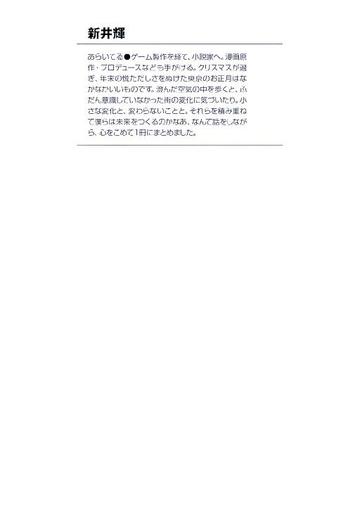
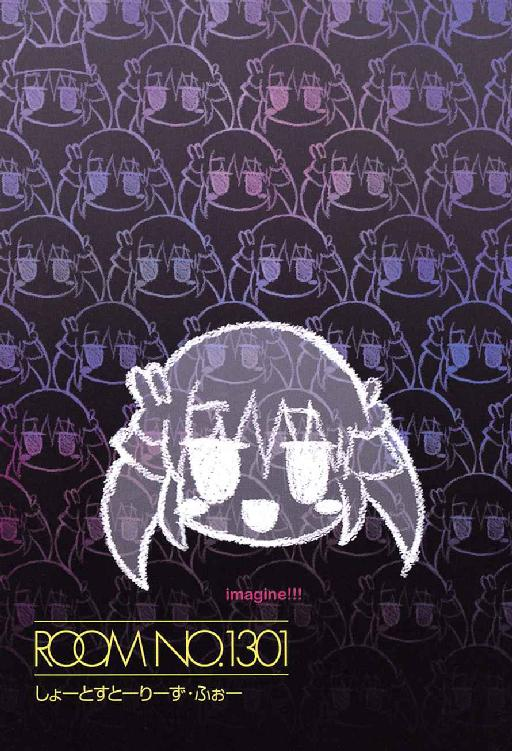
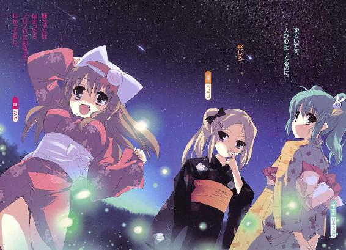
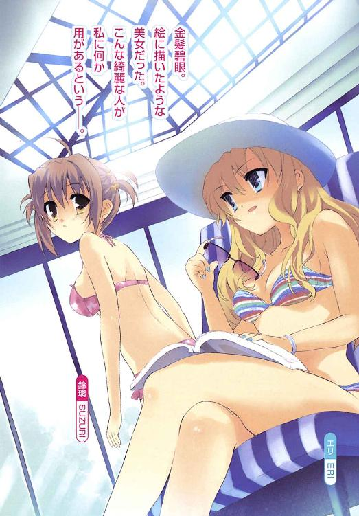
ROOM NO.1301
しょーとすとーりーず・ふぉー
新井 輝

富士見ファンタジア文庫
本作品の全部または一部を無断で複製、転載、配信、送信したり、ホームページ上に転載することを禁止します。また、本作品の内容を無断で改変、改ざん等を行うことも禁止します。
本作品購入時にご承諾いただいた規約により、有償・無償にかかわらず本作品を第三者に譲渡することはできません。
本作品を示すサムネイルなどのイメージ画像は、再ダウンロード時に予告なく変更される場合があります。
本作品は縦書きでレイアウトされています。
また、ご覧になるリーディングシステムにより、表示の差が認められることがあります。
口絵・本文イラスト さっち
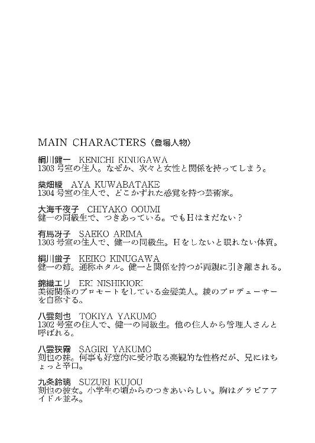
そのいち 僕と綾さんと千人の千夜子ちゃん
「あ、絹川、昨日観た？」
絹川健一にとって、朝一番で訳のわからない話を振られるのはそう珍しいことではなかった。むしろ日課と言ってもいいレベルになって来てると疑った方がいいくらいだ。
「とりあえず何の話なのか言ってから質問してくれよ」
こうして登校して来たばかりの自分に話しかけてくる鍵原ツバメがどういう人間なのかはわかっている。健一の彼女である大海千夜子の友達でクラスメイト。もう何度となく話してきた相手だ。普通には話が通じないことも十分に知っている。
「昨日観たって言ったら、あれのことに決まってるでしょ？」
なのでそんな返しが来るのも十分に予想していた。
「だから、あれじゃわからないって」
でもわからないことはしっかりと伝えておかないと後で怒られることになる。まあ、伝えても怒られるけど、勝手にわかってるものとして話を進められた挙げ句、「だったら早く言いなさいよ！ ムキー！」とか言われるよりはマシだ。
「でも千夜子は観たわよね？」
そしてツバメは健一の疑問には答えず、健一と一緒に登校してきた千夜子に話題を振る。そんなことされたって千夜子だって困るだろうとかはわからないらしい。
「......だから何の話？ テレビ番組か何かかな？」
千夜子はそれでも何の話か推理しようというくらいの気持ちはあるらしい。なので健一としても昨日、なんかそれらしい話でもしてたかと思い出そうとしてみる。
「テレビ番組ねえ」
しかしツバメが何かを楽しみにしてた記憶はなかった。それに健一はほとんどテレビは観ない。となれば最初の質問にはノーと返すことになりそうだ。などと心配してたら、ツバメがしたり顔で説明を始める。
「催眠術よ、催眠術！ アーク・ヒデキの番組がやってたでしょ？」
「......いや、観てないし」
というか誰だ、そのアーク・ヒデキってのは？──と健一は思うが黙っておく。きっと有名な催眠術師なんだろう。
「マジで？ 千夜子は観たわよね？」
そして実際にはどうかはともかく、ツバメからしてみれば知ってて当然ということのようだった。
「......観てないけど」
でも千夜子の方も観てないし、知らないということらしい。どう反応したらいいかという困った顔で答える。
「なによ！ その時間は二人でいちゃいちゃしてたってわけ？」
なのでツバメはえらく不機嫌そうな顔をする。まあ、それもやはりいつものことなので健一はいちいち気にしないことにする。
「......それもないけど、俺、あんまりテレビとか観ないし」
「ふーん。そうなんだ。で、千夜子は？」
「私、あんまり催眠術とか興味ないし」
そして千夜子も別にツバメのご機嫌を回復させようとは思ってないらしい。
「そうなの？ 私は信じてるけどなあ。すごいじゃない。催眠術でわさびをアイスだって思いこむと甘くなったりするのよ？」
「......すごいかなあ、それ」
「なによ！ 千夜子は催眠術なんて信じないって言うの？」
「うーん。あまり信じてないかなあ」
「なんでよ？」
「本当にあったら怖いよ。絶対に悪いことに使う人が出ると思うし」
千夜子はいつものペースで思ったことを言っただけのようだが、それでツバメは思うところがあったらしい。
「......そ、それはそうよね」
「もし本当なのにあんな風にテレビで紹介してたら真似る人とか出てくるよね？」
千夜子の意見は実にもっともな気がした。ツバメももう反論するのは諦めたらしい。
「......そうかも」
「でも、催眠術番組を観て楽しかったって言うツバメの気持ちはわかるな」
そうなるのがわかっていたのか千夜子はツバメの言葉をフォローするようなことを言い出した。そういう流れを観ていると、なんだかんだでお互いやっぱり仲がいいんだなと健一は感じる。
「そ、そうよね」
「うん。私は信じてないけど観てると、やっぱりあるのかなあってドキドキしたりはするし。でもやっぱり嘘だから楽しめるっていうのかな？」
「どういうこと？」
「ジェットコースターとかと一緒で、本当は危険がないからスリルを楽しめるってことかな。私、そんな楽しい嘘はいいと思うな」
「そう、そう、それよ、千夜子。私もそれが言いたかったのよ！」
そして絶対にそう思っていなかったはずなのにツバメは千夜子の言葉に乗ってそんなことを言い始める。それを千夜子は咎めるでもなく、健一に小さく笑いかける。
その笑顔は「ツバメの機嫌が直ってよかったですね」と言ってるかのようだった。
「......楽しい嘘か」
でも健一にとってはツバメの機嫌よりも千夜子の言葉の方が気になった。
○
でも、その日も健一は放課後になると、幽霊マンションへと足を向ける。
「それじゃ、また明日ですね」
「はい、また明日」
千夜子とは付き合っているのだから、もう少し一緒に話したり、どこか寄り道してもいいものだが、お互い用がある時は素直に通学路の途中にある公園のあたりで別れることになっている。
そのあたりをツバメに話すと、健一は彼氏だって自覚がないんじゃないかとなじられることになるのだが、千夜子も文句がある様子もないし、健一はそのままにしていた。
と言っても、健一は別に用があって幽霊マンションに行くわけではない。彼はいろいろと訳あって家を出て、そこで暮らしているのだ。なのでまあ、家に帰るというくらいの意味しかない。
ちなみに幽霊マンションというのは通称に過ぎない。正確には有馬第三ビルだが、ビルの外壁がコンクリートむき出しなせいで曇りの日は空に消えるように見えるのでそう健一は呼んでいた。
そしてそんな名前で呼んでいたせいなのかどうかはさだかではないが、その十二階建てのはずのビルには十三階があって、健一はそのあるはずのない三号室、１３０３に住んでいる。しかも訳ありのクラスメイト、有馬冴子と一緒に。
千夜子という彼女がいるのに、他の女の子と同棲してるというのはどうかと思わないでもないのだが、あるはずのない十三階での出来事なので健一は、現実とは別のことと考えるようにしていた。
そして健一にとって別のことと考えるしかないのは冴子だけではなかった。
「あ、健ちゃんだ！」
１３０１という十三階に住む人間たちが自然と集まる場所には、今日は桑畑綾が健一を待ち受けていたようだった。彼女は四号室、１３０４に住んでおり、世界的な造形家であるらしい。でもその肩書きからは想像できないほど若く、健一より三つ年上。だらしない格好はしているがかなりの美人で、そしてかなり豊かな胸の持ち主でもあったりする。そんな人がパンツ以外は白衣だけなんて格好してるのだから、なかなか困ってしまう。しかも綾はなかなかに積極的で健一は以前、襲われたこともある。というか、健一の初めての相手だったりするのだ。もちろん、そのことは千夜子には秘密にしている。
「なんですか、そのわくわくした顔は？」
そして健一はその時を思い出さずにはいられなかった。綾はその時と一緒の格好だったし、嬉しそうな彼女の表情はその時と思いっきり重なった。
「それがね、それがね」
でもそんなことを言う綾は途端になんだか幼いイメージになる。
「だから、なんなんですか？」
「健ちゃんは催眠術って知ってる？」
「催眠術......ですか？」
なんだか聞いたことのあるような話だなと健一は思う。
「うん。昨日、テレビでやってるのを観たら、おお！って思ってね。コンビニに行ったら『催眠術師になろう！』って本が売ってて買ってきたんだ」
どうやら綾の言ってるのはツバメが観たのと同じ番組であるらしい。アーク・ヒデキとかいう名前の催眠術師の話だろう。
「そんな本でなれるもんなんですか？」
「それはわからないけど、試してみたいなあって思って。健ちゃんが来ないかなあって待ってたってわけ」
にこやかに綾は笑うと、自慢げにその本を健一に見せるように持ち上げた。表紙には『催眠術師になろう！』というタイトルと、やはりというかなんというかアーク・ヒデキという名前が書いてあった。
「......それは、つまり、僕に実験台になれってことですか？」
「うん。まあ、本を読んだくらいでなれるものとは思わないけど、面白そうでしょ？」
「面白い......ですかねえ」
健一は綾の言動に疑問を抱きつつも、これも千夜子の言っていた「楽しい嘘」という奴かなあと思う。まあ、そもそも催眠術なんて信じてないし、しかもかけようというのは綾である。かかるとも思えないし、でも無駄だからやめましょうと言っても綾をがっかりさせるだけ。だったら、バイトまでの時間なら付き合ってあげようかなと思う。
「面白くないかな？」
「でも、まあ、やってみるのはいいかもしれません」
「本当？」
「はい。もう少しちゃんと練習してからの方がよさそうな気もしますけど、今から始めるんですか？」
「うん。健ちゃん、今日はバイトの日だったよね？」
「そうですね」
意外というと失礼かもしれないが、綾も冷静な判断が出来るようになってるんだなと健一は感じたりする。会った頃はもっと無軌道ででたらめな生き方をしてたはずだが。
「じゃあ、さっそく始めるね？ 健ちゃんはそこの席に座って楽にしてればいいから」
「あ、はい」
「じゃあ、これをじっと観てて」
そして綾はどこで手に入れたのか、先に水晶のついた振り子を取り出すと健一の前で横に揺らし始めた。
「あなたは振り子を観ているうちに眠くなります。眠くなります。眠くなります......」
右に左と行ったり来たりする振り子を目で追ううちに健一は綾の声が次第に遠ざかるのを感じた。
集中してるのだろうか？ そんなことを考えるまでもなく、健一は自分が振り子に合わせてゆっくりと揺れているのに気づく。
もちろんそんなことをしようとした覚えはまったくない。
止めようと思ってもなぜか止まらない。単に釣られてるとかそういうことではないらしい。もしかしたら本当に催眠術に？ そう思った途端、まぶたが重くなった。
「あなたは眠くなーる。眠くなーる」
自己暗示という奴かもしれない。かかってると思ってるから自分で知らずのうちにそうしてしまっているのかも。でも、それに気づいても眠くなるのを健一は止められない。
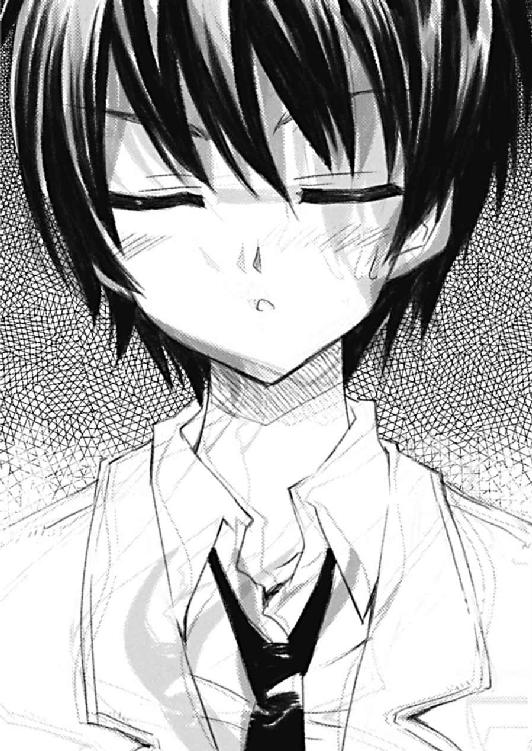
「あ、あれ......？」
そして健一はそのまま本当に眠ってしまったみたいだった。
「んあ......？」
どれだけの時間が経ったのか健一にはわからなかった。
とりあえず目を覚ましてわかったのは、自分が本当に眠っていたということ。そして綾が自分のズボンを脱がそうとしてることだった。
「って、何をしてるんですかっ!?」
健一は一気に眠気が吹き飛んだ思いだった。人を眠らせて、服を脱がそうとは......少しはまともになってると思った自分が間違いだったと健一は気づく。
「だって、ほら、健ちゃん、最初したきりで全然してくれないし......」
「だからってですね、人を催眠術で眠らせて、その隙にしちゃうってのは......犯罪ですよ？」
「でも、ほら、健ちゃんは始まったらノリノリになるってわかってるし。イカせたら和姦だって雑誌にも書いてあったよ？」
「どんな雑誌を読んでるんですか......」
健一は呆れながら半分以上下ろされているズボンをはき直す。悪気はないのはわかるが綾の言動はさすがにどうかと思う。
「え？ 嘘なの？」
「嘘に決まってるでしょ！ そんな理由で犯罪かどうか決まったら大変です！」
「そうなんだ......」
「とにかく、そういう目的で催眠術を使うならもう禁止ですから」
健一はそう言いながら、実際に術にかかったという事実に改めて驚いたりもした。催眠術なんて信じていなかったが、綾がそれっぽいことをしただけで、本当に眠くなったというのは冷静に考えると恐ろしいことかもしれない。
「えー！ まだ眠くするところまでしか試してないのに！」
「その先まで試されたら問題ですから！」
「うーん。じゃあ催眠術だけにするから。ね？ それならいいでしょ？」
「......さっき変なことをしようとしたばかりなのに、そんなこと信じられると思ってるんですか？」
「約束を守れなかったことはあるけど、私は嘘はついたことはないと思うよ？」
「それはそうですけど......って約束守れなかったら一緒じゃないですかっ！ 催眠術だけのつもりが、我慢できずにしちゃったとかになるかもしれないってことですよね？」
「そう、かな？」
「だったらダメじゃないですか」
「そんなこと言わずにしようよ、催眠術。今度は健ちゃんが喜ぶようなのにするからさ」
「とか言いつつ、健ちゃんが喜ぶと思ってとか言いつつ襲おうとしてませんか？」
「してないよ」
綾は邪気のない顔をしてそう言うが、健一はやはり疑惑の視線を投げるしかなかった。なにせ悪気はなくても寝ている健一のズボンを下ろせる人間である。
「こんにちわ......何かあったんですか？」
そんなところにもう一人、十三階の住人がやって来たらしい。健一は声のした入り口の方を観る。
「あ、こんにちわ、有馬さん」
声の主は冴子だった。どうやら健一と綾の間に微妙な空気があるのを感じ取ったらしく、心配そうな顔をしていた。
「こんにちわ、冴ちゃん」
「何かあった......というほどでもなさそうですね」
でも綾が普通に挨拶をしたのでそんなでもないと冴子は考えたらしい。
「まあ、綾さんが催眠術の本を買ったから試してみたいって言うので、ちょっと付き合ってたんですけど」
健一はその先を言ったものか考えて言葉を止めたが、結果的にはなんだか冴子をさらに困らせる結果になってしまったらしい。
「......変なことをされそうになった？」
冴子は恥ずかしそうな顔でそんなことを聞いてきた。
「まあ、そういうことです」
「でも、綾さんはそれはもうしないから、もう少し催眠術をかけたいって思ってるわけですね」
冴子は綾の行動パターンをかなり正確に掴んでいるらしい。それだけの会話だけで成り行きをあらかた理解したみたいだった。
「そう！ そう！ さすが冴ちゃん！」
「じゃあ、私が見張ってるってことでどうですか？ それなら絹川君も安心でしょ？」
そしてどっちかと言わなくても、今日の冴子は綾の味方っぽい雰囲気。そう言われてしまうと健一としては断りづらい。
「そうですね」
「やた！ じゃあ続き！ 続き！」
それに綾は本当に催眠術の続きを試したいだけなのだ。それは健一にはわかる。ただ脱線しないとは限らないだけで。
「わかりましたよ。また眠くなるところから始めるんですか？」
「うんうん。で、眠くなってる健ちゃんに私が暗示をかけるから」
「......それだと僕にはわからないような」
「うん。でもかかってたら、それとわかるはずだから、大丈夫だよ」
「ま、そうですね」
それで健一は観念した気持ちになって、綾が揺らし始めた振り子を見つめる。
「あなたは眠くなーる。眠くなーる」
そしてまだ半分くらいは術にかかってたのかなんなのか、健一は今度はあっさりと眠ってしまった。
「はい！」
綾がそう言って手を叩くのが聞こえて、健一は不意に目を覚ました。そのはずだった。
「......え？ 千夜子ちゃん？」
なのに目を開けてそこにいたのは綾ではなく千夜子だった。
「そっか、彼女さんなんだ」
でもやっぱり綾らしい。服装や言葉遣いが綾のものだった。でも顔や背格好は千夜子にしか見えない。
「......何が起こってるんですか？」
健一は目の前の綾らしい千夜子を観て、それから側で見守ってくれてるはずの冴子のことを思い出す。
「って、有馬さんですよね？」
でも、そこにいたのはかなり千夜子っぽかった。状況から考えると冴子なのだろうが、服が学校帰りのままなので、千夜子にしか見えない。
「うん。でも絹川君には別の人に見えてるってことなのかな？」
「ええ、まあ......」
健一としてはかなり当惑するしかなかった。しゃべり方こそ冴子だが、声はやっぱり千夜子のもののように聞こえる。綾のような明らかなおかしさがない分、すごく落ち着かない気分にさせられる。
「ね、健ちゃん。千夜子ちゃんって、彼女さんの名前だよね？」
でも綾の興味は健一の気持ちではなく、さっき呟いたことにあったらしい。
「はい。そうですけど」
「じゃあ、安心だね」
「......というか、何をしたんですか？」
この異常事態は間違いなく、綾の催眠術によるものだった。何をしてこういうことになったかは知っておかねばと思う。
「みんなが好きな人に見えるようになるって暗示をかけてみたんだ」
「......え？」
「そしたら私も冴ちゃんも彼女さんに見えるようになったみたい」
「......なるほど」
イマイチ状況を掴みかねてはいるが、一応、聞くべきことは聞けた気がする。
「ってことは健ちゃんはちゃんと彼女さんのことが好きってことだよね？」
「そうなりますかね」
健一は綾の言葉にうなずきながら、自分では少し意外に感じもした。彼女のことを好きだって言われて妙に思うというのも変な話だが、でもその辺りにはイマイチ確信が持てずにいたのが正直なところだった。
しかしそういう暗示でこの状況ということは自覚は出来てないけど、ちゃんと千夜子のことを好きになってるということらしい。
「とは言え、ちょっと......参りますね、この状況は」
そしてそれがわかってホッとしたのか、健一は改めて綾の服装が気になってしまった。綾がその格好してるのはさすがに慣れてたが、千夜子がとなると話は別だ。
「どして？」
「どうしてって......服装は綾さんのままなんです」
「そうなんだ。じゃあ私が脱いだら、彼女さんが裸になるってこと？」
「って、念のため言っておきますけど、脱がないでくださいよ？」
なんか本当に見えてしまいそうなので釘を刺しておく。千夜子とは付き合ってずいぶんになるが裸を見るどころかキスすらしてないのだ。なのにこんなところで裸を見たりしたら、かなり問題の気がする。
「......ダメ？」
「ダメ」
「本当に？」
「本当に」
「じゃあ、脱がない」
でもなんだか綾はすごく残念そうな表情をする。それを千夜子の顔でされるとすごく罪悪感を覚えるのは何故だろう？
「ごきげんよう」
そんなところにさらにもう一人やってきた。その言葉から思うに二号室の住人、八雲刻也であろうことは容易に想像できたが。
「......こんにちは」
でも声の主を見るとやはり自信がなくなる。今度は男子制服を着てメガネをかけている千夜子が立っていた。
「ん？ どうかしたのかね？」
そしてそのせいだろう。刻也も何かおかしなことになってるとわかったらしい。
「それが......」
でもどう説明したものかと健一は思う。
「今、絹川君は綾さんの催眠術のせいで、皆、大海さんに見えてるみたいなんです」
それを冴子がフォローしてくれた。
「大海君にかね？ それはどうやら私も例外ではないということのようだが」
「......はい」
口調こそ刻也だが、やはり千夜子の顔、千夜子の声でそんなことを言われるのはかなりの違和感がある。
「しかし綾さんにそんな特技があったとは知りませんでしたが」
刻也の疑問はそのことだったらしい。確かにそれはそうだろうと健一が思っている間に綾が口を開く。
「うん。今日、ちょっと本を買ってきて試しでやってみただけだから」
「というか、早く戻してくださいよ。もう気が済みましたよね？」
「うん。すごいよね、催眠術って」
「確かにすごいとは思いますけど......っていうか、このままだとまずいですから」
健一はかなり追いつめられた気分で頼んでるはずだが、綾はやけにのん気そうだった。
「そうだろうね、きっと」
「だろうね......じゃなくてですね」
「でも戻し方はよくわからないんだよね」
そして綾は予想外のことを言い始めた。
「え？」
「暗示をかける方法は書いてあるんだけど、解く方法は書いてないんだ。やっぱり本気でかかると思って書いてないのかなあ」
「それ自体は鋭い分析だと思うんですけど、そういうのは先に気づいて欲しかったかなあなんて思うんですけど......」
「うん。気づいてはいたんだけど、本当にかかるとは思ってなかったから平気かなあって。多分、そのうち戻るよ」
「いや、そのうちとか言われても......」
「じゃあ一応、暗示は解けるって暗示をかけてみようか？」
「......お願いします」
健一としては一応じゃなく真剣にやって欲しいと思っていたが、その辺りにはつっこまず素直に頭を下げるしかなかった。
「......ダメみたいですけど」
でもそんな忍耐はなんの成果にも結びつかなかった。三回解くことを試みたけど、全部失敗した。つまり、まだ綾は千夜子に見えていて、冴子も心配そうに、でも千夜子の顔でこっちを見ているという状況に変わりはない。刻也は忙しいからと二度目辺りで出かけてしまったのも今となっては良いことのような気もしてくる。
「うーん。かける才能はあるけど、解く才能はないってことかな？」
「ことかなって言われても」
「じゃあ健ちゃんが実は心の奥底では元に戻らないでと思ってるとか？」
「そう、なんですかね......」
そうとは思えないが、心の奥底でとか言われると否定しきれないものはある。そもそも好きな人と言われて千夜子が出てくるというのも意外に感じたのだから。
「まあ、そのうち直るよ、きっと」
「......自分でやっておいて適当ですね」
健一はそう呟きながら、でもそうであることを祈るしかなかった。
もうバイトの時間がせまっていたし、綾にこれ以上期待するのは無理だった。
「寝てるうちに忘れたりとか、しないかな」
そしてそれでも冴子は心配してくれているらしい。気休めでしかないかもしれないけど、そんなことを言ってくれた。
「そう、ですね」
なので健一はしばらく我慢することにした。千夜子ばかりの世界ではあるけど、特に実害というのもなさそうだし──健一は外に出るまではそんな風に考えていた。
○
でもその考えが甘かったことを健一は思い知らされた。
「い、いらっしゃいませ」
健一のバイト先は喫茶店だった。バイト先のマスターが千夜子に見えるのはさほどでもなかったが、来る客、来る客が千夜子に見えるというのはかなり心臓に悪い。
しかもなんだか知らないが普段はほとんど客の来ない店なのに、今日に限っては次々にやってきたりする。しかもけっこう変わった格好の人たちが。
なぜか看護師の女性たちがやってきたり、どうやらホステスらしい人たちがお客さんと一緒に、とか。それは喫茶店としてはそんなに珍しい光景ではないのかもしれないけれど、それが全部、千夜子の顔となると話はかなり違う。
胸元の開いた華美なドレスを着た千夜子が背広を着た千夜子と話しているのだ。この喫茶店は禁煙だけど、そうじゃなかったら千夜子が喫煙してるところを見ることになったんだろうかとかそんな不安まで感じてしまう。
「綾さんが服を脱ぐどころじゃないよな」
しかも恐ろしいことに雑誌の表紙でもなんでも人間として認識できるものは全部、千夜子に見えてしまうのだ。
コンビニの前を歩く時も気をつけないと大変なことになってしまうことは容易に想像がついた。エッチな雑誌の表紙を見るのもかなり心臓に悪そうだ。
「......絹川君、なんだか顔色悪いけど？」
そしてそんな風に心配して話しかけてくれる声までやはり千夜子の声に聞こえる。頭ではそれがマスターである古西早苗の声のはずだとわかってるのだが、やっぱり千夜子に心配されてるような気分になる。
「だ、大丈夫です」
なので健一は普段以上に心配かけまいと思ってしまう。そしてそんな自分に健一は気づいて、思ってたよりずっと千夜子のことを大事に思ってるんだなあと気づいたりもした。
「......ただいま」
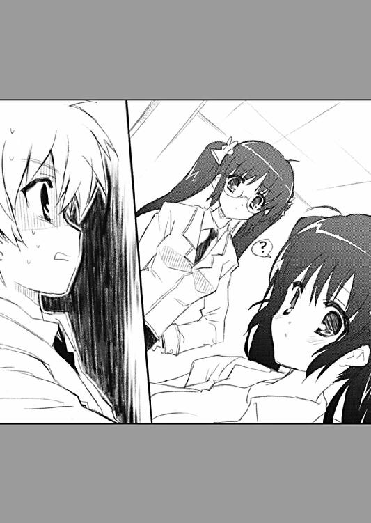
とは言え、やはり消耗が激しかったのは事実だった。自分の部屋に戻ってきたところで力が抜けたなんて初めての経験だと思う。
「おかえりなさい」
でも、まだ千夜子の声が聞こえる。
「バイト、私が代わった方がよかったかな」
やっぱり話してるのは冴子だと健一はすぐにわかった。
一緒のところでバイトしてるのは冴子だったし、一緒の部屋に住んでるのは冴子だ。他人には見せられない弱い部分を見せてきたのも冴子だし、そんな時、自分を支えてくれたのも冴子だった。声や姿が千夜子であっても、それがわからないわけはなかった。
「いえ、いいんです。今日は僕の当番の日だったんですから」
それがわかると健一は少し元気が戻ってきた気がした。
「でも明らかに調子悪そうだし」
それでもそれは本当に少しでしかなくて、リビングのソファのところまで来ると健一は倒れるように座り込む。
「僕は......心配させちゃったんですかね」
健一は隣に冴子が座ったのを待って、小声でそう呟いた。それから力なく冴子に寄りかかる。目をつぶる。なんだか前にもこんなことがあったなと健一は思う。弱った自分はこうやって何度か冴子に頼ってきた。
「私が勝手に心配しただけよ。時間が余ってるといらないこと考えちゃうって、久しぶりに思い出したりしてた」
冴子のその言葉に健一は、彼女がこの部屋に来たばかりのことを思い出す。以前の彼女はちょくちょく眠れない夜を過ごしていて、その度に自分のしてきたことを懺悔していたらしい。
何が原因なのかわからないが、冴子は一人でいると眠れなくなってしまったという話だった。しかも誰か側にいればそれでいいという話でもない。
私ね、エッチ依存症ってヤツなんだと思う──そう冴子は言った。だからここにはいられないとも。もう迷惑をかけたくないと言って出て行こうとした彼女を健一は止めた。それが冴子が必要な時に体を重ねることになるにもかかわらず。そしてそうなる前に冴子は一つの約束を健一にしてくれるように頼んだ。
私のこと絶対に、好きにならないで欲しいの──と。なんでそんなことをわざわざ言ったのか健一にはわからない。でもそうでなければここにいられないという冴子の言葉はきっと本当なのだろうことはわかっていた。
「でも、それも僕のせいですよね？」
そう言いながら健一は、少し救われたとも感じていた。
久しぶりにと冴子が言ったのは、ここのところ元気そうに見えていたのが、本当のことだと思えたからだ。
でも冴子は健一の質問にも、彼の思いにも答えるようなことは言わなかった。
「自分でも不思議に思った。なんであんなにもずっと思ってたことを私は忘れてたんだろうって。でもよく考えてみたら不思議でも何でもないことよね」
冴子はただそんな想いを口にする。
「そうですか？」
「私、けっこう楽しんでたんだと思う。ここでの生活もそうだけど、外での生活も」
冴子がどんな顔をしてそう言ったのかは健一には見えなかった。寄りかかっていたし、目も開けていなかった。それに見ていても千夜子の顔としてしか認識できなかった。
なのに健一には冴子の顔が見えた気がした。少し困ったような、でも嬉しそうでもある彼女の独特の笑顔。それを健一は思い浮かべることができた。
「そうか......」
思い浮かべることはできるんだな。健一はそれに気づいてホッとした気持ちになる。
「どうして笑うの？」
でもそれを冴子は自分の言ったことがおかしかったと思ったらしい。
「そうじゃないんですよ。こうして目をつぶってる方が有馬さんの顔が見えるんだって気づいたんです」
「それで笑ったの？」
「はい」
健一は素直にそう答えたが、なんだか冴子は落ち着かない感じだった。
「......本当に絹川君ってエッチなのね」
なんでだろうと思っていたら、冴子はそんなことを呟く。時折聞かされる彼女の言葉だ。それは千夜子の声で発せられていたはずだが、冴子の声で届いた。
どうやら冴子はいつも灯りを消して体を重ねていることを健一が思い出してると考えたらしい。
「それで思い出しましたけど、今晩はどうするんですか？」
それはもちろん、寝るためにエッチをするかどうかという質問だった。
「え？ えっと......一日くらい寝なくても平気だから......」
「僕は多分、平気ですよ。有馬さんが気になるなら遠慮しますけど」
「私が気にする？ どうして？」
「僕には有馬さんが千夜子ちゃんに見えてるわけですから」
「大海さんのつもりで私とってこと？」
「そういうつもりはないですけど、そう取られても仕方ない、ですよね？」
「私はそんなことは思ってなかったけど。それに見えないわけでしょ？」
「そうですね」
実際には声も千夜子なのだから、見えないから問題ないということはない。でもそのことを言ったら冴子はきっと遠慮するだろうなと健一は思う。
「でも疲れてるのは問題よね」
なのに、言わなくても遠慮される。いつものことだけど、冴子は自分ばかり損をすることを選んでるように思う。健一は助けられてばかりで、冴子の力になれてない。
「もう元気になりました」
だから健一はもう泣き言は言わないことにしようと思う。
「......本当に絹川君ってエッチなのね」
でも冴子はそういう意味にはとってくれなかったみたいだった。
○
寝てるうちに忘れたりとか、しないかな──なんて冴子が言っていたことは、やっぱり根拠のない希望でしかなかったらしい。
次の日になっても健一の世界には千夜子しかいないままだった。
「うわ......」
そして健一はバイト先どころではない状況が待っていることに気づかされた。
健一の通う比良井高校へと向かう人たちは当たり前のことだが同じ制服を着ている。男子はともかく女子に関しては千夜子との違いを見つけるのは困難だった。
なので健一は公園のところで千夜子を待つことにした。黙って待ってて向こうから話しかけてもらうしかなさそうだった。
そして健一はまた別の冴子の言葉を思い出す。時間が余ってるといらないこと考えちゃうというヤツだ。
「......あれはまずかったよな」
冴子のためにと思ってしたことだったが、やっぱり声が千夜子というのはかなり問題だった。暗がりの中、触れた肌は間違いなく冴子のものだと思えたけど、目が見えない分、声がよりはっきりと聞こえてしまった。それを思い出すと本当にいけないことをしてたんだなと感じてしまう。
本当の千夜子とはそんなことをしたことはないけれど、ああいう声を出すのかなとか想像してしまう。
「おはようございます、健一さん」
不意にそんな千夜子の声が聞こえた。
「......おはようございます」
健一は声のした方を振り返る。そこには当たり前だが千夜子が立っていた。でも健一はそれが本当の千夜子だとわかる。声はみんな一緒だけれど、それは何度となく聞いた千夜子の「健一さん」という呼び名だった。
でも改めて周りを見渡せば、やはり千夜子だらけで、千夜子の声でみんな話してる。
「どうしたんですか？」
「いや......その......ちょっとお願いがあるんですけど、いいですか？」
なので健一は不安な気持ちを感じて、千夜子に思い切って頼んでみることにする。
「はい。私が出来ることであれば」
「今日は手を繋いで登校してくれませんか？」
それは別に今更、新しいことでもなかった。でもそれを健一から頼んだということはなかったかもしれない。
「改めてそう言われると照れちゃいますけど。私、言いましたよね？ 手を握るくらいいつでもいいですって」
千夜子はそう言って恥ずかしそうにではあったけど手を差し伸べてくれる。
「そう、ですよね」
それに応えて健一は千夜子と手を繋ぐ。
「......どうしたんですか？」
それで気がゆるんだのか、千夜子が不思議そうな顔をする。
「やっぱり千夜子ちゃんは千夜子ちゃんなんだなって思っただけですよ」
だから健一は素直にそんなことを言ってみる。その結果はやっぱりと言えばやっぱりなのだが、いかにも千夜子らしい反応だった。
「ずるいです。人が心配してるのに」
千夜子はそう言って顔を真っ赤にした。それはいつかも見た表情だったかもしれない。
だから、その時のことを健一は思い出す。その想いと共に。
こんな千夜子ちゃんだから、きっとまだキスも出来てないんだな──と。
○
ちなみに健一の暗示が解けたのは、その日の昼食の時、ツバメを怒らせて首を絞められて気を失った後のことだったという。
おしまい
そのに 私とお嬢様とメガネなお仕事
御園尾咲良という女の子は考えなしにしゃべっている。
──と周りに思われてるように感じてたんですが、やっぱりそうだったみたいです。
「御園尾さんは、もう少し考えてから話した方がいいと思うよ」
九条さんはそうは言ったけど、実はけっこう考えてからの発言だったのです。
しかもかれこれ一週間以上、早苗さんの喫茶店で聞いた話のことでずっと気にしてたわけで、確かに相手の反応を見る限り、むしろ言わない方がいいことだったとは思うんですけど、それでも思いつきみたいに言われると、傷つくわけです。
私としては良かれと思って言ったわけで。
「......考えなしでした？」
不味いなあ、私。どうしてこういう時って上手く回らないんだろう？ 相性みたいなのがやっぱりあるんですかね？
「誰も彼もが御園尾さんと同じように考えてるわけじゃないんだから」
九条さんがそう言ったのは要するに誰も彼もが芸能界に夢を抱いてるというわけではないということのようでした。
私はアイドルを目指してるけど、九条さんはそんな気はまったくない。そういうことみたいです。実にもっともな感じです。
「......すみません。ちょうど九条さんみたいな人がいるといいなあという話があったからちょっと言ってみただけなんです。ああ、でもそれが考えなしってことですよね」
早苗さんの書いてる『ああんっ！ メガネ様☆』の主人公の婚約者が本当に九条さんにそっくりだと思ったから私はその気があるかどうか調べてみたというだけなんですが......そういう風に注目を浴びるようなことは九条さんはかなり毛嫌いしてるらしいということを私はやっと理解しました。ああ、不味いなあ、私。
「......とにかく、私はそういうこと全然、興味ないから」
そしてそんな私の反省もむなしく九条さんは怒りながら帰って行ってしまいました。
○
「ああいう時は明日、謝った方がいいのかなあ」
私は一度、家に帰って、また出かけることにしても、まだ九条さんのことを考えていました。
大して仲良くないのに怒らせてしまった場合は蒸し返さない方がいいんでしょうか？ それとも怒らせたのだから謝るべきなんでしょうか？ 別に謝りたくないわけじゃないし、むしろ謝りたいくらいなんですけど、かなり悩みどころです。
「もう終わったことでしょ？──とまた怒られたら本末転倒だけど、なんで謝らないのって怒られるって可能性もあるし......」
もう少し九条さんと仲良くなってから話すべきだったんだなあと私は改めて感じました。そうすればそもそも言わない方が良かったと気づいただろうし、失言してもフォローの仕方もわかったかもしれないわけです。
とすれば、何も考えずに話してるわけじゃないけど、私が相手のことを考えずに話してるのは確かで。
「......それを世間では考えなしって言うのかな」
なんて今頃、気づいた私です。なので、やっぱり考えてからしゃべった方がいいという九条さんの意見は正しかったようです。
「じゃあ皆の私への評価は正しい、と」
そんなこんなで私がこの件については一つの解決を見たかなと思った時、私は信号が赤なので立ち止まりました。それでちょっと周りを見渡すと、そこに知った人がいました。
「あ、お嬢様っ」
私は気づくと随分と近くにいたのでびっくりして声をあげてしまいました。これは本当にあらゆる意味で考えなしの行動です。
「......私のことですか？」
でもその相手は怒ったりはしませんでした。ちょっと不思議そうな顔をしただけです。
「あ、はい......すみません」
私はちょっと緊張しました。私の方は何度か見かけてる顔でしたけど、特に話したことのある相手ではなかったからです。
その人の名は八雲狭霧。私のバイト先に時々来ている、店長の知り合いでした。中学生なのにすごく大人びていて綺麗な娘で、私が勝手にファンになってる人でもあります。
「えっと......どちらでお会いしましたっけ？」
「あ、その......一方的に私の方から見てただけなんです。私、『モン・サン・ミシェール』でバイトをしてまして、それでお嬢様のことは時々、そこで見かけてまして」
そう説明しながら私は、なんだかアイドルに話しかけてしまったただのファンみたいな気持ちになってきました。実際、私はただのファンなのでみたいもなにもないそのままです。
「それでお嬢様なんですね」
なのにお嬢様は特に不愉快そうな顔はせず、むしろ謎が解けたとほっとしたようでした。
「はい。店長がそう呼んでたので、店員の間でもそんな風に......って失礼ですよね。すみません」
「失礼ってことはないですけど......えっと、そちらのお名前は？」
「あ、すみません。御園尾咲良と言います。名字は変ですから咲良と呼んでいただければ」
「じゃあ、咲良さんって呼びますね」
「はい。お願いします」
「それで咲良さん。私は咲良さんにお嬢様と呼ばれる立場の人間じゃありませんから、もう少し普通に呼んでくれる方が嬉しいですよ」
「もう少し普通ということは八雲さんですか？ それとも......」
私が別の可能性を模索し始めた瞬間、お嬢様はあっさり私の言葉に割り込んできました。
「狭霧でいいですよ。咲良さんの方が年上ですよね？ だったらかしこまった言い方なんてする必要ないじゃないですか」
お嬢様は外見やその偉さに反して気さくな人だったみたいです。
「じゃあ、狭霧さんと呼ばせてもらっていいですか？」
「別に狭霧とか狭霧ちゃんでいいですよ」
「私、狭霧さんの個人的なファンなんです。だからちょっと狭霧とか狭霧ちゃんっていうのは慣れ慣れしいかなあって。あ、ファンというのは本当に個人的なことで、えっと尊敬してるというか憧憬の的というか、そういうことなんですけど」
私はそれを話しながらやっぱり変かなあと思い始めていました。
「でしたら咲良さんが呼びたいようにしてくれていいですよ」
でもお嬢様はやっぱり嫌な顔をせず、むしろ笑っているみたいでした。お嬢様という呼び方が似合うような人はやっぱりそういう風に上に見られることに慣れてるということみたいです。
「それは私が狭霧さんのファンでもいいということでしょうか？ それとも理由はどうあれ狭霧さんと呼びたいなら呼べばいいという話ですか？」
「それは、どっちでも一緒だと思いますけど？」
「......あ、そうですね。すみません。私、考えなしで話すところがあって」
「でも私はそういう咲良さん、嫌いじゃないですよ？」
「......そうなんですか？」
「ええ。せっかくですから、これを機に仲良くしてくれれば嬉しいです」
「いえ、それはこっちのセリフで。お嬢様と仲良くなれるなんて夢のようです。狭霧さんにこんなこと言ってもらえるなんて、美味しいなあ、私」
「咲良さんって面白い人ですね」
お嬢様はなんだか私のことを気に入ってくれてるみたいでした。さっきからの会話のどこでそんなことになったのかは私にはさっぱりわからなかったですけど、でもお嬢様が思っていた以上に気さくな人で助かったなあという感じです。
「......いえ。もう少し面白い人間なら、今日も買い物に行かずに済むところだったくらいで」
「どういう意味ですか？」
「あ、私、アイドルの卵なんですよ。でもちょっとキャラ立ちが甘いっていうことで、メガネでもかけたらどうかって言われてるんです」
「そうなんですか。じゃあメガネを買いに行くんですね？」
「はい」
「だったら一緒に行きませんか？ 私はメガネが目当てじゃないですけど、駅ビル辺りに行くんですよね？」
その時、ちょうど信号が青に変わって私は歩き出さないとと思いました。
「はい、喜んでー」
だから私は迷いなくそう答えていました。
美味しいなあ、私と思うあまりに正直、九条さんに考えなしだって怒られたことはもう忘れていた感じです。
○
「狭霧さんはメガネ買いに来たわけじゃないんですよね？」
一緒に行くというのが、駅前ぐらいまでではないのに気づいたのは、メガネ屋さんに来てからでした。
「私はちょっと水着を新調しようかと思ってるんですけど、それはメガネを選んでからでいいんじゃないですか？ ほら、ここのお店、四十五分でお渡し出来るって書いてあるじゃないですか」
お嬢様はそう言ってお店に貼ってあるポスターの文字を指さしました。
「確かに書いてありますね」
つまりお嬢様は私のメガネ選びに付き合ってくれて、その代わりに次は私がお嬢様に付き合うということみたいです。というよりは私の暇つぶしにお嬢様がさらに付き合ってくれるということかもしれません。意外にお嬢様は暇なのかもしれないなんて、ちょっと失礼なことを思ってしまいました。
「なので、まずメガネを選びませんか？」
「そうですね。でもどんなのがいいんですかね？ やっぱり縁が太い、いかにもメガネかけてるーっていうのがいいんですかね？」
私はそう言いながら、並べられてるメガネを一つ一つ見ていきました。自分がかけたらどうなるのかなあと想像しながら。
でも、どれも今ひとつピンと来ません。
「どうでしょう？ 私はそういうのにはあまりこだわらなくてもいいと思いますけど」
「そうなんですか？ 目が悪いわけでもないのにメガネをかけろってことは、そういうことのような気がしますけど、私」
「私もその人がなんでそういう言い方をしたのかはわからないですけど、要は魅力を付加して、他の娘と差別化を図りたいということですよね？ だったらそんなにわざとらしくないのでもいいと思いますよ。大事なのは咲良さんに似合ってるってことじゃないですか？」
お嬢様はきょろきょろと周りを見渡すと、何か見つけたらしくスッと歩き出しました。
「......どうしたんですか？」
私はそんなお嬢様の行動に気づいて追いかけました。
「これ、いいんじゃないですか？」
そしてお嬢様はフレームを一つ取り上げると私に見せました。
それは私が想像してたのとはかなり違っていました。全体的に細身の青いフレームのものでした。メガネっ娘というと赤系で野暮ったい感じがいいかと思ってたんですが......でもお嬢様に薦められるとそれもアリかなと思えてきました。
「......あ、いいかも」
試しにかけてみると、なるほどという感じがしてきました。確かに似合っていました。
「思ってた以上ですね」
そんな私の隣でお嬢様はニコニコとそんなことを言いました。
「青が似合うなんて私、ちょっと意外な気がしました。女の子だし、可愛い感じの色の方がいいのかなあってなんとなく思ってたんですけど」
「青はあんまり好きじゃないですか？」
「好きとか嫌いじゃなくて、選択肢に入っていなかったというか。でも、うん、気に入りました。狭霧さんが教えてくれなかったら絶対にわからなかったと思います。美味しいなあ、私」
私はもう他のフレームを試すという気もありませんでした。お嬢様が選んでくれたこのメガネが似合っていたし、気に入ったのです。
「それは何よりです」
そしてそんな私をお嬢様は気に入ってくれてるみたいでした。
○
なので今度は私がお嬢様の水着選びに協力しようと思ってたんですが、それはなかなか困難なようでした。
「どうでしょ、これとか？」
お嬢様が選ぶ水着はどれもこれも大胆な感じのものでした。とても普通にプールで着るためのものとは思えないものばかりでした。
「狭霧さんなら似合うと思いますよ」
でもそれは確かにお嬢様が着るなら似合いそうだなあというものでもあったのです。
メガネの時もそうだったわけですけど、私とお嬢様ではものを選ぶ時のスケールというか、選択肢の幅が全然違うのだなあと感じました。
「咲良さんはどっちがいいと思います？」
そう言いながらお嬢様は色違いの水着を二つ、私に見せました。赤と黄色。デザインは同じで、かなり過激なビキニでした。
「私は赤かなあって思います。なんか安易な感じもしますけど、やっぱり狭霧さんが着るならそれくらい派手でもいいような。でもちょっと人前で着るには大胆だったりしますかね？」
私はそんなことを心配しましたが、お嬢様にとってはどうでもいいことだったみたいです。
「人前で着る訳じゃないですから平気ですよ」
「え？ どういうことですか？」
私はどうも水着というとプールで着るものというよりは、オーディションというイメージでした。なんであれって水着を着るんですかね？ ＴＶ番組でもっぱら水着って言うならわかりますけど、脱いだらすごいとかおよそ関係ない気がするんですけど......って話が逸れました。
「家のプールで着るのを探してるんです」
「家のプールで......」
その言葉は私に改めて「お嬢様」という単語を意識させるのに十分でした。アメリカならそういう家もたくさんありそうですけど、日本で家にプールがあるなんてかなりのものです。
お嬢様は本当にお嬢様だったみたいです。
「なのでまあ、最悪、裸でもいいんですけどね」
お嬢様はさらに私に衝撃を与える言葉を口にしました。でもお嬢様が言うとやっぱり格好いい気もしました。私だったらだらしないって感じですが、お嬢様だと「見たければどうぞ」とでも言わんばかりです。
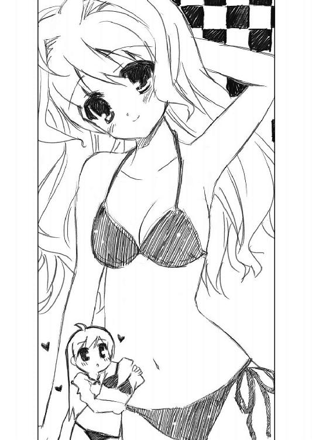
「家族の方とかは入らないんですか？」
でも私はやっぱり小市民なのでそんなつまらないことが気になってしまいます。
「昔はともかく、今は私くらいしか使ってないですね。時間によっては使用人の方が使う場合もありますけど、女性ばかりですから」
「......はぁ」
私は色々な意味で驚いてしまいました。
使用人という単語が出てきただけでも十分すごいのに、女性ばかりという話です。ということはきっと一人や二人ではなく、けっこうな人数がいるということ、ですよね？ それをさも当然のように言ってのけるということは、やっぱりお嬢様は本当にお嬢様だったようです。
「咲良さんは水着持ってます？」
「あ、はい。最近はプールには行ってないんですけど」
じゃあなぜ水着を持ってるんだと説明する必要があるのかなと思った時、お嬢様はあっさりとそれを言い当てました。
「ああ、オーディションとかで着るんですね」
「ええ。ちょっとプールで着るには過激なデザインだったりするんですけどね」
「これといい勝負ですか？」
お嬢様はそう言ってさっきから手にしてた赤いビキニを私に改めて見せました。
「そこまでは大胆じゃないと思いますけど」
でもけっこういい勝負かもしれないという気がしました。色は緑でお嬢様の赤の派手さには及ばないですけど、露出度という意味では大差はない気もします。
「とすると......もう少しおとなしめのを選んだ方がいいですかね。さすがに誰に見せるでもないとは言え、はしたないかもしれませんね」
そしてお嬢様は私の態度からそういう結論に辿り着いたみたいです。
私はそんな様子に不思議な人だなあという思いが深まるのを感じました。
話す前は綺麗な顔をした真面目な人というイメージでしたけど、案外、ぶっとんだところもあって、でも意外に人の考えてることを先読みするようなところもあって......とにかく一筋縄ではいかない人ではあるみたいです。
○
それから私たちは駅ビルを歩き回ることになりました。メガネができるまで三十分近く残っていたからです。
お嬢様を私の都合で振り回してるみたいで、私はもう少し水着選びをじっくりするべきだったかなあなんて思ったりもしたんですが、お嬢様はさほど気にしてないというか、終始楽しげでした。
よくわかりませんが、お嬢様は私と話してるのが楽しいみたいです。
「え？ 高校を出たら結婚するんですか？」
そんなわけで出来たメガネを受け取っても、私たちは行動を共にしていました。
それで自然と話題はお嬢様の家庭事情に移っていきました。
「ええ。私、弁護士の妻になるんですよ」
お嬢様はさも当たり前のようにそんなことを言ってのけました。この辺もさすがお嬢様という気もしましたが、まだ中学生なのにそんなことが決まってるというのは小市民の私にはかなり驚きの出来事でした。
「......弁護士の妻ですか」
そして改めて考えて見ると、それはけっこう羨ましがられることだったりしそうです。でも玉の輿という程ではないんですかね？ お父さんが弁護士事務所を経営していて、それを受け継いでくれる男性と結婚するわけですから。
「話すとけっこう驚かれるんですけど、そんなに変な話なんですかね？」
「変ってことはないと思うんですよね。親が自分の仕事を継いで欲しいと考えるのは普通というか、そうであって欲しいって感じもしますし。受け継げと強制されるのは嫌ですけど、受け継いで欲しいってことは自分の選んだ仕事に後悔してないってことなわけじゃないですか」
「ですよね」
お嬢様はそう答えながらも、ちょっと驚いたようでした。また私は変なことを言ってしまったようです。でもお嬢様はその後、すぐまた笑ったので、そんなに間違った答えというわけでもなかった気もします。
「狭霧さんが自分で弁護士になるっていうのはなしなんですか？」
「え？ ああ、そういうのはダメみたいですね。父はちょっと古風な人なので女に学歴なんてない方がいいと思ってるみたいですから」
「だから高校を出たら結婚しろってことなんですね。なるほど、なるほど」
私はそう言いながら、お嬢様は許されるなら弁護士くらい軽くなれると思ってるように感じていました。むしろ邪魔だからそんなことはしないけど、できないわけでも、それをするのが面倒と思ってるわけでもない。そんな感じです。
「でもおかげでちょっと暇を持てあまし気味かもしれませんね。高校入試にしても進学校に行く必要ないわけですし」
「それはそうですよね。大学行かないのに進学校に行っても意味ないですよね」
「咲良さんはどちらに通ってるんですか？」
「私ですか？ 私は壱女です。とか言いつつ、近々転校するかもしれないんですけど」
「なんでですか？」
「デビューしたら......というかそれで軌道に乗ったら芸能活動に理解のあるところに転校する方がいいみたいなんですよね。まあ、私がそこまで行けるかどうかはわからないんですけど」
「なるほど、そういう世界なんですね」
お嬢様は私の言葉に感心した様子でした。意外にそっちの方向ではお嬢様はあまり知識がないのかもしれないというか、そういう世俗のつまらないことには興味がないというか。普通の女の子なら当然知ってそうなこともお嬢様にとっては新鮮なことだったようです。
「ええ、そういう世界なんです」
「だから咲良さんは生き生きしてるんですね」
そしてお嬢様はそんなことを言い出しました。
「え？ なんですか、それ？」
「いえ。私の話なんですけど。別に将来に不満はないんですけど、先が見えちゃってるって感じがちょっとつまらない気もするんですよね」
「でも私は先が見えてないので、日々、ドキドキして生きてるってことですか」
「ええ、まあ、そんな感じです」
「なるほど。確かにそういうところはありますよね。どうともならないかもしれないので不安はありますけど、逆に何かすごいことになるかもしれないってわくわくもある気はします。本当にそういう風に感じるだけで、実際にはそうはならないわけですけど」
「いえ、きっと咲良さんなら夢を掴めますよ」
「だといいんですけどねえ。でも確かに狭霧さんの言うとおり、夢に向かって頑張れるってこと自体が楽しいのかもしれません。売れっ子になれるかどうかとかは結果でしかないですよね」
それに正直、私も芸能人になることが一生の仕事という気はしてないわけです。
「咲良さんって面白いですよね」
でもお嬢様はそんな私の言葉が気に入ったみたいでした。その理由は相変わらずわからないわけですけど、九条さんとは違ってお嬢様とは相性が良いのかもしれません。
「だったら狭霧さんも何か夢を持つというのはどうですか？」
「......私がですか？」
「時間が余ってると人間ってよくない考えにとらわれたりしますから、大した意味はなくても忙しくしてた方がいいみたいですよ。何か探してわくわく生きる方がきっといいんです」
「それは、なんとなくわかりますね。でも、学歴もいらないって言われてる身ですから、夢と言っても自由に選んでいいわけじゃなさそうです」
お嬢様の言い分はもっともでした。でもそういう風に自分で自分を縛ってる風なところはちょっと意外な気もしました。私に青いメガネを選んだりするところは自由だったのに、自分のこととなるとお嬢様は選択の幅が狭いみたいです。
「そうですねえ。とりあえず、恋をするとかどうですか？」
なので私は思いきってそんなことを言ってみました。
「恋ですか？」
お嬢様はかなり驚いた様子でした。
「ええ。恋です」
「恋っていうのはしようと思ってできることなんですか？ それに私、結婚するんですよ？」
「しようと思ってできるかは私もわからないですけど、試してみるのはいいんじゃないですか？ それに高校を出るのにしても三年以上も先のことじゃないですか。もうずっとずっと先の話ですよ。その間に狭霧さんの考えが変わってもおかしくないくらいには長い時間です」
「確かに、そうですね。でも......さすがに恋ってのは無理があるんじゃないですかね」
「そんなに無理ですかね？」
「高校に入ってから考えが変わるかもしれませんけど、私、年上好きっぽいんですよね。同じ年くらいだとどうしても子供っぽく見えちゃうと言った方がいいかもしれませんけど」
「今だと周りに同じか年下しかいないってわけですね？ だったら外に出るって手もあるんじゃないですか？ たとえばアルバイトを始めるとか。そうしたら新しい出会いとかありそうです」
「アルバイトですか......それはちょっと考えたこともなかったですね」
お嬢様はかなり意外という顔をしていました。お嬢様なのでアルバイトをしてお金を稼ぐなんてことは本当に想像したこともなかったのかもしれないなんて私は感じました。
「『モン・サン・ミシェール』とかどうですか？ ちょうど一人辞めちゃった娘がいてバイト募集中みたいですけど」
「それは辻堂さんが困りそうな気がします。私を雇ったりしたら父に怒られそうです」
「ああ......そういうこともあるんですね」
私はさすがお嬢様と感心してしまいました。
「実際に父が怒るかどうかと言ったらそんなことはないと思うんですけど、辻堂さんはそういうこと気にしそうですよね」
「そうですねえ。でも実際に怒らないということであれば、アルバイトをしてみるのはいいんじゃないですか？」
「ですね。なんだか私、わくわくして来ました。バイト探しってしたことないですから」
お嬢様はそんなことを言ってにっこりと笑いました。その笑顔は本当に曇りなく、私の手前演技してるとかそういうことではなさそうです。
「いいバイトが見つかるといいですね」
「はい。それでその、咲良さん？」
お嬢様がそう尋ねてきた時、私たちは今日出会った横断歩道の所まで来ていました。
「はい？ なんでしょうか？」
「まだ時間があるならでいいんですけど、お茶でも飲みに行きませんか？」
そしてお嬢様の提案はこの場所ならではのものでした。このままどちらもそれを言い出さなければ、またどこかで偶然に出会うのを待つのみということになるところだったのです。
「ええ。それは喜んで」
だから私はそう答えて、さらにこっちからもう一言付け加えました。
「コーヒーでいいんでしたら、いい喫茶店があるんですけど、そこでいいですか？」
「あ、はい」
お嬢様はそれでちょっと戸惑ったようですけど、すぐに笑顔に戻りました。なんだかさっきからそんな感じがずっと続いてますけど、わざわざお茶に誘ってくれたということは、それでいいということなのかなあと私は思ったりもしました。
○
「あの......」
私の考えていた「いい喫茶店」は、今日ばっかりはその限りじゃなかったかもしれません。
私とお嬢様がそこに辿り着いた時、そこのマスターの早苗さんとお客さんのはずの薫沢さんは口論の真っ最中でした。
「とにかく先生はメガネが押しなんです。だから幼なじみの方もメガネにするべきです」
「主人公の弟がメガネなんだから、もう十分でしょ。メガネはあくまでアクセントとして存在するからいいんでしょうに」
「いえいえ。それは違います。メガネの競演こそ、メガネ好きの望むところです」
「だから読者はメガネ好きばかりじゃないと思うって話をしてるんでしょ？ メガネもありという人からすれば、主要キャラ二人がメガネはくどいんじゃない？」
「そんなことはないと思います。これで主人公とか友人までメガネだとくどいですけど、主人公は少しオッサン顔、友人は女顔。だったら幼なじみは太いフレームのダサ眼鏡で決定です。あ、ちなみに弟は丸メガネですから。それで決定です」
どうやら口論というよりは何か打ち合わせの最中のようでした。
「あの......早苗さん？」
そしてそれに夢中でまったく私たちに気づいてくれそうにないので私は二人の会話に割り込むことにしました。私一人ならのんびり待っててもいいんですけど、今日はお嬢様も一緒だったのでそうも言ってられなかったのです。
「あら、咲良ちゃん？ 今日はさっき幹久が来てたけど......まだ何かあったの？」
それでやっと早苗さんは気づいてくれたみたいでした。
「いえ、今日は普通にお客として来ました」
「あら、そうなの？ って、ごめんなさいね。気づかなくて」
早苗さんはそう言いながら、薫沢さんに話を打ち切るということを手で合図しました。
「それで咲良ちゃん、そちらはお友達？」
それから早苗さんはお嬢様のことを尋ねてきました。でも私がその質問に答える前に、お嬢様はすっと一歩踏み出すと小さく頭を下げました。
「はい。咲良さんの知り合いで八雲狭霧と言います。よろしくお願いします」
しかもお嬢様は自分から名乗ってしまったので私は紹介しそびれてしまいました。
「私はここのマスターで古西早苗。こちらこそ、よろしくね。八雲さん......って、もしかして八雲君の妹さん？」
「あ、はい。兄をご存じなんですか？」
「ええ、時々、この店に来てくれるのよ。今日はいないけどバイトしてくれてる冴子ちゃんと知り合いなのよね」
「へえ。そうなんですか。じゃあ咲良さんも兄のことを知ってるんですか？」
そしてすっかり早苗さんとお嬢様の会話になってると思ったら、いきなり私に戻ってきました。
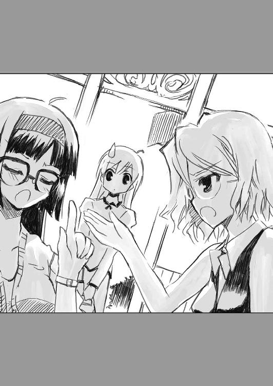
「ああ、はい。この間、会ったくらいですけど」
そう言えばその話をしてなかったなあと私はちょっと自分でも意外に感じました。
「ちょっとびっくりしました」
でもお嬢様の方はもっと意外に感じていたようです。今日は何度か私のせいで驚いてたみたいですけど、ハッキリと言われたのは初めてなので、よほどのことだったに違いありません。
「そんなに変ですか？」
「いえ、変ってわけじゃないんですけど、兄が咲良さんみたいに可愛い女の子と知り合いっていうのはかなり意外でした」
「......そうなんですかね？」
お嬢様みたいな綺麗な人に可愛いなんて言われる人間なんでしょうか？ と私は思ってたんですが、お嬢様は全く別の意味でとったようです。
「そうでなくても兄は女の子と仲良くするような人間じゃないと思ってたんですけど」
「そうですか？ お兄さんはけっこうモテそうな感じですけど」
「あ、いや、兄は彼女がいるんですよ。というかもう婚約者みたいな相手が。それでその娘に悪いからってことで他の女の子にはあまり近寄らないようにしてるイメージだったので」
「婚約者ですか」
どうやら八雲家は兄妹揃って、将来の相手がもう決まってるということみたいです。
「しかもけっこう小さい頃から。兄が小学四年生の頃からですから、もうかれこれ七年くらいですかね」
「そしてその彼女に一途ってことなんですね？」
「ええ、かなり......と思ってたんですけど、もしかしてそうでもないんでしょうか」
「どうなんでしょうねえ。私はかなり相手にされてない感じでしたし、やっぱり彼女一筋なんじゃないですか？」
「まあ、ですよね。器用に色々な女の子を相手にできるような人ではないはずですから」
「それにしても婚約者ですか......やっぱり八雲さんにお似合いの素敵な人なんですよね」
私はそう言いながら、一体、その八雲さんの彼女という人はどんな人なのかなあと考えてしまいました。
「素敵な人ではありますけど、きっと咲良さんが今想像したようなタイプじゃないですよ？」
「そうなんですか」
想像する前に否定されてしまったわけですが、要するにお嬢様みたいなタイプではないという意味なのかなあと私はなんとなく思いました。
「むしろ逆って考えた方がいいかもしれません」
「逆......というと、ひょっとして男の人とかそういうオチですか？」
私は思いきって予想をひっくり返してみました。でもさすがに思いきり過ぎたようです。
「男の人とは婚約者同然にはならないと思いますけど......でもまあ、そういう可能性はありますよね。あ、もちろん、その人のことじゃないですけど、なんかすごく仲のいい男の人がいるみたいなので、あっちが本命かなあって」
「それはもしかして、健一さんのことですか？」
私はそのおよそありえない話をどこかで聞いた気もするなあなんて思ったりもしていました。
というか、『ああんっ！ メガネ様☆』ですよね。八雲さんがメガネ様で、健一さんがメガネ様の本命。とすると八雲さんの婚約者というのは背が低くて爆乳......つまり九条さんみたいな人ってことでしょうか？
「あれ？ 健一さんもご存じなんですか？」
でもお嬢様の興味は健一さんの方でした。そりゃまあ、お嬢様は『ああんっ！ メガネ様☆』を読んだりはしてないでしょうし当然です。
「はい。というか健一さんもここでバイトをしてるんですよ。私はバイトでここにケーキを届けに来てるので、時々会うんです」
私はそう言ってから同意を求めるために早苗さんの方を見ました。
「そうなんだけど......とりあえず席につくってのはどうかしらね」
でも早苗さんは立ち話してる私たちをずっと変だと思ってたみたいです。
「あ、そうですね。すみません、狭霧さんも。私、ちょっとそういうところがあって。せっかくコーヒーを飲みに来たのに、そのことも忘れて話してるなんておかしいですよね」
なので私は適当な席を探すとそっちに歩き出しました。
「いえいえ。私、咲良さんと話してると楽しいですし。忘れてたのは私も同罪ですよ」
お嬢様はそんな私について来ながら、そんなハプニングすらも歓迎してる様子でした。
「せっかくだからブレンド以外のものにする？」
そして席についた私たちに早苗さんはそんなことを聞いてきました。
ブレンドはバイトでここに来ると飲ませてくれるものだから、それでなくてもいいだろうと早苗さんは考えたみたいです。
「いえ。私、ブレンド好きですから」
でもそれが私の正直な気持ちでした。
「そう？ じゃあ奢っちゃおうかな」
「わあ、美味しいなあ、私」
そして正直者は得するみたいです。
「狭霧さんはどうします？」
「あ、私もブレンドで。咲良さんがお気に入りというなら、私も飲んでみたいです」
「じゃあ、いきなり変なところ見せちゃったし、狭霧さんも奢りってことにするわね」
早苗さんはそう言うと軽やかにカウンターの方に戻って行きました。そして入れ替わりに薫沢さんがやってきました。
「私もご一緒していいですか？」
薫沢さんは八雲さんの妹という狭霧さんに興味があるみたいでした。
「あ、はい。えっと、こちらは早苗さんの知り合いで編集者の薫沢歌織さんです」
なので私はお嬢様に薫沢さんのことを紹介することにしました。
「八雲狭霧です。薫沢さんが編集者ってことは、古西さんは作家......ということですか？」
「ええ。それもすごい売れっ子なんですよ。なのにいきなり副業で喫茶店とか始める変な人で」
そして薫沢さんがそう言ったところで早苗さんがコーヒーを淹れて戻ってきました。ブレンドは注ぐだけだから早いのです。
「変な人はあなたの方でしょう？」
「え───────!?」
「いや、そんなに驚くところじゃないし」
「ですよねー」
薫沢さんは早苗さんの言葉にそう答えつつ、なんだか落ち込んでる様子でした。
「でも売れっ子作家なのに、別のことを始めるなんてちょっと変わってますよね」
そしてお嬢様はどっちかというと薫沢さん寄りの意見の持ち主みたいでした。
「ですよねー」
それで薫沢さんは今度は嬉しそうにさっきと同じことを言いました。
「いいじゃない。その方が執筆がはかどるんだから......」
「それもやっぱり変ですよね。喫茶店で働き始めてからの方が執筆ペースが上がるなんて」
「......じゃあ執筆しない方がいいわけ？」
「いえいえ。そんなことないですよ？ ただ私はそういう変わった先生が好きってことです」
「......とってつけたようなことを」
早苗さんは呆れながらも私とお嬢様の前にコーヒーを置いてくれました。
「いただきます」
それでお嬢様はさっそくコーヒーを飲むことにしたみたいです。けっこう早苗さんのコーヒーに興味津々だったみたいです。
「............」
一口飲んだところで、お嬢様はなんだか不思議そうな顔をしました。
「どう？」
でも早苗さんは嬉しそうにその意味を尋ねました。別に変な意味ではないという確信を持っているみたいです。
「美味しいです。これ、なんなんですか？」
そしてお嬢様の言葉はそれが決して過信なんかではないということを示していました。
「うちの普通のコーヒーよ」
「ブレンドですから、それはわかるんですけど......でも未知の味がします。やっぱり何か秘密があるんでしょうか？」
「実は私もよくわかってないのよ。昔から私が淹れると、そういう味になるの」
「はあ」
お嬢様は驚きと感心の入り交じった顔でコーヒーを見つめると、またもう一口飲むことにしたみたいでした。
「......不思議ですね」
でも改めて飲んでも、お嬢様にも早苗さんのコーヒーの謎は解けなかったみたいです。
「不思議なの。でも、なんかいいでしょ？」
「はい。素敵です」
そしてお嬢様はそんなコーヒーも、それを嬉しそうに語る早苗さんのことも気に入ったみたいでした。
「気に入ったんでしたらお替わりもどうぞ。ブレンドなら好きなだけ飲んで行ってくれていいのよ？ どうせ淹れちゃった分は余ったら捨てるだけだから」
「それはかなり勿体ないですね」
「まあ、美味しいコーヒーをすっと飲んでもらおうと思うと必要なことなの。じゃあ、私はまた仕事に戻るわね」
早苗さんはそう言いながらまたカウンターの方に戻って行きました。
「本当、いいお店ですね」
そしてお嬢様はそんな感想を口にしました。連れてきた私としても嬉しい言葉です。
「ええ、いいお店なんです」
なので私はそう言って笑いました。それからブレンドを一口飲みました。お代わり自由と言われてもなんだか勿体ないので少しずつ飲んでしまう自分にちょっと疑問を持ちながら。
「そう言えば、薫沢さん、さっき話してたのは......何か新作の話ですか？」
そして私はちょっと薫沢さんの方にも話題を振りました。『ああんっ！ メガネ様☆』の話にしては何かおかしいなあと感じていたからです。
「そうなんですよ。アニメ化合わせで出すにしてもあんまり出し過ぎるのもまずいので、せっかくだから別の作品を書いてみるのもいいかなって」
「で、メガネなんですか？」
「ええ。やっぱり先生にはメガネを書かせるのがいいと思ってて。あ、今度は弟モノなんです。年下でメガネですよ。新境地ですよ」
「新境地というにはいつも通りな気もしますけど......そうでもないんでしょうか？」
「ええ、全然違いますよ？ それに今回は話もちょっとファンタジックな感じで。死んじゃった弟が生き返ってひょっこり戻ってくるという話なんですよ」
「それは不思議な話ですね」
とりあえず薫沢さんの話だけでは、私にはよくわかりませんでした。でも薫沢さんが今までになく盛り上がってるみたいなので、きっと面白くなるんだろうと思うことにしました。
「薫沢さんは本当にメガネがお好きなんですね」
そこでお嬢様が会話に参加してきました。
「ええ。かなり。あんまり好きなモノで伊達メガネをかけてる程なんです。狭霧さんは視力はいい方ですか？」
「そうですね。父と兄はかなり悪いみたいですけど、私はちっとも悪くならないですね」
「だったら私みたいに伊達メガネにするといいですよ？」
「......それなら、今日、一緒に買ってくればよかったですね」
お嬢様はそう言いながら私の方を見ました。薫沢さんに合わせてるというよりは、けっこう本気で思ってるみたいです。
「ああ、そうだ。薫沢さんをメガネの達人と見込んでちょっと聞きたいことがあるんですけど」
私はそう言いながら鞄からメガネケースを取り出しました。
「なんですか？」
「以前、ちょっと話したと思うんですけど、私、伊達メガネをかけるように言われてたので、今日、ちょっと買ってきたんですよ」
そして私はお嬢様が選んでくれたメガネをかけて見せました。
「これ、似合いますかね？ どうですか？」
「いいメガネです」
薫沢さんは少しも迷うことなくそう答えてくれました。
「そうですか。これ、狭霧さんが選んでくれたんですけど、いいですよね？」
「ええ、とてもいいです。ダサメガネじゃないですけど、咲良ちゃんがかけるならこの線もありってうなずけます」
「ですよねー」
私はうれしさのあまり、気づくと薫沢さんと同じようなことを言ってました。
「ということは今日からは咲良ちゃんもメガネっ娘ですか？」
「そうなりますかね」
私はそう言いながらお嬢様の方を見ました。
「やっぱり私も買ってくればよかったですね」
お嬢様は笑って見返してきました。
「......いいのよ、薫沢なんかに合わせなくても」
でもまたやってきた早苗さんは、そんな状況にちょっと困った様子でした。
「薫沢なんかとはなんですか。私にメガネを語らせたらなかなかのものですよ？」
「だからそういうマニアな人ばかりじゃないでしょって言ってるのよ。わかる人にはわかるっていうのも大事だけど、それだけじゃないでしょ？」
「それはそうですけど......」
「しかし困ったわね。咲良ちゃんは心当たりとかない？」
そんな感じで早苗さんと薫沢さんの会話が続くと思っていたら、急にこっちに向けられました。
「ん？ 早苗さん、どうかしたんですか？」
「まあ、そんなに致命的ってことはないんだけど、ちょっと人手が欲しいかなあって思ってて。冴子ちゃんと健一君だけだと時々、埋まらない日があるのよ。まあ、お客さんもろくに来ないからいいっちゃいいんだけど」
早苗さんはそう言いながら、やっぱり困ってる様子ではありました。
「あの、それは中学生でもいいんでしょうか？」
その質問をぶつけたのはお嬢様でした。
「うん？ 別に中学生だからダメってことはないけど......けっこう私、人を選んじゃうところがあるから」
「じゃあ......ダメですかね」
お嬢様はそれで露骨にがっかりした様子を見せました。
「あ、狭霧さんがやってくれるって意味？ それならこちらから頼みたいくらいかな」
「本当ですか？ 私みたいのがバイトしたいなんて変とか......思ったりは？」
「それはもちろん思ったりするけど、それがいいんじゃない。私、変な娘とか訳ありの娘の方が好きなの」
早苗さんは誇らしげにそんなことを言い出しました。
「......じゃあ、いいんですか？」
「もちろん。でも受験生だったりする？」
「それはするんですけど......ランク的に絶対入れるってレベルのところなので心配ないです。部活ももう引退してますし、放課後は空いてます」
「そっか。じゃあ、頼んじゃおうかな」
そして早苗さんはにこやかにそう告げました。
「はい。頼まれちゃいます」
お嬢様がそれに釣られたように笑顔になるのが見えました。私はその時、初めてお嬢様が自分より年下なんだなあと思ったりしました。
○
「今日は色々ありがとうございました」
なので私は帰り際、そんなことを言われてけっこう戸惑ってしまったのです。
やっぱりお嬢様はお嬢様で立派な心の持ち主みたいです。
「いえいえ。こちらこそ、いいメガネが買えて助かりましたから」
私はそう言いながら、少しずれてきたメガネをかけ直しました。案外慣れるまで面倒かもしれないという感じもします。
「だといいんですけど。でも薫沢さんも褒めてましたし、これで良かったんですよね」
「ええ。あの薫沢さんが認めたメガネですから自信を持っていいと思います」
「選んだのは私ですけどかけてるのは咲良さんですから、自信を持つのは咲良さんですよ？」
「......そ、そうですね」
私はお嬢様の指摘に、また考えなしだったかなと反省する羽目になりました。
「咲良さんって面白い人ですよね」
でもそんな私のことをお嬢様は気に入ってくれてるようです。
「だといいんですけど。私、どうも波長が合わない人とは上手く話せないところがあって」
「そんなの誰でもそうですよ。私だってそうです。波長が合わない人ばかりだと問題ですけど、そういう人もいるってことなら、気にしてもしょうがないと思いますよ」
「それはそうなんですけどね」
でも九条さんのことを思い出すに、怒らせてしまったわけなので、気にしないとか言ってる場合ではない気が。
「咲良さんの場合は人に好かれるのが仕事になるわけですから、それじゃダメなんですかね？」
「......かもしれません」
言われてみて、なるほどその通りと私は思いました。好かれるのが仕事とはなかなか的確な表現です。さすがお嬢様。
「とにかくも、今日は本当ありがとうございました。私も咲良さんのおかげで面白い人になれそうです」
「いえいえ。私は狭霧さんのファンですから、楽しんでもらえるならなんでもしますよ」
それは私の嘘偽りない気持ちでした。お嬢様の力になれたというならこれ以上嬉しいことはないという感じです。
「そうなんですか？ じゃあ私にも咲良さんを応援させてください」
でもお嬢様はそんなことまで言い出しました。
「い、いい、いいですよ、そんな」
「ダメですか？」
「ダメってことはないですけど......ちょっと私には勿体ないような気が」
「でも私、今日一日で咲良さんのファンになってしまったんですよ。アイドルとしての咲良さんのことはまだよくわかってないですけど──」
お嬢様はそう言ってちょっと考えるような顔をしました。
「そう、個人的にファンになってしまったというヤツです」
私はそれを言われてしまうともう抵抗することはできないなあと感じました。
私がお嬢様に対して勝手にそうしたように、お嬢様が私にそうするというなら、それはお嬢様の自由だろうと思えたのです。
「それじゃあ、またメガネを新調する時は付き合ってくれますか？ また薫沢さんが納得するような素敵なメガネを私のために選んでください」
だから私はそんな図々しいとも思えるお願いをお嬢様に頼みました。
でもお嬢様は少しも嫌な顔をせず、むしろすごく嬉しそうに笑ってくれました。
「そういうことでしたら、喜んで」
だから私は思ったんです。
私はお嬢様に本当に気に入ってもらえたんだなって。その理由が相変わらずわからなかったのが、ちょっと不安でしたけど、まあそれはおいおい考えればいいかなあと思うことにしました。
「とすると、私は咲良さんの専属メガネコーディネーターってことですよね？」
「そうなりますかね」
だから考えなしだって周りに思われてる訳なんですが、きっとお嬢様はそういう私だから気に入ってるんだろうなあとは感じました。
「じゃあ、また近いうちに──早苗さんのお店で会えますかね？」
それが嬉しくて、私も笑っていました。
「明日にでも会っちゃうかもしれませんね」
そしてお嬢様もやっぱり笑ったままでした。
「そうですね」
だから私は別れるのが惜しくて、また信号の前で話すことになりました。
それは本当に何も考えず、話したいことを話すだけの時間でした。でもそれがずっとずっと続くのが私はとても楽しく、嬉しく感じたのです。
おかげで九条さんとのことをどうしようかすっかり忘れてもいたんですが......その辺りもお嬢様に相談すべきだったんでしょうか？
おしまい
そのさん 私と圭一郎と恐怖の館
ご注意
当アトラクションは、既存のオバケ屋敷を遥かに超えた恐怖を体験できるものでありますが、それ故に以下の条件に当てはまる方には参加をご遠慮いただいております。
・オバケなどが苦手な方
・暗いところが苦手な方
・心臓が弱い方
また気分が悪くなっても途中での退場はできません。そうなることが予想される方もご遠慮いただきますようお願いします。
「............」
実に大層な注意書きだった。というか正直、これは無理だろうと私は思った。
私はオバケ屋敷というのが大嫌いだった。暗いのもオバケも別に怖くない。
でもオバケ屋敷が苦手なのだ。それが遠慮いただいてるという条件に当てはまってるかというと微妙なところだが、「既存のオバケ屋敷を遥かに超えた恐怖を体験できる」というこのアトラクションに参加すべき人間でないのは間違いなさそうだった。
「随分と大げさなことを書くものですね。まあ、こういった物は宣伝文句のようなものですから少しくらい派手な方がいいかもしれませんけど」
そんなことを思ってる私の後ろで、同じ物を読んでほとんど反対の感想を抱いた人間がいたらしい。それが私の連れだった。
いや、そいつの連れが私という方が正確だ。私は自分で望んでこんな所に来たりはしないからだ。
その連れというのは、本当に連れとしか言い様がない人間で、私、絹川蛍子の未来の旦那だった。
名前は荊木圭一郎。高校を卒業して始めた会社をほんの数年で育て上げた業界の風雲児とか言われている男である。
なんでこんな男と結婚することになったのかはかなりややこしい話だ。
私の方は弟のことを好きになり、それが親にバレて引き離された。そんな時、この男が親の仕事の関係で現れて見合いをすることになったのだ。
最初は私も圭一郎と結婚しようなんて気はなかった。引き離されはしたけれど、健一のことを忘れたわけじゃなかったからだ。
でも圭一郎は、自分を愛することのない妻を探しているという話だった。しかも他所の男と子供を作って来いという条件までつけて。詳しい事情は知らないが、冗談ではなさそうなので話を受けることにした。
そして私はその条件をクリアして、今は結婚を待つ身ということになっている。
だから私もこいつも互いのことを愛してなどいない。お互いに事情があって、夫婦を演じることにした。それだけの関係だ。
「注意書きが無用に派手でどうするんだ？」
しかし事情はどうあれ私たちは今日はデートでオバケ屋敷に来たことになっている。だから私は圭一郎の言葉に疑問をぶつける。
「いいんじゃないですか？ すごく怖いらしいよって話題になるじゃないですか。それに本当に怖い場合は少しくらい大げさに言っておかないと平気だって思って倒れてしまったりして問題になるかもしれませんしね」
「......そ、そうだな」
圭一郎の言うことはもっともだが、私は改めて心配になった。
私は倒れてしまったりしないだろうか？
「蛍子さん、もしかして怖いんですか？」
だがそんな心配も圭一郎にそう言われると白状しようという気持ちにはなれない。なんだかそう尋ねている圭一郎が笑ってるように見える。私の様子がそんなにおかしいのかと怒りがこみ上げてくる。
「私は別にオバケなんか怖くない」
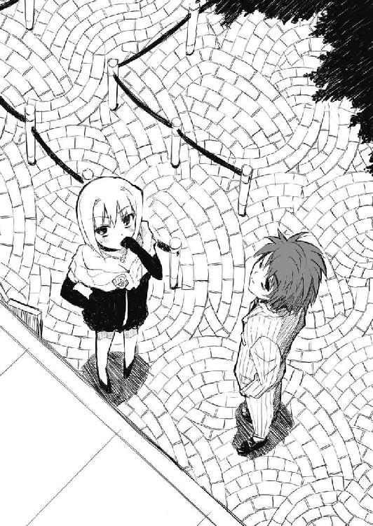
「ならいいんですけど、途中退場は出来ないそうですから止めるなら今のうちですよ？」
「だから怖くないと言っている」
「では、行きましょうか？ 別に他にもアトラクションはあるんですから、お気に召さないなら飛ばしても良かったんですけど......」
圭一郎はそんなことを言いながら、なんだか妙に嬉しそうだった。
こいつは私とは逆にオバケ屋敷が大好きなのかもしれない。まあ、そうでもなければわざわざ人をこんなところに誘ったりはしなかっただろうが──。
○
オバケ屋敷に行こうと誘ったのは圭一郎の方だった。
「僕たちは見合いしたと思ったらすぐに子供を作ってしまった程の仲のはずですから、もう少し一緒に出かけたりした方がいいと思うんですよね」
というのが、その理由だった。
実際には別に私と圭一郎はそんな仲ではない。しかし圭一郎の言い分はもっともだった。「仲のはず」なのだから私たちはもっと頻繁にデートをして、時には外泊とかもすべきなのだ。そうでなければ両親がいぶかしむ。それは私には望ましくない展開だった。
「......でもオバケ屋敷っていうのはどうなんだ？」
だがその行く先がオバケ屋敷というのがどうにもひっかかった。正直、気が乗らない。
「怖いんですか？」
でも圭一郎にそう言われると、私は正直にそうだとは言えなかった。
「そんなわけあるか。ただその......子供っぽくないか、それって？」
なのでそう反論してみた。
「大人でも怖いと評判のところなんですよ」
しかし圭一郎は待ってましたとばかりに、そんな言葉を返す。私がそう言い出すとわかってたみたいだ。いつものことだが圭一郎の段取りの良さには嫌味さえ感じる。
「そ、そうか......」
「もしかして胎教に悪いですかね？」
「......別にそんなことはないんじゃないか？」
オバケ屋敷が胎教に悪いなんて話は残念ながら聞いたことはなかった。まあ、あまりショッキングな体験をするのはよくなさそうだが、怖くないならショッキングなはずもない。つまり胎教に悪くない。
「じゃあ今度の水曜日に行きましょう」
そして私が断らなかったから、結局、行くことになった。
父さんはもちろん母さんもそれを止めたりはしなかった。どころか母さんはニコニコとして私を送り出してくれた。
どうやら圭一郎はうちの母さんといつのまにか仲良くなっていたらしい。そして母さんが喜ぶことだと私は断りづらい。それを圭一郎は知っているとすれば本当に嫌味なヤツだと思うしかない。
○
「しかしそのなんだ......平日の昼間からこんな所に来てていいのか、お前は？」
私はそう言いながら、こんな所というのがどんな所か意識しないように努めていた。
正直、オバケが出るとか出ないとか以前に怖かった。
薄暗がりの中に何かが潜んでるようで、それだけで体が震える。
その辺り、自分でも不思議だけど、これで本当に幽霊が出てきても別に怖くないという確信がある。
なのに出てくるかもしれないということには震えが止まらないのだ。
だからって圭一郎に手を繋いでもらうなんてことは私には無理だった。というかそっちの方が私が怖がってるとバレるのであり得ないという気もする。
「それは仕事をしなくていいのかという意味ですか、蛍子さん？」
「そ、そうに決まってる。大きな会社の社長なんだろ、仮にも」
「大きな会社の社長だから仕事をしなくていいんじゃないですかね、逆に」
「そういうものか？」
「最初は五人で始めた会社でしたからね。その時は僕が一人いなくなったら随分と戦力ダウンでしたけど、今は千人以上いますから、一人くらいいなくても平気なわけです」
「......そうか」
なんだか筋は通ってるが微妙におかしな話の気がした。だがどこがおかしいかまではわからない。なんだかんだで周りに警戒することに私は意識をかなり割いてるらしい。
「蛍子さんは歩く時にいちいちまず右足を上げてとか考えないですよね？ ただ歩くと思うだけでちゃんとそうなるように体が動く。そういうものですよね？」
そしてそのせいか圭一郎が始めた話がなんのことか私にはよくわからなかった。
「そりゃ、そうだ」
「ちゃんと組織された会社というのもそういうものなんですよ。僕がいちいち指示したり、見張ったりしてなくても、するべきことをしてくれるものなんです」
「だったらお前はもういらないんじゃないのか？」
私は聞いてるうちに浮かんだ疑問をそのまま圭一郎にぶつける。
「そうかもしれませんね」
そしてそんな内容にもかかわらず圭一郎はびっくりするほど爽やかにそんな返答をする。
「そうかもってお前......」
「まあ、大丈夫ですよ。乗っ取られたらまた別のことを始めますから。蛍子さんにお金の心配をさせるようなことはしません」
「......別にお金のためにお前と結婚することを選んだわけじゃない」
「まあ、それもわかってますけど......そうですね、言い方を変えましょう。乗っ取るなんてナンセンスなので絶対にそんなことにはなりません」
「ナンセンス？」
「うちの会社は僕の取った特許を基盤に動いてるんです。だから僕を追い出した場合、その特許料を払わなければいけないわけです。そしてその特許料は間違いなく僕が今貰ってる金額より多くなります。乗っ取られた僕が格安で使わせてあげる義理はないですからね。ということは僕には社長の椅子に座ってのんびりして貰ってる方が乗っ取るよりもずっとお得というわけですよ」
「......なるほど」
私は確かに余計な心配だったなと改めて思った。この嫌味な程段取りの良い男が、その程度のことを考えてないと思う方が間違いだったのだ。
「それがちゃんと組織された会社ということです。僕が頑張らなくても会社自体が僕が社長であるように支えてくれるのです。そしてそれは他の社員も同様で平の社員はスキルアップしてより大きな仕事ができるようになるように設計されているのです。僕の仕事はその設計図を引いて実際に組み立てることで、そこまでしてしまえば、時々おかしくなってないかチェックするだけで、後は会社の方が自分で良い方向に伸びてくれるわけです」
「便利なものだな」
「逆にそういう風に設計されてない会社というのは社員が優秀で全員が頑張っていても会社自体がそれを阻害するなんてことにもなるわけです。会社というのは一つの生き物なのです。人はその細胞ですね」
「......細胞ねえ」
「蛍子さん、他の細胞に比べ圧倒的な活力を持つにもかかわらず、組織化されていないせいで己を含む生命体に害する細胞というのをなんていうか知っていますか？」
「ん？」
なんだか周りくどい言い方でよくわからないが、確かに聞いたことがあるような気がした。
「ガン細胞って言うんですよ」
「ああ......」
なるほどと私はそれで感じた。そしてやっと圭一郎が何を言いたいのかわかったような気もする。
「僕は僕の役割を果たせばいいのです。自分の業績を上げることばかりを考えれば、僕は会社にとってはガンとなるのですから」
「......だから私とオバケ屋敷に来たってわけか。大層な人生哲学の割にはつまらないことをしてるように感じるな」
「ま、そんなわけなので、ちゃんとオバケ屋敷を楽しみましょう」
圭一郎はそう言うと小さく笑ったみたいだった。そしてなんだか暗闇に飲み込まれて消えたように感じた。
「......圭一郎？」
私は不安になって呼びかける。
「なんですか、蛍子さん？」
でも側にいたらしい。返事が聞こえた。
「いや、いるならいい」
「やはりこういうところでは無駄話はよしてどこからオバケが出てくるか期待するのがいいと思うんですが」
「......期待するものなのか？」
「まあ、その辺りのニュアンスは置いておいて無駄話は止めましょう。感想は出た後にまとめて聞かせてもらいますから」
「......わかった」
そう言われては私は圭一郎に無駄に話しかけるわけにはいかなかった。
圭一郎みたいな変なヤツであってもこの状況ではいてくれるだけマシと思っていたけど、圭一郎は積極的にそれを否定するつもりらしい。普段は余計なほど気が回るのに、こういう時はそうではないのはどうしてなんだろうと思ってしまう。
「............」
そして思うだけになると自然と足が速くなった。こんなところからすぐに出て行きたい。そんな気持ちが私をそうさせる。
「バァ───────！」
だがそれはオバケ屋敷の密度を高くする行為だった。
「ぎゃっ......」
不意に私の右から何かが姿を現した。私はびっくりした。でもびっくりしすぎて声をあげることも反応することもできない。
ただ固まった。動けなくなった。
わかってる。わかってるんだ。これはオバケなんかではない。オバケに扮した係員でしかない。
でもそれが私は怖かった。
仮面とかお面といったものが苦手なのだ。人間の顔に似て非なるもの。それが私を恐れさせる。
「............」
そしてそんな私に満足したかのようにオバケに扮した係員は去っていく。必要以上に近づいたり、無用に脅かし続けたりしないということに私は正直、ホッとした。
そこに少しだけ人間味を感じた。
「......ふむ」
なのに圭一郎は大した感慨もなかったらしく、小さくうなずいたような声をあげた。
「こういうのは好きじゃないのか？」
「いや、既存のオバケ屋敷を超えるという割には大したことないなと思いまして」
「......そうか」
だが私はそうであってくれてホッとしていたのだ。なのに圭一郎はやはり別の、そしてもう少し先のことを考えていたらしい。
「まあ、まだ序盤ですしね。怖いのはこれからですよね」
圭一郎はにこやかに笑う。
「確かにこれからだな」
そのせいで私は周りの闇がより濃くなるように感じた。
「......はぁはぁ」
そして圭一郎の予告通り、本当にこのオバケ屋敷の恐怖はまだまだ始まったばかりだった。私はそれから四つ程のイベントをクリアするだけでへとへとになってしまった。
きっと時間にすればほんの数分のことだろう。なのにもう何時間も迷い込んだような錯覚を私は感じていた。
そしてそんな私にとって圭一郎はまったく頼りにならないどころか逆に不安を煽る存在でしかなかった。
私がこんなに怖がってるのに、少しも手を差し伸べる気がない。むしろ私が楽しんでるとでも思って安心してるのかもしれない。
そりゃオバケ屋敷なんだから少しくらい怯えてくれるくらいじゃないとダメって気はするが、それにしたって限度があるだろう。
「......察しろ」
私はここ最近、あまり言ってなかった言葉を一人呟いていた。普段は不気味な程、物わかりがいい荊木圭一郎に対して。
「なんですか、蛍子さん？」
でも圭一郎にとってはただ話しかけられたくらいにしか思わなかったようだ。
「なんでもない」
「そうですか。じゃあ次行きますか」
圭一郎はそう言って私に先に行くようにと催促する。
だから私は今度は心の中でさっきと同じ言葉を呟く。
察しろ──と。
「......ふぅ」
そしてそれが今までは誰に向かって発してた言葉だったかを私は思い出した。
健一。私の弟。
鈍くて私の気持ちを全然理解してくれなかった健一。あいつに私は何度、そう言っただろう。
察しろ──と。
わかって欲しく、わかってくれないのが辛くて、でも素直になれなくて、何度、その言葉を繰り返しただろう。
察しろ、察しろ、察しろ、と。
「......でも、あいつはわかって、受け入れてくれたんだよな」
健一は何度も言ったけど察してはくれなかった。でも、受け入れてはくれた。
私から隠しきれなくなって溢れた想いを知った時も、その後、私が勝手に結婚を決めてしまった時も。
健一は察してはくれなかった。でも受け止めてくれた。
「って、ことはやっぱり私が素直じゃないのが悪いのか？」
私がもっと素直だったらここまでこじれることはなかったのかもしれない。そう思うと圭一郎にも「察しろ」とか言ってる場合ではないかもしれない。
わかって欲しいなら、ちゃんと言えばよかったのだ。そう私が思った時、圭一郎の気配が消えていた。
「......圭一郎？」
呼びかけるが今度は返事はなかった。
「はぐれた、のか？」
でも別れ道なんてなかったはずだ。それとも私が気づかなかっただけで秘密の抜け道でもあったのだろうか？ それを圭一郎はめざとく見つけてそっちに進んだとか？
「だとしても、なんで一人で行くんだ？」
私はそんな疑問を口にして、すぐにその答えがわかった気がした。
私が健一のことを考えていたからだ。そのことを圭一郎が察したとはさすがに思えない。でも私が別のことを考えていたから、圭一郎が離れるのに気づかなかったのは間違いなさそうだった。
「......自業自得ってヤツか」
だとすればそんなところだと私は一人呟いて、自分が置かれた状況を改めて理解した。
私はこのオバケ屋敷で一人置き去りにされたも同然だった。
しかも圭一郎が別のルートへ行ったとすればそれはそっちが正解で、私はもしかして間違ったルートに迷い込んだってことか？──そんな不安が浮かぶ。
迷子。その言葉を思い出す。今の私は一人で、どっちに向かえばいいのかわからなかった。
「......とは言っても迷路ってわけじゃないんだ。進んで行けば出られるはずだろ」
私は不安を振り払おうとそんなことを呟いてみる。
暗くて先の道はわかりづらい。でも迷う要素なんてどこにもない。ないはずだ。そう思おうと私はする。
「もうけっこう入ってから経つしな。そろそろ出口だろ」
そう呟いて歩き出す。でも足が震えた。それを誤魔化すために私は足に力を込める。
早歩きになる。むしろ半分走ってるくらいの速さにする。
「うぼぁ───────！」
でもそれはオバケたちに私を見つけてくれと言わんばかりの行為だったらしい。
さっそく私の行方を阻むように何かが陰から姿を現す。
それも一つ、二つではない。
「うらぁ───！」「ぼあー！」「バァー！」「うぎゃー！」
三つ、四つ......と私は数えてもうそれが無理だと感じた。
「きゃ──────────────！」
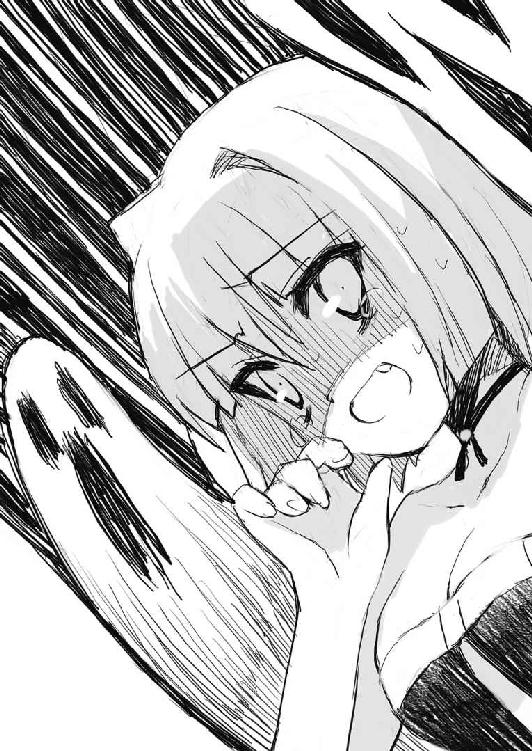
そして私は悲鳴を上げていた。知らずに走り出していた。どこかへ。
とにかく、このオバケの扮装をした係員の近くにはいられなかった。
でもそんな私の後に足音が続く。私の足音じゃない。
誰かが追いかけてくる。私よりずっと速いペースで。
まだ距離はある。でもこのままじゃ追いつかれる。それを理解して私はさらに走るペースをあげた。
わかってる。わかってる。これはアトラクションで本当の幽霊なんかじゃない。私を怖がらせるためにしてるだけで、私をどうにかしようとか考えてるわけじゃない。
「ハァハァ......」
だから追いかけるにも限度がある。そのはずなのに足音はずっと私に続いていた。
なんで？ 私は間違いなく混乱していた。ここまで私を追い回すなんておかしいということだけはわかっていた。
ただ怖がらせるためだけに、ここまで私を追いかけてくるなんてありえない。
「そうか......」
そして私は自分が逃げてるからだと不意に気づいた。この追っ手は私を捕まえてどうこうしようとしてるわけじゃない。
私が怯えて逃げてるから、それを追いかけて怖がらせてるだけだ。
所詮は係員がやってることじゃないか──と私は理解した。声をあげて追いかける以上のことは絶対しないはずだ。
息を切らしてまで逃げる程のことじゃない。ことじゃないんだ。
「......ふぅ」
そこまで考えがまとまると私は立ち止まって一息つくことにした。
これで私はこの追っ手から解放される。そう思った。
でも違った。
「やっと追いついた」
小さな声と共にその追っ手は私に冷たい手で触れて来た。
「ひっ！」
ゾッとするほど冷たい手だった。
その手に私は一瞬にして体温を奪われた。それを全身の震えが教えてくれる。
「............はふぅ」
そして私は──。
○
「......ん？」
消毒液の臭い。それを感じて私は目を覚ました。
堅いベッドに私は寝ていた。見知らぬベッド。周りは白いカーテンで区切られていた。
保健室。私はその光景にそんな言葉を思い浮かべた。でも知ってる保健室とは違うなと感じる。
それから少し冷静になれたのか、私はここがどこなのか大体察しがついた。
医務室だ。あのオバケ屋敷で倒れた人間を休ませるために作られた場所だ。
私は結局、あの冷たい手のせいで意識を失って倒れてしまったのだ。
「......恥だ」
私は自分が倒れてから、ここに来るまで何があったのかを想像してしまった。
いい歳してオバケ屋敷で卒倒した女なんてそうそういないはずだ。
しばらくはここの係員の間で話のネタにされるかもしれない......なんて思うともう二度とここには来たくないという思いがすごい勢いで膨らむ。
それに、あの時はいなかったが圭一郎だってどこかのタイミングで合流したはずで、私が倒れたことは知ったわけで......とそこまで考えた私の耳に聞き覚えのない女性の声が聞こえてきた。
「で、どうなの、圭一郎？」
声に聞き覚えがないのは別に不思議なことではなかった。でもその声が語りかけている相手は圭一郎らしい。しかも「圭一郎」と呼びかけている。
「まあ、エリさんが仕事としてやりたいということであれば僕の方から反対するようなことじゃありませんよ」
そして圭一郎のそんな返事から私は二人がそれなりの知り合いであることを理解した。
それも昨日、今日ということではなさそうだ。私はそれがなんだかかなり意外な気がしてしまった。
私は圭一郎に女の知り合いがいるとはなぜか思っていなかったらしい。
「じゃあ後は彼女の意志で決めちゃっていいってことね？」
「確認するまでもなく、そうだと思ってましたよね、エリさんは？」
「まあ、ね」
それで二人の話は一段落したらしい。
それで私はどういう状況なのだろうかと改めて考えてしまった。
私が倒れてる間に一体、何があって圭一郎はエリさんとやらと話すことになったのか。
「それに彼女って誰だ？」
私は知らずと小さく声に出していたらしい。それだけで圭一郎は私がもう起きてると気づいたらしい。
「蛍子さん？」
「......あ、ああ」
「ここ、開けてもいいですか？」
そう言いながら圭一郎は側に寄ってゆっくりとカーテンを開けて私の顔を見た。気のせいかもしれないけれど、その表情は優しげで、でも少し悲しそうでもあった。
「ご機嫌はいかがですか、蛍子さん？」
「......恥ずかしくて死にたい」
「え？」
「だ、大丈夫だと思う」
「そうですか。それなら安心しました」
そう言った圭一郎は珍しく、本当にホッとしたという表情を浮かべていた。いつものどこか嘘くさい雰囲気はない。
「圭一郎、ちょっとお邪魔していいかしら」
そんな圭一郎の後ろから別の人間が顔を覗かせた。それがエリさんとやらであろうことはすぐにわかった。女性であることもわかっていたが、それでも私は彼女の顔を見て驚いてしまった。
絵に描いたような美女。絵を描くのを日常にしている私がそんな表現を使うのには抵抗があるが、それでもそうとしか言い様がない、ちょっと目の前にいること自体に現実感がない程に整った顔立ちの女性だった。
波立ち輝く金髪には染めて作られた不自然さはないのに、彼女にはどこか日本人的な美しさも感じられた。ハーフか何かだろうか。とにかくその絶妙なバランスはちょっとした奇跡だと私には思えた。
「......お邪魔だったかしら？」
そんな私の反応にさすがにその女性は戸惑ったらしい。いきなりじっと見つめるなんて、確かに変なことをしたと私も思う。
「いえ......そんなことはないですけど」
「そう。ならいいんだけど」
そして特に理由も説明しないのに、彼女はそれで納得してしまったらしい。
「絹川蛍子さん、私は錦織エリです。今日はちょっとお願いがあってここに来ました」
「......お願い？」
私はなんのことだろうと思わずにはいられなかった。そのお願いというのに全く心当たりがなかったし、そもそもなんでここに来るのだろうと思えてしまう。
「まだちょっと先のことになるとは思うけど、いつかあなたの絵を売らせていただけないかしら？」
「私の絵を？」
そして錦織エリなる人物は私の理解を待たずに自分の用件を語り始めた。
「私がどういう仕事をしてる人間かは圭一郎に聞いてくれればいいと思うわ。なので返事はまた後日、改めてあなたに会いに行った時にということでいいかしら？」
「......はぁ」
「じゃあ、あんまりお邪魔するのも悪いし、私はこの辺で。いい返事、期待してるわ」
そして錦織エリは私の返事を待たず、さっさと帰り支度を始める。
「それじゃ圭一郎も元気でね」
「エリさんもお元気で」
それから一応、出口のところで私に一度頭を下げると錦織エリは本当に帰って行ってしまった。
「......誰なんだ、あの女は？」
私はそれを確認すると圭一郎にそう尋ねていた。自分でもそれは少し不機嫌な口調だとわかった。
「錦織エリさんですが」
そのせいか少し圭一郎の言葉も腰が引けた感じに聞こえた。
「名前は聞いた」
「そうですねえ......色々な才能をプロデュースすることを仕事にしてる人ってところですかね。まあ、腕は確かですよ。若いけど立派なものです。既に世界的に有名なアーティストを何人も世に出してますから」
「類は友を呼ぶというヤツか？」
「はい？」
「お前もいい加減デタラメだが、あの女もかなりのものだなって話だ」
「そうですね。それは残念ながら事実かもしれません」
「......少しは否定しようとか思え」
「小さい頃はそんな努力もしてたんですが、僕には無理だと諦めましたよ。ははは」
「まあ、そうかもな......」
本当に冗談には聞こえないのが圭一郎のデタラメなところだなと私は改めて思う。だから私はその辺の追及は諦めることにする。
「で、これはお前の差し金なのか？」
「私の差し金？」
「芸術家の妻の次は、その販売ルートを確保するために有名なプロモーターを捕まえて来たのかと聞いてるんだ」
「蛍子さんは僕のことを誤解しています」
「誤解とは思えないけどな」
「僕は別にそこまであざといことを考えたりはしませんよ」
「だったら、どうしてこの場所にあの女が来て、こんな話になってる？」
「それはエリさんが強引であざといからだと思いますが。僕がエリさんを蛍子さんに売り込もうとしてたように見えましたか？」
「......それは確かにそうだな」
どっちかと言わなくても錦織エリが勝手にやってたという感じだった。
「エリさんは昔から蛍子さんの才能に目を付けていたんです」
「私には受賞歴なんてないぞ。どこでどうやって目を付けるっていうんだ？」
「そこがエリさんの恐ろしいところで」
「......とりあえず嘘ではないということはなんとなくわかった」
とにかく錦織エリは圭一郎からしても理解を超えた存在ということらしい。
「蛍子さんはエリさんに絵を売って欲しいですか？」
そのせいなのかなんなのか圭一郎はイマイチ渋い表情でそんなことを聞いてきた。
「何か問題でもあるのか？」
「いえ。エリさんに任せれば蛍子さんの絵は飛ぶように売れるようになると思いますよ。五年もすれば一枚数億円とかの値を付けてくれるでしょう、きっと」
「......数億か」
およそ実感の湧かない数字だった。
「それも蛍子さんの絵にはそれだけの価値があると思いますし、正当な評価をしてもらえる場を作ってくれるというだけですけど」
「そうか？」
どうやら圭一郎も私の絵はそれなりに評価していたらしい。それは失礼だがちょっと意外な気がした。
「だから仕事の相手としてはベストな人だと思いますよ」
「だったらなんであまり気が乗らないという顔をしてるんだ？」
「まあ、理由は二つほどあるんですが、どっちも個人的なことです」
「個人的なことねえ」
圭一郎がそういうことを言うのもやはり意外な気がした。
「一つ目は僕が蛍子さんの絵を好きということです」
「......それがなんで問題なんだ？」
「エリさんに任せたらきっとなんだかんだと理由をつけて一枚残らず売ってしまうと思うんですよね」
「こっそり隠しておけばいいことだろう？」
私は何をそんなに心配してるのだろうと感じる。でも圭一郎はその辺に関してはむしろ確信があるらしい。
「それは無理でしょう」
そんなことを自信ありげに言う。
「無理か」
私はそれで一体、圭一郎と錦織エリはどういう関係なんだろうと考えてしまった。とりあえずかなり昔からの知り合いらしいが、およそ甘さとは無縁の関係らしい。
まあ、考えてみたら圭一郎はホモだったので錦織エリがあれだけの美女でも豚に真珠ということだったわけだが。
「無理ですね。絶対に無理です」
「......じゃあ絵を描くのを止める時は、最後の一枚はお前にやる」
なので私はそういうことにしておいた。別に錦織エリにどうしても絵を売って欲しいとは思っていなかったが、これだけ圭一郎が認めてる人物だと思うと興味が湧いた。
「そういうことなら、問題は一つ解決したことにしましょう」
「じゃあ、もう一つは？」
「これは個人的な理由ですが......」
そこで圭一郎が言いよどむのがわかった。よほど言いづらいことらしい。
「なんだ？」
「昔、エリさんは僕に惚れてましてね」
「は？」
「それで今でもちょっと距離をどうとっていいのかわからないんですよ」
「......らしくもないことを」
「いや、大して親しくもない人から好意を寄せられることはけっこうあったんですが、そういう人は僕と話すとすぐになんか違うなって諦めるわけですよ」
「それはそうだろうな」
実際、こんなデタラメな男だと知れば付き合おうという気も失せるだろうということは容易に想像がついた。
「でもエリさんとは高校時代ずっと一緒でしたから。僕のことをよく知ってて、それでも好きでいてくれた人っていうのはエリさんくらいなんですよ」
「で、今もそうなのか？」
「はい？」
「今も錦織エリはお前に惚れてるのか？」
「昔の話だって言ったと思いますが」
「......そうだったな」
確かにそう言っていた。だがこの流れなら聞きたくもなるだろうことを圭一郎は理解できないらしい。
「で、お前はどうなんだ、圭一郎？」
「僕がエリさんを好きかってことですか？ もし好きだったら困らないと思うんですが、違いますかね？」
「......まあ、そうだな」
「実際、どうなんですかね？ 女性というのは好きだった人でも手が届かないとわかればすっぱり忘れられるものなんですか？」
「......どうだろうな」
錦織エリと自分を同列に語ること自体に意味があるとも思えなかった。それにその質問には個人的な理由もあって答えたくないようにも感じた。
手が届かないとわかれば忘れられるものなら、私はこんなことになってない。そのことを思い出してしまった。
「とりあえず蛍子さんはそうじゃないということですね」
そして圭一郎は私の態度にそう理解したらしい。本当に無駄なことでは察しのいいヤツだと改めて思う。
「お前、嫌なヤツだって言われるだろ？」
なのでそんなことを言い返したくもなる。
「ええ、まあ、そろそろ八千回くらいになりましたかね」
でも本当に無意味だったらしい。
「......大したヤツだよ、お前は」
「残念ながらそうみたいですね」
圭一郎はそう言って笑うと、アメリカ人がするいかにもなお手上げのポーズを取った。
「まあ、そんなわけで呆れられついでに言ってしまいますが」
「なんだ？」
「このアミューズメントパークは僕の会社で出資して立て直したんですよ」
「......だから？」
圭一郎は私にそう言われて、一度視線を落として、また戻すと改めて私の顔を見た。
「要するに僕は評判のアトラクションを妻に自慢するために今日、ここに連れてきたわけです」
圭一郎はそれがバカなことだと自分で思ってるみたいだった。でも私はそんな風には思えなかった。
むしろ、こいつはそれなりに自分のことを気遣ってくれてるのだなあと感じた。親に怪しまれないようにとかそんな世間に対する言い訳を考えてのことだと思っていたからだ。
「そうか」
でも私が答えた言葉はそれだけだった。こんな時、少しは気の利いたことを言えない自分が情けなく感じられる。
「蛍子さんが途中で僕が消えたように見えたのはスタッフに呼びかけられたからなんですよ。一応、離れるって言ったつもりだったんですけど、聞こえてなかったみたいですね」
「......ああ」
健一のことを考えていたせいかなと私はその時のことを想像する。
「話が終わったら蛍子さんがすごい勢いで逃げてるので追いかけたんですけど......」
「追いかけた？」
「ええ......だってまた見失うわけにはいかないじゃないですか」
「ということは......まさかと思うが......」
そう言いながら私はすでに答えははっきりとわかっていた。
逃げている私を執拗に追い回し、手を掴んできて私にトドメを刺したのは誰でもない圭一郎だった。
「お前の仕業だったのか」
「ええ、残念ながら僕の仕業でした。でもまさかオバケ屋敷が苦手だからって失神するとは思ってなかったんですよ」
「私だって思ってなかった......って、お前、なんか変なこと言わなかったか？」
私はそう尋ねながら、圭一郎の言葉を心の中で反芻する。
「え？」
「まさかオバケ屋敷が苦手だからってって言ったよな、さっき？」
「残念ながら言いましたね」
「ってことは何か？ お前は知っててオバケ屋敷に誘ったのか？」
「聞いたのは小さい頃の話ですよ。家族で遊びに行った時に蛍子さんがオバケ屋敷が怖くて失禁したとお義母さんが言ってたので......今もそうなのかなあ......と」
「し、失禁って......」
「俗に言うおもらしのことですが」
「......そんなことを聞いてるんじゃない」
というか母さんはなんで圭一郎にそんな話をしたんだと思う。もしかしなくても私よりも母さんと仲良くないか、圭一郎は？
「圭一郎、お前はそれを知ってて私をオバケ屋敷に誘ったんだな？」
「そうなりますね」
「なりますねじゃない」
「でもオバケ屋敷で怯える蛍子さんは可愛かったですよ」
「......バカにしてるのか？」
「いえいえ。それにもう大人なので怖くなくなってるかもしれないとも思ったんです」
「だったら私にそれを確認すればよかったんじゃないのか？」
そうすればこんなことにならなかった。私はそう思ったが、圭一郎はちょっと違うことを考えていたらしい。
「僕は何度となく確認したつもりでしたが」
「ぬ？」
「オバケ屋敷でもいいかと僕は聞きませんでしたか？」
「......聞いたな、確かに」
「聞きましたよね、何度も。なのに蛍子さんはなんで聞かなかったと言うんですか？」
「言わなくてもわかったんじゃないのか？ 私が今でもオバケ屋敷が苦手だってことは。普段は無駄に頭が回る癖に、こんな時だけわからないっておかしいだろ？」
でもわからなかったからこんなことになったんだなと私は思う。それを責めるなんてフェアじゃない。そうも思う。でも圭一郎はやっぱり別のことを考えていたらしい。
「僕は素直じゃない蛍子さんのことを気に入ってるのかもしれませんね」
「は？」
「怖いのに怖いと言えずに強がってる蛍子さんが可愛いので気づかない振りをしてたのかもしれません」
「......お前、それはどこまで本気で言ってるんだ？」
「そうですねえ。八十五パーセントくらいでしょうか？」
「......ほとんど確信してたってことか？」
「それくらい素直じゃない蛍子さんを気に入ってるってことですよ」
挙げ句、妙ににこやかな表情を浮かべる。
「別にお前のために素直じゃなく生きてるわけじゃない」
「わかってますよ、そんなこと」
そして圭一郎は私にすっと手を差し伸べてきた。その顔は光の加減なのか、さっきまでとは違ってちょっと悲しげに見えた。
「なんだ？」
「元気になったのなら、これから食事でも一緒にどうですか？と誘っています」
でもそう言った時はやっぱり嘘くさいくらいににこやかな表情だった。
「......そうか」
だから私はちょっと戸惑ってしまう。本当に読めないヤツだ、と思ってしまう。
「何かご希望はありますか？」
「特にこれということはないが、今日のお詫びというなら」
「お詫びというなら？」
「料理はお前が作れ。人に作らせてお金を払って終わりじゃ謝罪にはならないだろ？」
私は本気でそんなことを思ってるわけじゃなかった。少し困らせてやりたい。そう思っただけだ。
なのに圭一郎のヤツは笑顔のままだ。
「それじゃ僕の部屋に来てくれますか？」
「は？」
「蛍子さんならそう言うだろうと思って、いい感じの鶏を調達しておいたんですよ。鶏料理好きなんですよね？」
「......それも母さんの情報か」
それから私はちょっと後悔した。こんなヤツを少し困らせてやろうなんて思ったのが間違いだったと気づいたのだ。
「間違ってました？」
「いや、大したヤツだと呆れただけだ」
「では行きましょう、蛍子さん」
「......まったく」
私は呆れながらも圭一郎が差し伸べていた手を取ってベッドを降りる。
初めて会った時から変なヤツだとは知っていたが、これほどとはなと思う。
でもそれも不思議と嫌な気分ではなかった。こんなヤツだからこそ私の望む夫を演じてくれるのだろう。
「蛍子さん、なんですかその視線は？」
「バカなヤツだと思っただけだ」
「そうですね。それもよく言われます」
そしてどうやら圭一郎も似たようなことを思ってるらしいことを私は感じた。
それは間違いなく恋愛とは無縁な感情だったが、けっこう悪くない気分だった。
おしまい
そのよん 私とエリさんと嫌でも目立つ自分
たまには悪くない。
なんて思うくらいは私はこの状況を気に入ってたかもしれない。
それを私は自分でも意外に感じていた。私がプールにいて、そんな風に思えるなんて想像できなかった。
実際、純ちゃんにプールに行こうと誘われた時は、かなり躊躇した。どころかなんで純ちゃんはそんなことを言い出すんだろうと思った。美里ちゃんがいつもの「だって楽しそうじゃない？」という調子でなかったら、私と純ちゃんは口論になってたかもしれない。
純ちゃんが私と口論するのかは冷静に考えると怪しい気もするけど。
とにかく小学五年生くらいから、私はプールに良いイメージを持っていなかった。
刻也君と付き合い始めた辺りから、私の胸はなぜか急に大きくなり始めたのだ。そのせいで普段でも目立つのに、プールで水着になんてなったら男子のからかいの格好の標的になる。
だから私はその頃から確実にプールを敬遠するようになっていた。
「......でも今日は来て良かったかな」
なのに私が今日こうしているのはプールだった。でも学校のプールでも区営のプールでもない。外資系の立派なホテル、その地下にある豪華な温水プールだった。
ホテルの一施設というにはかなりの大きさだった。プール自体は学校のと同じかもしれないけど、プールサイドの広さは学校のそれとは比較にならないほど広く余裕を持って造られていた。そこに椅子や机が用意されて勝手に使っていいようになってるらしい。
しかもそれだけの施設なのに、この時間利用してる人はほとんどいなかった。私たち三人以外には三組くらい。全部で十人くらいだ。そして、これが一番大事だけど、ここには子供や同じ年頃の男子はいなかった。いるのは大人で、ほとんどが女性だ。
そんなところになんで高校生の私たちがいるかと言うと、純ちゃんのお父さんのおかげだった。何かのお詫びだということで美里ちゃんをここに招待してくれたらしい。なので私は本来、オマケみたいなものということなのだ。
でも一番得してるのは私だったかもしれない。こんな機会でもなければ良い気分でプールにいるなんてないだろうし。まあ、一番楽しんでいるのは美里ちゃんというのはいつも通りのことなんだけども。
「......何か言った？」
そして純ちゃんはせっかくプールに来たのに、いつものように本を読んでいた。
「えっと......こういうプールばかりだったらいいのになあって。独り言だよ、独り言」
私はその邪魔をしてしまったらしい。
「......そう」
でも純ちゃんは別にそれを不愉快に思ったというわけではないらしい。ただ私が何か言ったのを感じて尋ねてきたということらしい。
「ところで純ちゃんは泳がないの？」
なので、ちょっと話を続けてみようかなと思う。
「......泳ぐの苦手」
でもいきなりくじかれそうになる。だったらなんでプールに来たんだろうとか思ってしまうのは私だけだろうか？
「えっと......今日は何を読んでるの？」
なので私は話題を変える。
「......いつものやつ」
でも純ちゃんがマイペースだというのを改めて知ることになった。
「いつものやつって......メガネ様？」
と思ったところで、私は『ああんっ！ メガネ様☆』を自分が読んだ時のことを思い出した。『ああんっ！ メガネ様☆』は美里ちゃんによればＢＬというのに分類されるもので、男の子同士の恋愛を描く小説ということらしい。でも恋愛どころかエッチまで（男の子同士なのに！）しちゃう内容だったので私はかなりびっくりしてしまった。
しかもその主人公は私の彼（のはずの）刻也君にそっくりで、高校一年生で長身でメガネをかけてて、知的な優等生だったりする。名前も九十九遠矢で似てるような似てないような。そんなメガネ様が彼女がいるのに、クラスメイトの男の子、麻川浩一と愛し合ってしまう。
さらに遠矢君の彼女の名前が綴璃だったりするので、なんだか他人事の気がしなかった。しかも綴璃ちゃんは背が低くて、胸がすごく大きいという設定。ますます他人事の気がしないわけで、もし刻也君のクラスに浩一という名前に似た男の子がいたら──。
って、完全に話が逸れた。
「......そう」
「純ちゃん、この間もメガネ様読んでなかった？」
なんとなく私はいつ聞いても純ちゃんは『ああんっ！ メガネ様☆』を読んでるなと思う。この間はアニメが始まるのでおさらいするって読んでたけど、今日もまだその途中なのだろうか？ 『ああんっ！ メガネ様☆』はもうけっこうな巻数が出てるみたいなのでその可能性もあるけど、そうとも思えない。純ちゃんは私ほど読むのは遅くないはず。
「......読んでた」
「まだおさらいの途中なの？」
「......今は予習中」
「予習？」
それはおさらいとはちょっと違うのだろうかと私は疑問に思ってしまう。
「......今度、今西先生に会う......かもしれない」
でもとりあえずアニメのためにということではないらしい。
「今西先生って......メガネ様の作者の人？」
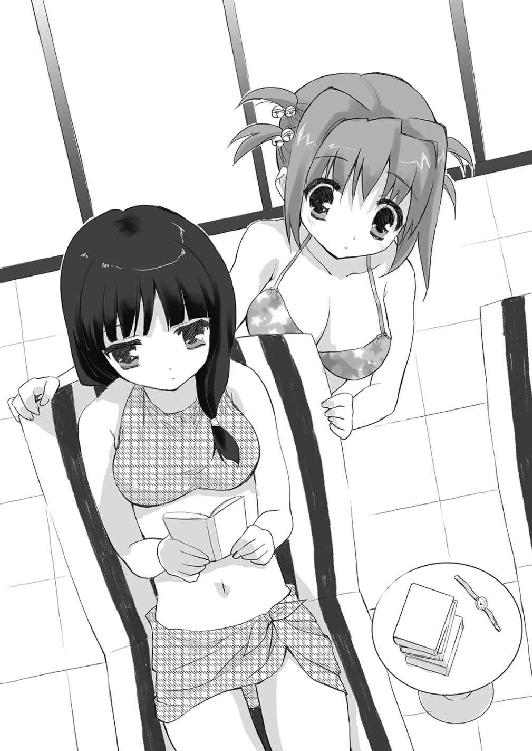
確かそうだったなと私は正確に思い出そうとする。
今西早苗という案外普通っぽい名前の人だった。
「......そう」
「でもなんで純ちゃんがメガネ様の作者の人に会うの？ サイン会とか？」
そしてどうやら合ってたみたいなので、次の疑問が浮かぶ。
「......編集者から連絡アリ」
「編集者？」
どうやら私の想像してたのとはちょっと違う状況らしいなと純ちゃんの言葉で感じる。
「......メガネ様の担当編集」
「それはわかるけど、その人がなんで純ちゃんに用事があるの？」
そこがまさに疑問だった。純ちゃんが熱心なファンなのは間違いないけど、それだけで編集さんから連絡があるはずもないし。
「......私にイラストを描いて欲しい......らしい」
「え？」
純ちゃんの答えは予想を遥かに超えていた。
「......私にイラストを描いて欲しい」
でも聞き違えとかではないらしい。
「純ちゃん、絵なんて描けたの？」
なので私はそこに驚いてしまった。純ちゃんはいつも本を読んでるイメージだったし、趣味がインドア系なのは知ってたけど、プロの編集さんに認められるほど絵が上手とは全く知らなかった。
「......嗜む程度に」
「嗜む程度？」
そして純ちゃんはその辺に関してはあまり自信満々ということはないらしい。
「......そう」
「でもなんのイラストなの？ メガネ様は別の人が描いてるよね？」
純ちゃんがどういう絵を描くかは知らないけど、今いる人と代えてまで使うというのはどうにも私にはピンと来なかった。ファンクラブみたいのがあってその会報でとかならまだわかるけど、そういうことなのだろうか？
「......今西先生の新作」
でもそんなレベルの話ではないらしい。
「新作？ それってメガネ様とは別の作品なの？」
「......そう」
「全然違う作品なの？」
「......まだ読んでないけど、メガネは出ると情報アリ」
純ちゃんがそう言って嬉しそうな顔をした。新作の絵を描くよりも、新作にメガネが出る方が嬉しいのかな？なんて私は思ってしまう。
「またメガネなんだ」
私はよほどメガネが好きな人なんだなあと思ってしまう。『ああんっ！ メガネ様☆』以外の作品は読んだことないけど、きっと他のもメガネが出てきてるのに違いない。
「......そう、またメガネ」
でも純ちゃんはそれだからこそ、今西先生の作品が好きなのかもしれない。
「純ちゃんはメガネ好きなの？」
もしそうなら純ちゃんは刻也君を観たらどう思うんだろうなあと考えてしまう。
「......比較的」
でも純ちゃんの答えはどっちかよくわからなかった。
「じゃあメガネ様は？」
メガネをかけてるのとかけてないのだと、かけてる方が好きという意味だろうか？ そんなことを思って尋ねてみる。
「......それはキャラ？ それとも作品？」
「キャラかな？」
「......比較的」
でも答えは一緒だった。
「じゃあ浩一君が好きなの？」
とすると純ちゃんが『ああんっ！ メガネ様☆』が好きなのはメガネ様じゃなくて、他のキャラが好きということなのかなとも考えてしまう。
「......そうとも言い難い」
でもそういう訳でもないらしい。
「え？ 好きじゃないの？」
「......二人の関係が好ましい」
「二人の関係がいいの？」
「......そう」
「なるほど」
どうも純ちゃんと話してると私の本の読み方はまだまだなんだなと思う。何か私とは別の楽しみ方を純ちゃんはしてるらしいのを感じた。
「......ところで鈴璃」
「は、はい？」
私は純ちゃんの方から話しかけられてちょっと驚いてしまった。
「......どうして浩一君のこと知ってるの？」
でも内容はそんなにびっくりするほどのこともなかった。
「え？ あ、えっと......あの後、ちょっと気になって買って読んだから」
そう言えばそのことを純ちゃんに言ってなかったなと思い出す。内容が内容だったので、ちょっと言い出しづらかったのだ。
「......そう」
そのせいか純ちゃんがちょっと怒ったように見えた。
「読んだって言った方が良かった？」
だから私は心配になって聞いてみる。
「......良かった」
でもバッサリと切り捨てられたみたいだった。
「............えっと」
私はショックで固まった。
「......鈴璃も『ああんっ！ メガネ様☆』を読んでくれて良かったという意味」
「あ、そういう意味か」
それで私はホッとする。というかこの状況でも純ちゃんはマイペースだなあと感じる。
「......うん。良かった」
「まだ一巻読み終わっただけなんだけどね」
「......二巻以降いる？」
「えっと......自分で買うからいいよ。私、読むの遅いし、純ちゃんは純ちゃんで自分の分、いるでしょ？」
「......自分用は別にあるから大丈夫」
「そ、そうなんだ。すごいね」
どうやら純ちゃんは同じ本を何冊も持っているらしい。純ちゃんの『ああんっ！ メガネ様☆』への愛を甘く見ていたと私は気づく。
「......自分用、貸し出し用、保存用と買うのはオタクの嗜み」
「それなら、とりあえず二巻を貸してもらおうかな」
そこまでしてるとなると貸してもらわない方がかえって悪いような気がした。
一巻の時も素直に借りてた方が純ちゃんは喜んでくれたのかもしれないとも感じる。
「......明日、学校にて」
でも純ちゃんはそのことで何か言ったりはしない。
「うん。ありがとう」
だから私は素直に感謝することにして、この話を切り上げた。
「そう言えば、イラストの話だけど」
「......なに？」
「純ちゃんは普段からイラストとか描いてるの？」
「......家だと描いてる」
「あ。だから学校だと本を読んでるんだ」
「......そう」
その純ちゃんの返事に私はけっこう誤解してたのかもしれないと思う。
学校で本ばかり読んでるというのは確かだけど、純ちゃんが家でも本を読んでるものだとずっと思っていた。
「その描いた絵はどうしてるの？」
「......主に雑誌への投稿」
しかも純ちゃんは意外にアグレッシブだった。
「へえ、雑誌に。じゃあペンネームみたいのがあるの？」
「......ある」
となると常連で、雑誌の読者にはけっこう有名人だったりするのだろうか？
「なんて名前？」
「......Ｑ月サド子」
名前もかなりアグレッシブな感じだった。
「さ、サイケデリックな感じだね」
私はそんな感想を言うので精一杯だった。というかそんな名前で描いてる絵ってどんなんだろうとちょっと心配になってしまう。
「......けっこうお気に入り」
でも冷静に考えれば、プロの編集者、しかも『ああんっ！ メガネ様☆』の編集さんが選ぶくらいなのだからそんなに無茶な絵ではないはずだなと私は気づく。
「じゃあ、その名前で今西先生の新作も描くの？」
「......先生が許してくれるなら」
その辺りには純ちゃんもちょっと不安を抱いていたらしい。
「許してくれるといいね」
だから私の言葉に純ちゃんは嬉しそうに笑う。
「......それはいいね」
「そうだね」
だから私は素直にそう思った。
「ちょっといいかしら？」
純ちゃんが読書に戻った瞬間、不意に誰かが私に話しかけてきたみたいだった。
「はい？」
私は本当に自分に対してだろうかと疑いながら、声のした右の方へ振り向く。
そこに立っていたのは二十代くらいの女性だった。
金髪碧眼。絵に描いたような美女だった。そのせいで私は純ちゃんと話している間に自分が寝てしまったんじゃないかと疑うことになった。
この豪華なプールに、この美しい女性がいるととても現実の出来事とは思えなかったのだ。
「いいかしら？」
でもその人は特に気負った様子もなく、小さく笑うと改めて私に向かって確認の言葉を口にする。
「わ、私ですか？」
なので私は逆に確認してしまう。
「そう、あなた。あ、ごめんなさい。自己紹介の方が先だったかしら？」
でもその女性は私の疑問に答えたかと思うと、さらに私の予想を超える行動を始める。
「いえ......その......私になんのご用でしょうか？」
この人が何者かというのも謎ではあったけど、こんな綺麗な人が私に何か用があるという方がよっぽど不可解だった。
「なんだか他人に思えなくて、ちょっと話をさせてもらいたいなあってだけよ」
なのにこの女性は私とはかなり考えを異にしているらしい。
他人に思えない？──ってどういう意味だろう？ 普通そういうのは似てるところが多い人に言うんじゃないだろうか？ 私とこの人の間では同じ所を探す方が大変な気がする。
「......話ですか」
「ちなみに私はエリ。世間的な肩書きはプロモーターとかその辺かしらね。人の才能を見いだして、世間にアピールする仕事をしてる」
「人の才能を、ですか」
私は本格的にこのエリと名乗った人がなんで私に話しかけて来たのだろうかと疑問を感じずにはいられなかった。
実はプロにも認められるほどの絵を描ける純ちゃんにならまだわかるけど、どうしてまた私なんだろう？
「ま、今は全然関係ないけどね。ただの自己紹介よ、自己紹介。で、あなたは？」
でもそんな疑問は考えるだけ無駄だったらしい。全然関係ないと言ってるのだから、きっとそうなのだ。これに関しては納得がいく。
「鈴璃です。高校生です」
だから私はこれ以上、無駄に疑問を抱くのは止めて、話をすることにした。どうもこの人は話の組み立てがおかしい気がするので、もう少し聞いてみないことには何もわからないんじゃないかと思えたからだ。
「そう。鈴璃ちゃんね。あ、この席、座ってもいいかしら？」
そしてエリさんは空いてる席を指して、そう尋ね始めた。本当に話の順番のおかしな人だなと感じる。そしてなんだか以前に似たようなことがあったような気がしてきたが、それがなんなのかは思い出せない。
「......あ、どうぞ」
なので私は慌てて、許可を待ってるエリさんに話しかける。
「ありがと」
エリさんはそう言って笑うとビーチチェアにゆったりと座った。
そんなエリさんを観ると、この人は顔だけじゃなく、全てが整ってる人なんだなと私は改めて感じた。私のように背が低いのに胸が大きいとかそういうアンバランスさはどこにもない。全てが適正なバランスで成り立ってる。それで生まれる緊張感のようなものがあった。
「それでその......なんの話なんですか？」
でも私が知るべきはこの人の外見のことではなかったと思い出す。
「うーん。特にこれと言った話題はないのよ」
なのにエリさんは不思議なことを言い始める。
「えっと......話題もないのに話しかけて来たんですか？」
しかも知らない相手に？ 話さなければいけない理由があるわけでもないのに？
「だから言ったでしょ？ なんだか他人に思えないからって」
「......それもよくわからないんですけど」
実際、どこをどう観たらそう思えるのか教えて欲しい。
「簡単に言うと、仲間ハズレにされてる感じかな」
と思ってたらとんでもない答えが返ってきた。
「な、仲間ハズレですか？」
なんのことだろうと私は思う。少なくとも今日は純ちゃんと美里ちゃんがプールに行くので一緒に連れて来てもらったはずで、仲間ハズレなんて言われるのとは真逆な展開だと思うのだけど......。
「あ、今日の話じゃないのよ」
そんな私の考えを読んだかのようにエリさんはそんなことを言う。しかしその割には私の知りたいことを教えてくれない人だよなとも感じる。
「じゃあ、いつの話なんですか？」
なので口に出して聞いてみる。
「鈴璃ちゃんは今、高校一年生？」
でも返ってきたのは答えではなく、新たな疑問。
「そうですけど」
本当に何を言い出すのかわからない人だなと改めて感じる。
「じゃあ現在進行形かな、きっと」
「......意味がわからないんですけど」
私は別にクラスでも仲間ハズレになんかされてないと思う。ここでも、学校でもないなら一体、どこで私が仲間ハズレにされてるというのだろう？
「今はわからないでしょうね」
でもエリさんは相変わらず、私の疑問には答える気はないみたいだった。
「......じゃあそのうちわかるんですか？」
「そうねえ。今年中くらいにはわかるかもしれない」
エリさんのそんな話に私はこの人は占い師か何かなんだろうかと思えてきた。
「あ、別に予言とかそういうことじゃないのよ？」
でも違うらしい。
「じゃあなんなんですか？」
「私がね、高校一年の頃、仲間ハズレにされてたって話」
「エリさんがですか？」
それと私になんの関係があるのかもわからなかったけど、何より、こんな人を仲間ハズレにするという理由が私にはちょっとわからなかった。
「あ、と言ってもクラスの女の子に距離を置かれてたってわけ......でもあるか」
「......どっちなんですか？」
「ごめんなさい。普通に想像するのとは違う意味だと言うつもりだったんだけど、普通に想像する意味でも私は仲間ハズレだったなあ、と」
「......はあ」
「要するに鈴璃ちゃんが普通の意味で仲間ハズレにされてると言ってるわけじゃないのよ。それはわかるでしょ？」
「それくらいは」
でもじゃあどういう意味なのかというのが私にはさっぱりわからなかった。それになんでこの人が普通の意味でも仲間ハズレにされてるのかも。
とにかく話せば話すほどわからないことが増えていく感じがしてしまう。
「要するに仲良しサークルみたいなものがあって、私はそのサークルのメンバーの何人かと仲が良かったんだけど、そのサークルには誘われなかった。そんな話なのよ」
「......なるほど」
それは確かに仲間ハズレと言っていい状態だとは思う。でもやっぱりイマイチピンと来なかった。何かのたとえ話なんだろうなあというのはわかるけど、それが自分とどういう関係があるのかがわからない。
「というか、よくよく考えてみるとそんなに似てないかもしれないわね」
そしてそんな私を置いてけぼりにして、エリさんは全てをひっくり返すようなことを言い始める。純ちゃんとは別の意味でマイペースな人らしいと私はやっと気づいた思いだった。
「だからどっちなんですか？」
でも私がそう尋ねたら、さすがにエリさんも自分が変なことを言ってるとわかったらしく、苦笑いを浮かべた。
「うーん。私はその仲良しサークルの人たちとしか仲良くなかったけど、鈴璃ちゃんはそうではないみたいだから」
「じゃあ勘違いだったってことですか？」
「どうかな。似てるところはやっぱり似てると思うけど」
それからちょっとエリさんは遠くを見るような目になる。
「思うけど？」
「心配するようなことじゃないんだなって気づいたってことかしら」
エリさんはそう言いながら、今度はにっこりと笑った。
「......よくわからないんですけど、心配してくれてたってことですか？」
事情はよくわからないけど、要するにそういうことなのかなと私は感じた。
「うーんと、そうなるのかしらね。まあ、いずれにせよ、妙な話よね」
でもエリさんはどっちとも言えない態度で笑う。なのに私はなんとなくわかってしまった。
エリさんはその仲良しサークルに仲間ハズレにされてたことに気づいた時、非道く傷ついたのだろうということが。でなければどうして私をわざわざ心配するだろうか？
私がエリさんと似てて同じ道を歩みそうだということ。そしてそれを心配すること。その二つから導かれるのは、エリさんにとって悲しい過去があったということだ。
「ところで、なんで私はそうでもないって思ったんですか？」
それでも私は気づかない振りをした。そのことをエリさんにそれ以上、尋ねてもエリさんを悲しませるだけだろうと感じたから。
「鈴璃ちゃんには良い友達がいるみたいだから」
そしてエリさんは私のそんな態度に気づいたのか、普通に私の質問に答えてくれた。
「それはもう話しかける前にわかりそうなものですけど」
でもあんまりにそのままの答えなので私は思わずつっこんでしまった。
「そうね」
なのにエリさんはそれが正しいみたいに肯定して、小さく笑う。
それを見て、私は不思議な人だなと思う。さっきまでは、かなり変な人だと思っていたし、少し不愉快な感じもしてたけど、今はそうでもなくなってきた。
「そうならなんで、話しかけて来たんですか？」
私は意外にそういう人が好きなのかもしれないなと思う。純ちゃんも美里ちゃんもかなり普通とは違う娘たちだけど、でも私は二人のことが好きだった。
エリさんにもそれと似たようなことを感じてるのかもしれない。そんなことも思う。
「それはやっぱり似てると思ったからじゃないかしらね」
そしてエリさんはそんな自分を十分に理解してる人なのかなとも思う。
変である自分を楽しんでるというか、隠そうともしてないというか。
「でも似てないと思ったんですよね？」
「肝心なところで似てないなって思ったという方が正確ね」
エリさんはまた煙に巻くようなことを言い始める。
「そんなに私とエリさんと似てますか？」
「似てると思うけど？ そういう自覚はない？」
「ないですよ」
エリさんと似てるなんて言えるほど私は図々しい性格はしてない。
「そうかなあ。かなりわかりやすいところで似てると思うけど」
「わかりやすいところ......って外見のことですか？」
「まあ、外見のことかな。私たちって、ほら、嫌でも目立つでしょ？」
エリさんはそう言って困ったものだとでも言わんばかりに苦笑いを浮かべた。
「......ですね」
そしてそう言われてしまうと、否定しがたいものが私にはあった。
エリさんと私ではそうなる理由が全然違うけど、外見が理由で目立つということに関しては確かにそうだろうと思う。そしてそれは私にとってあまり認めたくなく事実だった。
「ここからは私の話になるけどいいかしら？」
そのせいなのか、エリさんは私に対しての言及はもう止めることにしてくれたらしい。
「いいですけど」
それにしても何の話をするつもりなんだろうと思う。
「私ね、昔からすごくモテたの」
でもただの自慢話っぽかった。
「......だと思います」
「でもね、私が好きになった人は私には興味がなくて。こういうのも失礼な話だけど、私にとってどうでもいい人ばかり私のことを好きになるのよね」
「なんとなくわかります」
「今で言うと合コンって言うのかな。男の子との集まりがあって人数が足りないから来てとか言われて行くとね、私だけモテちゃったりね。おかげで女の子の受けが悪くて悪くて」
でも次第に自慢話とは違うらしいと私にはわかってきた。
「それは大変ですね」
「そういうどうでもいい場ならまだいいんだけどね。友達だった娘が男の子に告白するって時に、一人じゃ心細いからついてきてって言われて、私も断ればいいのにのこのこついて行っちゃったものだから」
そこまで聞けばもうオチは私にはわかってしまった。
「修羅場になっちゃったんですね」
「そうなのよ。友達の好きだった男の子は私のことが好きで、私のことが好きだからってその場で断っちゃってね」
「......そんなのエリさんのせいじゃないじゃないですか」
でもその友達の娘がエリさんのことを恨まずにはいられなかったのもわかる気がした。
そんな振られ方をしたら、エリさんと今まで通りでなんていられないだろう。
「他にもね。クラスの娘に彼氏を見せびらかされたことがあって」
「......その人がエリさんの方を好きになっちゃったんですね」
「そうそう。私は全然なんとも思ってなかったんだけどね。人の恋人に色目を使って奪っただの、恋人を寝取っただのと噂されたりね。私、別の人に片思いしてただけだったのにね」
「それはやっぱりエリさんが悪いんじゃないと思うんですけど」
というか悪いのはその男であり、そんな男を自慢げに見せびらかそうとしたクラスメイトの方だと思う。
「そうね」
なのにエリさんはそれはわかっていても、二人を恨んでたりはしないみたいだった。
「でも、私は私のことをわかってなかったのかなと今では思うのよ」
エリさんはただ自分が悪かったのだと考えているらしい。
「今はわかってるんですか？」
そしてそのことでエリさんは救われたのだろうかと私は考えてしまう。
「その頃よりはね」
そのせいかエリさんのその言葉は私にとっては二つの質問の答えのように聞こえた。
私が口にした質問。口にしなかった質問。その両方の答えに。
「そうですか」
「まあ、要するに私は人に嫌われるために生まれて来たってことなの。だから何もしないと嫌われる。それがその頃はわかってなかったの」
エリさんはそう言って小さく笑った。別に自分を卑下してるわけでも、自棄になってるわけでもないのはなんとなく伝わってきた。
理不尽で悲しいそのことを、エリさんはそれが事実だと理解して認めている。
「......私もそうなんですか？」
だから私は心配になってしまった。
自分がそうだなんて今日まで思ったことはなかったし、今だって思ってない。
でも私は知ってしまった。
そういう人がいる。より正確には、そうだと思いながらも笑って生きてる人がいる。
「あはは。そんなわけないでしょ？」
そしてエリさんは私の心配を笑って蹴飛ばした。
自分で私のことを似てると言っておきながら、実にあっさりと。
「あなたと私は違うわ、全然ね」
「......ですよね」
似てるところもある。それをエリさんは教えてくれた。
「でも、何がそんなに違うのかしらね？」
そして違うという事実も。でもその本当の理由をエリさんは教えてはくれない。むしろその答えを私に求めていた。
「何なんですかね？」
私は知らぬ間に、エリさんと私とが似てるという事実を受け止めているみたいだった。その上で、二人が違う理由を真剣に考える。
話し始めた時は、どこが似てるんだろうと思っていた私が、気づけばどこが違うんだろうと考えている。それは実に奇妙だけれど、そう考えるのは私の中では自然なことだった。
「時に鈴璃ちゃんは兄弟はいる？」
「はい？」
なのにエリさんは私が思考に集中するのを許してくれない。
「兄弟はいる？」
「弟が一人いますけど」
「文化会系？ 体育会系？」
「......体育会系ですかね、一応」
私は弟の流輝を思い出しながら、そう答える。バスケのシュートが大好きでいつもそうしてるのだから、どっちかと言えば体育会系のはず。
「私は兄が一人いたわ。建築デザイナーだった」
「完全に逆ですね」
「そうね」
「でもそれが理由なんですかね？」
「ん？ 何が？」
「......二人が違うところですよ」
「ああ、そうね。でも理由の一つでしかないと思う」
エリさんが話を振ってきたのは答えのヒントとかそういうことではなかったらしい。
「じゃあ、なんなんですかね？」
だから私は改めて考える。二人が違う決定的な理由というのはなんなのかを。
「何かしら？」
「というか、私はエリさん程は目立たないからじゃないですか？」
実際、私が気にしすぎてるだけと感じる時も多い。でもエリさんは自分で気にしてる以上に目立っていたはずだ。
「そこはあんまり関係ない気がするけど」
「そうですか......」
けっこう重要なところな気がしたけど、そうでもなかったらしい。
だから私はもっと他の答えを求めて考える。
「............」
でも考えたってわかるわけもなかった。
私はきっと自分のこともよくわかってない。そしてエリさんのことはもっとわかってない。
さっき会ってちょっと話しただけの人との違いなんてわかるわけもない。
「もしかしたら......」
でも私はそれを思いついた気がした。
思いついたというほどのことでなく、ただ私はある人のことを思い出しただけなのかもしれないけれど。
「ん？」
「私、好きな人がいるんです」
エリさんも高校時代、好きな人がいたと言っていた。そこは同じ。
でも決定的な違いがあった。エリさんはずっと片思いだったけど、私と刻也君は小学校の頃から付き合ってて、今も付き合ってる。付き合ってるだけで片思いかもしれないけど......。
「好きな人が？」
「小学校の頃から付き合ってて、今も付き合ってます。それを友達も知ってます」
私はそこまで言ってから、だからなんなのだろうと自分で思ってしまった。
「上手く行ってるのね」
でもエリさんにとってはそれで十分のようだった。そう呟いて笑顔を浮かべる。
そこには謎が解けたというスッキリした気持ちが表れていた。
「......はい」
なのに私はなんだか非道いことを言ってしまったかもしれないと感じた。
エリさんが上手く行ってなくて、だから良くなかったと。そう言ってしまったみたいな気がして落ち着かなかった。
「でも、そういうことよね」
エリさんはそれを怒ったりはしなかった。そういう意味だとわからなかったと考えるには私はエリさんのことを理解しすぎていた気がする。
エリさんはそうだとわかったけど怒らなかったのだ。
「それが答えなんですか？」
だから私はやっぱりそのことには触れなかった。
「今日のところはそれで十分でしょ」
エリさんはそう言って、ちょっとわざとらしく大きな笑みを浮かべた。
エリさんはそれで納得したんだなと私にはわかった。そしてこの答えを知るために、私に話しかけてきたんだなとも。
「それならいいんですけど」
それでどれだけエリさんが救われたのかは私にはわからない。でもエリさんの笑みが虚勢とは私には思えなかった。
私にわかりやすいように、大きく笑ってくれた。それを感じる。
「じゃあ、お邪魔したわね、鈴璃ちゃん」
そしてエリさんは椅子から立ち上がって、別れの言葉を告げた。
「あ、いえ。こちらこそ」
それが突然だったので私はちょっと戸惑ってしまう。でもエリさんはそれを自然に受け止めて、小さく手を振って歩き出した。
「エリさん！」
私はそんなエリさんにまだ何か言い足りない気がして呼び止めてしまった。
「ん？」
それでエリさんの綺麗すぎる顔が振り返って私を見つめる。
「あの......その......」
でも見つめ返されると上手く言葉が出なかった。
「落ち着いて。言いたいことがあるならちゃんと聞くから」
そんな私をエリさんは優しく待ってくれた。
「その......私......エリさんのこと嫌いじゃないですから」
そしてやっと出てきたのはそんな言葉だった。
それにエリさんは驚いた顔を浮かべる。まるで初めて聞いた言葉でもあったかのように。
「......ありがと」
エリさんはそれから少し困ったような顔を浮かべていた。その言葉をどう処理して良いのかわからないかのように。
それが私には不思議だった。エリさんは悲しい現実をいともたやすく受け止めてみせたのに、私の言葉一つを持てあましてるように見える。
「今日はありがとうございました」
だから私も感謝の言葉を返した。
「どういたしまして」
それにエリさんはにっこりと返すと、手を振って去っていく。
私はそれを無言で見送った。もう言うべきことは言った。そう思えた。
「............」
だから私は堂々と歩いていくエリさんの後ろ姿を見ながら、改めて綺麗な人だなと思った。そのシルエットも体の動かし方も、嫌味なくらい綺麗だった。
でも私はそれを羨ましいとは思わなかった。
「過ぎたるは及ばざるがごとしか」
私はエリさんがその綺麗さのせいで苦しんできたことを知っていた。
綺麗だからって得をするばかりじゃないと知ってしまった。
だからなのか、私は普段は無駄に重く感じる胸が少し軽くなってるように感じられた。
「......ま、気のせいだけどね」
感じられただけで、見下ろせばいつもと何も変わらなかった。どころか水着のせいで普段より目立って、大きくすら感じられた。
○
「いやー。楽しかったー」
帰り道も、ずっと泳いでたはずの美里ちゃんが一番楽しそうだった。本当にいつでも楽しそうだなと改めて思う。
「ん？ 鈴璃は楽しくなかった？」
そしてそんなことを思って見ていたせいで、美里ちゃんは私のことを変に思ったらしい。
「えっと......楽しかったかな。プールで楽しめたなんて久しぶりだったかも」
言い訳じゃないけど、実際、楽しかったと思う。そういう意味では嫌だったのに連れてきてくれた美里ちゃんに感謝したい気持ちだった。
「ね、来て良かったでしょ？」
そしてそれは美里ちゃんにも伝わっていたらしい。
「うん。ありがと、美里ちゃん」
「え？ それを言うのは純の方でしょ」
でも美里ちゃんは自分の手柄とは思ってないらしい。美里ちゃんにとって大事なのは、楽しかったかどうかということで、それが自分のおかげかどうかなんてどうでもいいことなのかもしれない。
「......何？」
でも当の純ちゃんと言えば、何か考え事をしてたらしく自分の名前を呼ばれて戸惑ってる様子だった。
「鈴璃がね、純のおかげで久々にプールで楽しめて良かったって」
そしてそこに美里ちゃんは一足飛びの説明をする。
「......それはいいね」
「うん。ありがとう、純ちゃん。お父さんにもよろしく言っておいて」
でもそれをわざわざ否定するのも回りくどい気がしたので素直に乗っておく。
「......よろしく伝える」
それで純ちゃんは小さくうなずく。
「あ、私も感謝してるからね」
美里ちゃんはそんなことを今更言う。美里ちゃんが感謝してないとしたら、逆にびっくりしてしまいそうだなんて思ってしまう、私。
「......知ってる」
そしてその辺は純ちゃんもわかってるらしい。
「じゃあ、お父さんにもよろしく言っておいてね」
「......伝える」
純ちゃんもかなりマイペースだけど、こうして美里ちゃんと話が通じてるところを見ると、意外に他人のことを見ている娘なのかもしれないななんて感じる。ちょっと何を考えてるのかわからない時もあるけど、やっぱり純ちゃんはいい娘なんだなと改めて思う。
「そう言えばさ、鈴璃？」
でも話しかけてきたのは美里ちゃんの方だった。
「何？」
「鈴璃さあ、なんか外人モデルみたいな人と話してなかった？ あれ、誰？」
そして美里ちゃんも案外、人を見てるらしい。プールで遊んでたとばかり思っていたけど、こっちの行動も見ていたということらしい。
「うーん、誰なんだろう？」
でも改めて聞かれるとよくわからないというのが正直なところだった。
「え？ なにそれ？」
でもそんな言い方すらも美里ちゃんにとっては楽しさを予感させたらしい。わくわくした顔で尋ねてきた。
「エリって名乗ってたけど、なんか不思議な人で、思い出してみると本当にあの場にいたのかなあ、とか」
実際、そんな感じなのだ。私が悩んでいたせいで見た幻覚とか夢とか言われた方がまだ納得いく。そんな気にすらさせる人だった。
「いなかったら私が見てるわけないじゃない」
でも美里ちゃんにとっては遠目に見たただの現実だったらしい。
「それは......そうだよね」
とりあえず美里ちゃんがそう言う以上、本当にいたと信じるしかない。
「で、何者だったの？」
「プロモーターって言ってたかな。人の才能を世間にアピールするのが仕事とか」
「じゃあ裏方の人なの？」
美里ちゃんのその指摘は実にまともで、でも意外な感じがした。
「そうなるよね」
芸能人で言ったらマネージャーみたいな人なんだろうか？ そう思うとなんだか人選として間違ってる気がしてきた。
「で、なんの用だって？」
「うーん。それがね。私のこと他人と思えなくて、ちょっと話を聞かせてくれって」
「とりあえず仕事関係ではないと？」
「仕事は全然関係ないって」
「なるほどねー」
そして美里ちゃんはそこで何故かしきりにうなずき始める。
「もう意味わかったの？」
なので私は思わずそう聞いてしまった。私はその時点ではなんのことかさっぱりわからなかったのに、美里ちゃんはわかってしまったらしい。
「うん、大体」
「美里ちゃんはあの人と私、似てると思った？」
「うん？ うん。似てるというか、ほとんど同じ人間だよね」
そして美里ちゃんにとっては、それがわからない方が不思議という感じらしい。
「ど、どの辺が？」
一応、エリさんと話して自分では納得したつもりだったけど、美里ちゃんにこうもあっさりと納得されると逆に不安になる。
「掴みはオッケーなところ？」
そして美里ちゃんは、美里ちゃんらしい表現でそう答えた。
「掴み......って？」
「お笑いの用語で、最初に客を楽しませる空気を作るってことかな。まあ、この場合は外見にインパクトがあるってくらいの意味でもいいよ」
「意味でもいいって......」
でも言わんとすることはわかった気がした。そして美里ちゃんがかなり正確に私とエリさんのことを理解してることも。
「むしろオッケー過ぎるところかな？ 違う？」
そして私がそう思ってる間に、美里ちゃんはさらに理解を深めたらしい。
「うん。そういう話だった」
私はこの件に関しては素直に美里ちゃんに感心してしまった。
「私はね、大事なのは自分が好きかってことだと思うよ」
そして美里ちゃんはにっこりと笑って言い始める。
「へ？」
「オッケー過ぎて嫌なこともあるかもしれないけど、それが自分だよね」
美里ちゃんはまるで私とエリさんの話を聞いてたかのように話を続ける。
「そうだよね」
「自分の望み通りの自分じゃなくてもさ、自分は自分だからね」
「だから大事なのは自分が好きかってこと、なの？」
「うん」
そして美里ちゃんはそれが当たり前という顔をする。
「それはそうかもしれないけど......嫌いな部分はあるよ」
それは私にとっては大きすぎる胸。そして低すぎる背。
「それはあるでしょ。それこそいくらでも」
でも美里ちゃんは楽しげにそんなことを言う。
「美里ちゃんもあるの？」
「あるよ？ どころか鈴璃よりもずっと多いんじゃないかなあ」
美里ちゃんの言葉はにわかには信じられなかった。にこにことそんなことを言われてもとも思うし、美里ちゃんがそういう悩みを口にしたのを私は聞いた覚えがない。
「そうなの？」
「うん。自分でも嫌なところを人に好きになってもらおうなんて虫がいいでしょ？」
「それは......そうだね」
「ていうか、鈴璃もエリさんだっけ？ そう、エリさんも贅沢な悩みってヤツだと思うよ。勝手に掴んじゃうからうざいってのはあると思うけど、どんなに頑張っても掴めない人からすれば掴めるだけマシだもの」
美里ちゃんはそう言ってビシッと私に指を向けてきた。気づけば真剣な顔をしてる。
「そ、そうだね」
そして言われてみると、美里ちゃんはいかにも普通だなあと思う。行動こそ、おかしなところがあるけど、外見となるとここが目立つみたいなところはない。
「そこで認められちゃうと私は凹むしかないわけなんだけどさ」
でも美里ちゃんは真剣な顔から砕けた笑みに変わる。こっちに向けてた指も元に戻す。
「......ごめん」
「いや、もう芸人がかわいそうとか思われたらおしまいだから」
「......芸人だったの？」
「もちろん芸人じゃないけど、三人の中の立ち位置としてはね」
「そうなのかな」
「ま、その辺はとりあえず置いておいて......大事なのは自分を好きかってことなの」
美里ちゃんはそう言いながら私から視線を外してまっすぐ進行方向を見た。
「それはなんとなく」
「鈴璃は嫌でも目立つ外見が嫌かもしれないけど、そうじゃない鈴璃なんて鈴璃じゃない。それと同じで私は放っておくとまったく目立たない外見だけど、そうじゃない私は私じゃない。そうでしょ？」
「......うん」
「持って生まれたものは持って生まれたものだから、それはそれなんだよね。だから大事なのはそんな自分はそんな自分として、もっと好きになれるように努力すればいいんじゃないかってことだと私は思うんだ」
美里ちゃんはそう言ってまた私の方を見た。ちょっと意地悪な笑みを浮かべてる。
「......もっと好きになれるように、か」
「頑張ってるのに、持って生まれたものしか評価されない。そんなこともあるかもしれない。でもそれってやっぱり贅沢な悩みだよね。持って生まれたものがない人よりはずっと評価されてるんだから」
「そうなるのかな」
「だから鈴璃はその胸にもっと自信を持っていいと思うよ」
美里ちゃんはそう言って今度は私の胸を指さした。
「......む、胸は関係ないと思うんだけど」
なので私は一応、否定してみる。
「いえいえ、徹頭徹尾、胸の話でしたよ？」
でも明らかに美里ちゃんの方が正しいのもわかっていた。
「そ、そうかもしれないけど、そういうことじゃなくて......」
「でも、そういうことなんだよ？」
美里ちゃんはそう言うと今度はにこにことした顔になった。でもそれは私に意地悪をしてるのではなく、私が胸のことを気にしすぎだと言ってくれているのだと私は感じる。
「う、うん」
「つまり私が言いたいのは、私は鈴璃の胸も好きなのよってことなの」
でもその言葉にちょっと違うかもしれないとも思った。
「......そうだったの？」
「鈴璃は自分の望んでない方向で評価されてるから嫌かもしれないけど、そこはやっぱり評価されるところなの。だから、そこだけで評価されるのが嫌ならさ、他にも評価されるようになればいいの。それだけ。それが圧倒的に高くなれば、誰も鈴璃の胸の話なんてしなくなるよ」
「それは、そうだよね」
実際、そうなんだろうなと思う。
私が問題なのは胸や背のことを気にしてるだけだから。美里ちゃんの言うように他に評価されるようなことを何もしてない。それでは胸をからかわれても当然だ。
「でも、私はそうじゃない鈴璃でも好きだからね」
なのに美里ちゃんは私にそんなことを言ってくれる。
「......ありがと」
それに気づくと私はエリさんと同じ言葉を返していた。そのせいで、エリさんがあの時、どう感じていたのかもなんとなく理解できた気がした。
エリさんは照れていたのだ。あんなに綺麗なエリさんだけど、ああして自分を認めてくれるような発言をされることに慣れていなかったのだ。
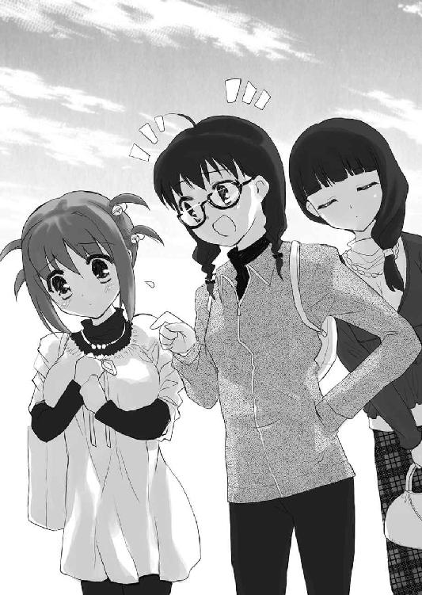
あれだけ綺麗な人なら褒められ慣れてても何も不思議ではないのに、でもそうなんだと私は理解した。あの戸惑いの訳は、そういうことだったのだ。
「だから私は鈴璃には自分のことをもっと好きになって欲しいんだ。今のままで鈴璃は十分魅力的なんだし、そうしてくれないと鈴璃のこと好きな私に失礼だと思うでしょ？」
そしてそんなことを思ってる間に、美里ちゃんはにこやかにそんなことを告げる。
「......そうなんだよね。失礼だよね、確かに」
私が私を否定するのは自由かもしれない。でもそれは同時に美里ちゃんが間違ってると言ってることになるのだから。
私みたいな人間を好きになるのはバカだと言ってることになるのだから。
でも美里ちゃんの注文はやっぱり簡単ではなかった。そうなれるようになりたいのは確かだから言われて嫌な気にはならないけれど。
「うん。わかったら、もっと胸を張って歩いて」
「それは、ちょっと......」
「ま、すぐにこうしろって話じゃないけどね」
そして美里ちゃんはそんなこと前からわかってるみたいだった。今の話だって、きっとずっといつか言おうと思ってたことだったのだ。
「でも......私は他に何かあるのかなあ？」
外見は放っておいても他人にいい意味でも悪い意味でも評価されてしまうけど、何か特技みたいなものは改めて考えてみると何もなかった。
バイトでも刻也君に迷惑をかけまくりだし、学校でも苦手な教科もなければ得意な教科もないという感じだし。
「それは外見以外のことで？」
美里ちゃんが私の疑問に質問をぶつけてくる。
「うん。外見以外で」
そして美里ちゃんならそれを知ってるんじゃないかと私は期待してしまう。そうでなければ、私とエリさんの共通点をあんなにも簡単に見抜けなかったはずだから。
「すっごく可愛いところかな」
でも美里ちゃんの返事は私の望んでたものとはかなり違った。
「......それも外見の話だと思うけど」
なので私は冷静につっこんでしまった。半ば反射的に。
「え？ そうかな？」
そして美里ちゃんは独り言のように呟いたかと思うと、急に大きな声をあげて笑い始めた。
「あははは。そう来るかー。さっすが鈴璃っ」
美里ちゃんは時々、そうなる。ツボに入るというヤツらしい。
「......違うの？」
その笑いがあまりに大きいので私は何か間違ったことでも言ったのかと心配になる。
「あはははははは。違わないよね。うん、外見の話だよね」
でもそれがさらに美里ちゃんの笑いを加速させたみたいだった。
「だからなんでそんなに笑ってるの？」
「いや、だって、ねえ。あははは。純もそう思うでしょ？」
そして笑いを我慢できない美里ちゃんは純ちゃんに救いを求めることにしたらしい。
「......何？」
でも純ちゃんはやっぱり聞いてなかったみたいだった。
「鈴璃の外見以外の、あははは、魅力の話なんだけど......ぷっくくくく......」
それで美里ちゃんは説明しようとするのだけど、純ちゃんが聞いてなかったことすら美里ちゃんには面白かったらしい。
「......すっごく可愛いところ？」
なのに純ちゃんも美里ちゃんと同じ意見を口にする。
「だからそれは外見の話......だと思うんだけど」
でもやっぱり同じツッコミを私はするしかない。
「......それはどうかな？」
そして純ちゃんもやっぱり外見の話ではないという立場だった。
「わかった、わかったから......って、くくくく......」
そして美里ちゃんはこれ以上ないくらいずっと笑っていた。
「わかったの？」
「鈴璃が外見の話だと思いたいなら、それでもいいから」
美里ちゃんはなんとか笑いを堪えながら私にそう告げる。
「......うん」
何か大事な話をするつもりなのかなと私は身構える。
「外見のことは七割ってことにしておいて」
けど、やっぱり美里ちゃんの言うことはどうも真剣味に欠ける感じだった。
「けっこう多いね、外見」
なので私は素直に思ったことを口にしてしまった。
「ぷっ、くくく......って、もう勘弁してよ......死んじゃう！ 私、死んじゃうから......あはははははははは」
そしてそれが美里ちゃんにはおかしくてたまらない返答だったらしい。美里ちゃんのツボというのは本当にわからない。
「うーん。とりあえず三割は違うってことなのか......」
そしてその三割がなんなのかもさっぱりわからなかった。わからないけど、その何かをもっと増やせていければ、私も胸を張って歩けるようになるんだろうなとは思う。
「そしたら──」
私はそこまで呟いて慌てて口をつぐむ。
そうしたら刻也君も私のことをもっと好きになってくれるのかな？──なんて言ったら、今度こそ、美里ちゃんを殺してしまうかもしれない。私はそう思いながら、まだまだ笑い続けている美里ちゃんを見ていた。
おしまい
そのご 私と有馬君と病院での出会い
その日、どうして私がそこへ足を向けたのか。それは自分でもよくわからなかった。
古西早苗さんが経営してるこの喫茶店に私は時々、顔を出すようになっていた。だからその日も、たまたまそういう気になったというだけのことだろうとは思う。
つまり、いつものことであって深い意味などなかったのだろう。
「いらっしゃいませ」
だがその日はいつもと少しばかり様子が違っていた。
そこで私を待っていたのは、誰でもない私の妹だったのだ。それは実に予想外だった。
「......狭霧。なぜ君がここにいるのかね？」
ただの客というならわからないでもなかったが、狭霧は私に向かって「いらっしゃいませ」と言った。つまり彼女はこの店の給仕なのだ。どういう理由でそうなったかはわからないが、彼女の行動、そして服装からそれは明らかだった。
「早苗さんにアルバイトとして雇ってもらったんです」
狭霧の言い分は実に明確だった。
店の主に雇われてここにいる。それ以外に理由は考えられない。
「......だろうな」
私はそれでもやはり何かすっきりしないものを感じた。もちろん狭霧を雇うのは古西さんの自由だが、それにしたってこの店は少々、私の知り合いを雇い過ぎではないだろうか？
他にもいるのかもしれないが有馬君、絹川君に続いて妹の狭霧までとなるとあまりにできすぎてる気がする。
お互いに紹介し合ってのことという気もしなかった。有馬君はそんなことはしないだろうし、絹川君がそうしたならさすがに話を聞いててもいいはずだ。
とすると、どうして狭霧はこうしてここでアルバイトをしてるのだろうか？ それが気になってしまう。
「どうかしたんですか、兄さん？」
しかし狭霧はそんなことはちっとも気にしてないようだ。
「いや、別に......というか君はいつからこんなことを？」
なので私も理由については考えないことにする。
「先週からですよ。今日で三度目ですね」
「そうか」
要するに私がこの間来てから、今日来るまでのことだったということらしい。
「他の人が入れない日に来るように言われてるので、絹川さんには会ってないんですけど」
「......絹川さん？」
私は狭霧が口にしたその名にかなりの違和感を覚えた。どうして狭霧がその名前を知ってるのかわからなかったのだ。
「兄さんのお友達なんですよね？」
「それはそうだが、どうして君が知ってるのかね？」
「何度か会ったことがあるんです。一度目は九条君と一緒にいるところを。二度目は大海さんと一緒のところを」
「そ、そうだったのか」
狭霧の言い方からして絹川君とそれなりに親しいのだろうか？ その割には絹川君からそういう話は聞いた覚えはないのだが。
「刻也君、驚かせちゃったみたいでごめんなさいね」
そう言ってこちらに近づいてきたのは古西さんだった。
「あ、いえ。私が驚きすぎてるだけのことですから」
私は古西さんに心配されるのは少し筋違いかもしれないと感じる。
「驚くと言えば、兄さん」
なのに狭霧はまだ私を驚かし足りなかったらしく、そんな話を始める。
「何かね？」
「母さんがまた入院しました」
狭霧はただの世間話のように、そんなことを言い出した。
「......母さんが？」
しかし私はそれを平然と受け止めることは、もちろん出来なかった。
去年の今頃のことを思い出してしまう。元々病弱だった母が入院し、死ぬかもしれないと宣告された時のことを。
母は毎年、冬が近づくと体調を崩していた。そして今年もその時期がやってきたということだ。そういうことなら、もっと早く知りたかったと私は感じる。
「もっと早く伝えたかったんですけど、兄さんの連絡先がわからなくて」
しかし私が耳を塞いでいたも同然だったことに気づかされる。
私は家を出て、そして家の人間が連絡を付けづらい場所で暮らしている。私が今日のこの時まで知らなかったのは、狭霧のせいではなく、私のせいなのだ。
「で、どうなのだね、母さんは？」
とすれば狭霧を責めてる場合ではなかった。知るべきことは色々ある。
「......あんまりよくないみたい」
狭霧は少し考えて、そう返事をした。さっきまでは明るい表情を見せていたが、急に深刻な顔つきになった。
何事にも平然と暮らしてる狭霧がそういう表情を見せるのは珍しいことだ。そしてそれは母さんの病状がただごとではないということを意味してるように感じられた。
「ど、どこに入院してるのだね？」
となればのんびりとコーヒーを飲んでいる場合ではなかった。
少しでも早く、母に会いに行かねばという気持ちに心が支配されていくのを感じる。
「去年と一緒の病室ですよ」
「そうか」
そしてどこに行かねばならないかはそれだけでわかった。
母が入院してるのは朴東病院。病室が何階の何号室かを私はしっかりと覚えていた。
１３０２。それは私にとって忘れることのできそうにない数字だったからだ。
○
朴東病院は歩いていくのはちょっと遠い場所にあった。
なので私は喫茶店を飛び出し大通りに出るとバス停を探した。
運のいいことにバスはすぐ来たが、その歩みは決して速くはなかった。夕方という時間帯はけっこう車が混んでいるものだと私は知り、その状況に焦りを感じた。
タクシーに乗るべきだっただろうか？ そんなことも考えたが、道路が混んでるのは同じなのだから大差はないと気づく。
ただ、それでも人の乗り降りの時間が惜しく感じられた。実に自分勝手なことだが。
「......母さん」
母は桔梗という名だった。秋の七草にも数えられる植物の名前だ。
青紫色の花を秋に咲かせ、冬になる前に散らせる。そして母はその名の由来に似てか、冬になる前に体調を崩す人だった。
いや、母に限った話ではない。八雲家の女性は代々、そう長くは生きられなかったらしいのだ。おそらくは遺伝病か何かなのだろう。若い頃は平気なのだが二十歳くらいから症状が出て、四十を前にして亡くなってしまうらしい。
だから私にとって母は、ずっと病弱な人というイメージだった。それでも私が小学生の頃は時々病院に行くくらいだったのだが中学に上がる頃から病院にいる時間が増えた。
去年などは昏倒して、そのまま意識が戻らないかもしれないと医師に言われた。
なのに私は父とケンカをして家を出て、そのことを忘れていたのだ。
母がこの時期、体調を崩すことを知って育ったというのに。
「実に薄情な子供だな、私は」
そして私がそのことをしっかりと思い出した頃、朴東病院が見えてきた。傍目にもわかる高い建物だった。
全部で十五階。辺りでも一際高い。そこに母が入院してるのだ。
私が朴東病院の１３０２に辿り着くために三十分近くの時間を要した。バス停からもかなりあったし、病院が大きかった。目指すところが知ってるところだというのもあって、そこに至れない自分が実にもどかしかった。
「母さん！」
ちょっと走ったくらいで息が切れる自分がもどかしかった。
「あら？」
なのにその病室にいた母は明るく元気そうだった。
「......母さん？」
私は想像と現実のギャップに頭の回転が止まったように感じた。
これはどういうことなのだろうか？──と考えてみれば答えは簡単で、私の想像が間違っていたのだろう。目の前の母が元気なのがおかしいはずはない。
「どうしたの？ そんなに慌てて」
そして母にとってはそんな私がおかしかったらしい。元気なだけでなく、楽しげな笑みを私に向けている。
「いえ、その......母さんがまた入院したと狭霧に聞いたものですから......」
私は母の疑問に答えているうちに、どうやら狭霧に担がれたのだということを理解した。
「その様子だと、私が今にも死にそうだと聞かされたのね」
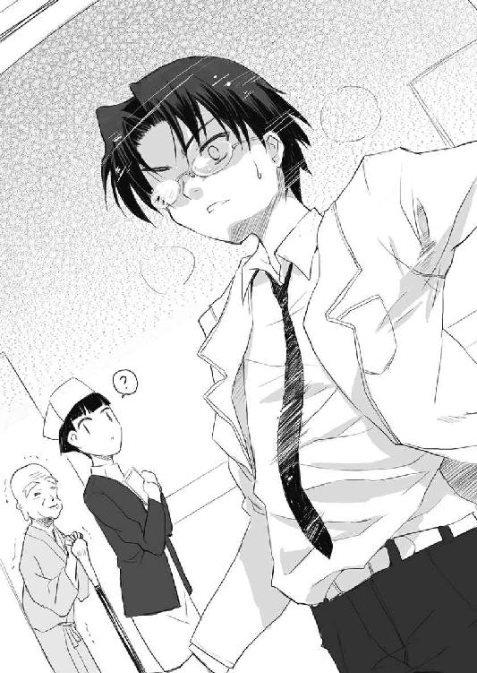
そして母も私の状況を理解したようだった。しかし自分のことなのに随分と朗らかに言ってのけるものだなと感じる。
逆に言えば、それを冗談のように言えるくらいは元気ということだとは思うが、やはり入院してる人間の言うことではないのではないだろうか？
「......そのようなものです」
それでも私は反論はしなかった。
「もし私が本当に大変だったら狭霧ちゃんだってここにいるでしょう？」
「......そのとおりですね」
母の言い分は実に正しい。狭霧が私を捜し回っていたところで聞いたのならともかく、彼女はのんきにアルバイトをしていたのだ。その状況だけで狭霧の言葉を疑うには十分な証拠だったはずなのに、私はそれに少しも気づかなかった。
「本当、刻くんはそそっかしいんだから」
だから母がそう言って笑っても私には反論など出来なかった。
「そのとおりですね」
私は母の「刻くん」という呼び方の方が気になっていた。母は小さな頃からずっと私のことをそう呼んでいる。いい加減私もそんな呼び方は照れくさいのだが、そのことを今言っても余計に笑われることになるだろう。この状況は困ったものだが、さっきまでは母の安否を気遣っていたことに比べれば随分と平和な悩みに感じられる。
「でも嬉しいわ──」
不意に母が少し真面目な顔つきになり、また口を開いた。
「理由はどうあれ、こうして刻くんに会えたのだもの」
それは母にとっては正直な気持ちの表れでしかなかったのかもしれない。それを証拠に母の顔はまた笑みに変わっていた。
でも私には自分を責めてる言葉にも聞こえた。聞こえてしまった。
「......申し訳ありません」
だから私は謝罪の言葉を口にした。
「もう。刻くんは本当、真面目なのね」
母はそんな私すらもおかしいという顔をする。
「会えない状況を作ってるのは私の方ですから」
それでも自分が悪いのは自分でもわかっていた。
父とケンカして家を出てたりしなければ、こうして母の入院を妹の言葉から知って慌てるようなことはなかったのだから。
「......刻くんはずっとそう思っていたのね」
しかし母は私とは意見を異にするようだった。静かにそう答えると、ちょっと視線を逸らすのが見えた。
その先にあったのはカゴに入った果物。誰かが持ってきた見舞いの品だろう。
「刻くん、今日は少しは時間があるの？」
母はカゴから視線を戻すと私にそう尋ねてきた。
「今日は......比較的、余裕がありますが」
バイトの日ではない。とすれば少々時間をロスしても睡眠時間が減るだけのことだ。そう私は心の中で計算する。
「じゃあ、とりあえず座って」
母がそう言って椅子を指さす。
「は、はい」
そう言えばさっきからずっと立ち話をしていたなと気づく。私は言われた通り、椅子に座り、それから改めて部屋を見回した。
本当に一年前と同じ部屋のように思えた。手入れの行き届いた白く清潔な病室は生活感がなく、違いを見つけることは出来なかった。
そのせいだろう。私は一年前に迷い込んだような不思議な感覚に陥る。
「りんごでいい、刻くん？」
それを引き戻したのは母の言葉だった。それで母を見るとやはり去年とは比べものにならないほど元気そうなのに気づかされる。
「......はい」
私は母の質問の意図に気づかないまま返事をしていた。そのせいで実際に母がりんごを手に取るまで何を聞かれたのかわからずにいた。
「りんごを剥くのでしたら私が」
やっと状況を理解した私は腰を浮かせて、慌てて果物ナイフを取りに行く。
「いいのよ、刻くんは座っていれば」
そんな私を母は残念そうな顔をして見ていた。だが私としてはその言葉通りにするわけにはいかない。
「いえ。私にさせてください」
「そう？」
母は一度りんごを見つめて、それから私の持っている果物ナイフへと視線を移した。
りんごはこの部屋にいくつかあるが、果物ナイフは一つしかない。となれば母が意地を張ったところで私は別のりんごを取ればいいだけのことだった。
それがわかったのか母は名残惜しそうに私にりんごを手渡す。
「はい、刻くん」
「ご理解いただけて何よりです」
それから私は小さな白いまな板を見つけて、それを手に椅子に戻るとまずはりんごを半分に割るところから始めた。それをさらに半分にして、その片割れを手に取って芯を外すために果物ナイフを実に差し込む。
一年前はこんなことすらできなかった。一人暮らしをするまでは包丁なんてろくに握ったことはなかった。りんごを剥けと言われたら、随分と身を細らせてしまったはずだ。
「......うむ」
だが今の私にはそれは決して難しいことではなかった。どころか果物ナイフがかなり良い物らしく、まるで皮だけをはがすかのように綺麗に剥くことが出来た。
「刻くん、とても上手なのね」
母は皮の剥けたりんごを受け取ると感心した様子を見せた。
「りんごくらい誰でも剥けます」
私はそう言いながら二つ目のりんごを剥きにかかる。
「剥くだけなら誰にでも出来るでしょうけど、こんなに綺麗にはなかなか出来ないのではないかしら？」
「狭霧ならもっと上手に剥くと思いますが」
私は母の言葉よりも手先に集中していたかもしれない。だからそんな風に思ったことをそのまま口にしてしまった。
「そうねえ。狭霧ちゃんは何をさせてもそつないから、そうなんでしょうね」
母の言葉には少し悲しみの色が感じられた。だから私は手を止めて母の方を見た。
「狭霧はこうしてりんごを剥くようなことはないのですか？」
「狭霧ちゃんは気が利く娘だから」
母は私の質問に不可解な返答をしてきた。
「......意味がわかりかねます」
なので素直にそのことを口にしたのだが、母はそれに優しい笑みを浮かべるだけだった。
「いいのよ、刻くんはそれで」
「そうは言われても私の理解が深まるわけではないのですが」
私はそう言いながらも、とりあえずりんごに集中した。皮を途中まで剥いてる状態で話を続けるのはどうにも落ち着かない。
「そんなに心配しなくても大丈夫なのよ？」
そのせいなのか母は話題を変えたようだった。
「......心配ですか？」
私はまた一つ皮を剥き終えたところで、その話題に反応する。
「今回だって経過を確認するための検査入院なのだから」
「そうだったのですか」
母の言葉が本当だとすれば、母は去年どころか今までで一番、平穏に冬を迎えようとしてるのかもしれない。
「それにもう全快はしないとは言われてるけど、注意してればこれ以上悪くなるようなこともないとも言われてるのよ」
母はそう言いながら、剥き終えたりんごを私に食べるように手で合図を送ってきた。
「......そうなのですか」
「刻くんは八雲の家の女性が早くに死んできたことで私を心配してるかもしれないけど、もう時代が違うの」
「時代が違うとはどういう意味でしょうか？」
「八雲の家に伝わる病を秘密にする必要はもうないというのが一つ」
「秘密に？」
それは私にとっては意外な言葉だった。
「もう一つは医学は日々進歩してるということ」
だが母は私の新たな疑問には答えず、先に最初の質問の答えを口にした。
「それはもう母さんの病気は治せないものではないということですか？」
だから私は先にわかった方の確認をすることにする。
「ええ。私の場合は治療が遅かったから、もう完全に治ることはないけれど、これから同じ症状が出た人がいればその時はほとんど問題にはならないそうよ」
「そうなのですか」
私はそう言いながら、それがどれほどの意味があるのだろうかと考えてしまった。
少なくとも母に関しては処置が遅れて、もう昔のように元気にはなれないと言ってることのように思える。
「だからそんなに大事にしてくれなくても壊れたりしないのよ？」
だが母の言いたいことはそんなことではなかったらしい。
「それは私が余計なことをしたということでしょうか？」
先の狭霧に対する評価からすると、母は私を気の利かない人間だと考えているということらしいのがわかってきた。
「......そうなってしまうのかしらね」
母は私の言い分に少し考えるような顔をしてそう答える。
「申し訳ありません」
「うーん。別に刻くんを責めたいわけではなかったのよ？ さっき私はりんごを剥いてあげたかっただけで」
「しかし私はそれに気づかず、自分で剥くことにしてしまったのですから、責められても仕方がありません」
「だから責めてるわけではないと言ってるのに」
母はそう言って困ったという表情をする。それで私はまたもや余計なことをしてるのに気づいた。
「申し訳ありません。久々に会ったというのに、余計な心配をかけるようなことばかりで」
「いいのよ──」
なのに母はそんな私の様子が嬉しいという様子を見せる。
「私はそんな刻くんが好きなんだから」
「......理解しかねます」
しかし私には母のそんな気持ちに共感することは出来なかった。
「こういう言い方をすると刻くんは怒るかもしれないけど、やっぱり一くんの子供なんだなと感じるの」
「......そうなのですか」
一くんというのは父のことだ。母は私が父に似てるから好ましく感じてるということなのだろうということはわかった。
しかし母が自分でも理解してるように、あまり私には受け入れがたい意見だった。
「男の人は誠実な方が好きと言った方がいいかしらね」
「その方が抵抗がないかもしれません」
しかしそれも比較の話であって、どうにも据わりが悪く感じられてしまう。
「だから私の意志は関係なく、自分で剥いてしまう刻くんでもいいの」
「しかしそれは母さんが剥く方が好ましかったということではないのですか？」
でもいいというのは、より良い候補があるという意味だろうと私は感じる。
「どうかしらね？」
だが母にとってはそうではないらしい。
「そうではないのですか？」
ではどうなってるのが一番良かったのだろうか？ 私はそれを考えてしまう。
「自分の思い通りになることが最高というわけではないでしょう？」
しかし母の答えは望んでいたものとはちょっと違っていた。
「......そうかもしれませんが」
「私はりんごを剥きたかったかもしれない。でもそうしていたら、刻くんが剥いてくれたりんごを食べることはできなかったし、刻くんとこんな話題をすることもなかったでしょう？」
「それはそうかもしれませんが」
しかしだったら、なんで母は自分がりんごを剥きたかったなどという話をしたのだろうかとも考えてしまう。
「矛盾してるわよね」
そしてその辺りは母も自覚があるらしい。
「そのように感じられますが」
「でも矛盾してないことなどあるのかしら？」
そして母は矛盾してること自体は特に問題とは思っていないらしい。
「......まあ、そうかもしれませんが」
現実には何事にもなにかしらの矛盾はあるものかもしれない。
だが、ここまではっきりとした矛盾を看過してよいものかと言われると私としては素直には受け入れられなかった。
「刻くんも狭霧ちゃんも手がかからないで助かるの」
「......はあ」
「それを嬉しく思う反面、寂しくも思うということ。世話のかかる子ほど可愛いなんて言葉もあるでしょう？」
「......そうですね」
「世話がかかるというのは本来いい意味ではないけど、それが可愛いのだから」
「それもまた矛盾の例ですか」
「そうね」
母は私の言葉を受けて満足そうに笑う。
「確かにそういうものかもしれません」
しかし私の方はなんだか煙に巻かれた気分だった。
「残りのりんごは私が剥きましょうか？」
そして母の話は一周して元に戻ったようだった。
「母さんがそうしたいのであれば」
この流れでそう言われては私も自分で剥くと意地を張る気にはなれなかった。
「刻くんはどうしたいの？」
だが母はそう尋ねてくる。母は私の性格を知ってるようで知らないのではないかと感じてしまう。私がそう言われたらどう答えるかはわかっていそうなものなのだが。
「正直言えば、自分で剥きたいです」
だから私は素直な気持ちを口にする。
「じゃあ刻くんが剥いて」
なのに母はそれを嬉しそうな顔をして受け止める。
「......わかりました」
半分は私が剥いたから、今度は自分がという話ではなかったのだろうか？ そう考えながら、私は残りの二切れの皮も剥いていく。
「............」
その間、母は何も話しかけて来なかった。そのせいか病室の静かさに気づかされる。
この階は比較的大きな病室ばかりで、ロビーのような雑然さとは無縁の世界らしい。同じビルのことなのに、この違いはかなりのものだななどとも考えてしまう。
「どうぞ」
その静かさをいいことに私は二切れとも剥き、それが終わったところでそのうちの一切れを母に渡した。
「ありがとう。刻くん」
そして母は受け取ったりんごをじっと見つめる。
「いえ」
それがなんだか私は出来を確認されてるようでひどく照れくさかった。
「刻くんは料理も得意になったの？」
母は黙ってる間、そんなことを考えていたらしい。
「料理ですか？ 自分で食べられるくらいの出来で良いなら作れますが」
「そう。なら平気なのね」
「何がでしょうか？」
「刻くんは自炊してるのでしょう？ それとも買って済ませてるのかしら？」
「今は同じマンションに住んでる友人に作ってもらうことが多いです」
「そうなの？」
母はかなり意外という顔をした。
「何かおかしいですか？」
「刻くんは上手な人が側にいても自分で作ると思っていたから」
「......そこまで意地っ張りのつもりはないのですが」
しかしそう言われても仕方のない人間だという自覚はあった。今さっきも母が剥きたいりんごを自分で剥いてしまったばかりなのだから。
「でも時々は自分で作ってるのよね？」
だから母は私の言葉を素直には信じてくれなかったようだ。
「......いえ。料理に関してはその友人たちに任せています」
「友人たち？」
母はその言葉に何か思うところがあったらしい。
「一人ではないのです」
「そういうことなのね」
そして母はそれで納得がいったらしく小さくうなずいた。
「どういうことですか？」
「お友達が一人なら何回かに一回くらいは刻くんが作るんじゃないかと思っていたのよ」
「でも一人じゃないなら作らなくても不思議ではないと？」
実際にそうしてるのだから、そこに不思議はないのかもしれないが、それを母が理解したのが私には理解できなかった。
「みんなで食べるなら美味しい方がいいもの」
「......よくわからないのですが」
母の言葉自体には特に異論はないが、どうしてそれが私が料理をしないということにつながるのかはわからない。
「きっと四人くらいいるのよね」
「......そうですね」
「それだけいればお互いが得意なことを担当した方がいいわよね」
母の言葉は私の疑問の答えにはなっていなかったが、確かにその通りだったのだろうなと私は感じた。
有馬くんが来た辺りから、私は自分で料理をするということに全くと言ってこだわりを感じなくなっていた。
「刻くんもどんどん大人になっていくのね」
そして料理の話のはずだったのに、母はそんなことを言い始める。
「......どういう意味でしょうか？」
「心配してたけど、そんなことはなかったということよ」
「......心配ですか」
「刻くんは人に頼るのが苦手みたいだから、一人で頑張りすぎてるのじゃないかと思っていたのだけど......いいお友達に出会えたみたいね」
「そうですね。私には過ぎた友人だと思っています」
「そういうところがね......大人になったなと感じるということなのよ」
母はそう言って今度は何故か悲しそうな顔をした。
「大人になっていない方が良かったのでしょうか？」
だから私はそんなことを聞きたくなってしまう。
「そこも矛盾してるのよ」
母は自分の考えが顔に出ているのにちょっと驚いた様子を見せた。
「また矛盾ですか」
「そう、矛盾なの。大人になっていくのは嬉しいけど、それは私が必要なくなるということでもあるでしょう？」
「それが寂しいということでしょうか？」
「そうね。刻くん、正直を言うとね」
そして母は真剣な顔で私の方を改めて見る。
「はい。なんでしょうか？」
「刻くんが音を上げて家に帰って来てくれないかと思っていたの」
「......それは申し訳ありません」
実際、そうした方が良いのだろうなと思うことはけっこうあった。今日だってこうして母が予想以上に元気だから良いが、去年のように本格的に調子を崩してる可能性は十分にあったのだ。狭霧の言葉は嘘から本当に変わることだって十分にあり得るのだ。
「でもこうして話してみて、それは私のわがままだったと感じたわ」
でも母は私とは逆のことを考えたらしい。
「そうなのでしょうか？」
「可愛い子には旅をさせよ──ということなのでしょうね」
「旅、ですか」
親元を離れて暮らすというのは確かに旅にも似たことなのかもしれない。
「辛い旅だった？」
そして母もそのたとえが気に入ったらしい。
「いえ。少しも辛いと思ったことはありません。自分が望んだ旅ですから」
「そう。刻くんは強いのね」
母はそう言って口を横に伸ばすように笑う。なのに母が素直に喜んでいるようには見えなかった。これも矛盾してるというヤツなのだろうか。
「りんご、もう少し剥きましょうか？」
でも私はそれに気づかない振りをして、母を見て、すでにりんごを食べ終わってる方を話題にした。
「ねえ、刻くん？」
なのに母は少し意地悪そうな笑顔を浮かべた。
「なんでしょうか？」
私はその表情の意味がわからず、少し構えてしまう。
「今度は私に剥かせてくれないかしら？」
でも母の提案は驚くほどのものではなかった。
「かまいませんが」
「かまいませんが？」
「いえ。先ほどは自分で剥きたそうなことを言いながら、私に剥くように言ったではありませんか」
「そうね」
「だから今度も何かそういうことなのかと思ったのです」
それに先ほどの表情の意味も気になっていた。何か私の驚くようなことを言い出すのかと思っていたのだ。
「私も少しは母親らしいことをしたいのよ」
そしてその私の予想は油断した頃に実現したようだった。
「そんなことは十分にしてもらっていると考えていますが」
「そう？」
「私のわがままを許してくれているだけでも十分以上です」
そしてそれが素直な自分の気持ちだった。
父とケンカをして家を出ている自分を見守ってくれてる。それだけで私には十分だった。
「刻くんはそう思ってたのね」
でもその言葉を母はあまり快く思わなかったらしいことがその言葉や表情からわかる。
「私は何か間違ったことを言いましたか？」
だから私はその理由を求めて問いを発する。
「いいのよ、刻くんはそれで」
しかし母の答えはちょっと前に言ったのと同じものだった。それは狭霧とは違うことをする自分を許すということなのだろうか。
「理解しかねます」
「完全に正しいことなんてないの。それに正しさというのは時と共に変わるものでしょう？ 刻くんの旅にしても刻くんが納得してるから、それを見守ったのが正しいということになっただけで、そうでなかったかもしれないわ」
「そうかもしれませんが、母さんを悲しませたように感じました。それをそれでもいいと言われてしまうと戸惑うしかありません」
「私のわがままなのよ。刻くんが立派だから、ちょっとがっかりしたの」
「立派だから、ですか」
「立派すぎるからの方が正確かしらね」
「過ぎたるは及ばざるがごとし──ですか」
具体的に私のどこが立派なのかはわからないが、母の言わんとすることはわかる気がした。
母は私がもっと子供っぽい泣き言を言うのを期待してたのだろう。そして狭霧であればきっとそれを察して、その通りに出来たのだろうとも私は感じる。
「もう少し母親らしいことをさせてはくれてもいいのではないかしら？と思ったの。でも自業自得よね」
「そのようには思ってませんが」
原因は母の方ではなく、私の方にあるのだろうと思う。だが母は自分が悪いと思ってるらしい。この辺りは親子なのかもしれない。
逆に父は自分が悪いとは言わない人間だった。心の底までそうかはわからないが、表に出てくる父は常にそうだ。
「でも本当、こうして刻くんとお話できるなら入院も悪くないかもしれないわね」
私が父のことを考えてる間に母はとんでもない考えに至ったらしい。
「冗談でもそのようなことを言うのは感心できません」
それにそんなことを本気で考えて実行するような人なら私は見舞いになど来ないだろうとも感じる。
「でも家で静養してると刻くんは会いには来てくれないでしょう？」
「それはそうですが......別に母さんと話したくないということではありません」
「だから入院も悪くないと言ったの。病院なら一くんのことを気にせず、刻くんが来られるでしょう？」
「......それはそうですが」
私はそんなことを明るく話す母の気持ちがわからなかった。
病院なら気にせず来れるということにしたって、それは父が決して見舞いに来ないというのが理由なのだ。それを父が明言したわけではないが、私は経験としてそれを知っていた。
なのに母はだから私が来れるということを歓迎してるかのようだ。
「一くんのことを恨んでいるの？」
そしてそんな考えが私の顔に出ていたらしい。母はずばりとそのことを尋ねてきた。
「恨んでいるというわけではありません。ただ、相容れないと感じてるのです」
私は母の疑問を否定しつつも、結局、また母の望む返事は出来なかった。
「そうね。でもそれもやはり私が原因なの。一くんは真面目だから、私の望んだ通りにしてくれてるだけなのよ」
「......理解しかねます」
母が私が考えた通り、見舞いに来ないことを言ってるのであれば、母が見舞いに来ないように望んだということなのだろうか？ 私にはそんなことを望む理由は少しも浮かばない。
「刻くんがもう少し大人になったらわかるかもしれないわ」
しかし母は自分がさっき言ったことを否定するようなことを言い始める。
私がまだ子供だからわからない。そういうことであるらしい。
「......そうですか」
そうであるなら私としてはその言葉をそのまま受け止めるしかなかった。
「でも寂しくなったら、いつでも帰ってきていいのよ」
そして母はおそらくはずっと言いたかっただろうことをやっと口にした。
「気持ちはありがたいですが、それは出来ません」
「気持ちはわかるけど、でも刻くんの家はやっぱり今住んでるところではないの。私や一くん、狭霧ちゃんがいるあの家がそうなのよ」
「わかっています──」
母の言葉は本当に私の現状を理解してるかのように感じられた。
あのマンションの十三階はあくまで仮初めの住まいでしかない。それは最初からわかっていた。私はそんなに遠くない未来にあそこを出て、家に帰ることになる。それを最近はリアルに感じるようになっていた。
「でもやはり今はまだ帰れないのです」
その時が来たのなら──それを時々考える。
嫌でも私は家に帰らねばならない。だが、それがわかってる以上、私としても嫌なまま帰る気はなかった。
あの十三階から出て行かねばならないことはわかってる。だからこそ私は考えてしまう。
どうしたら、あの場所に納得して別れを告げられるのか？──と。
「私は待ってればいいの？」
そして母はそのことすらわかってくれてるかのようだった。私はそんな母に敬意を抱かずにはいられなかった。自分のことをわかってくれてると感じたからではない。
誰でもないこうして入院してる人間の言葉だからだ。去年、母は一度死にかけてる。今年は無事だったけれど、来年も無事かはわからない。そんな人がただ息子を信じて待つと言ってくれたのだ。
私のことをどうでもいいと思ってるわけではない。帰ってきて欲しいと思ってるのだ。
なのに母は「待ってる」ことを選んでくれた。
「それで十分以上です」
どうしてそれ以上を私が求められるだろうか。
「そう言うのね、やっぱり」
「......はい」
申し訳ないという気持ちはあった。でもこのわがままだけは通さなければいけなかった。
だからそれを受け止めてくれる母がありがたかった。
「あら、刻也くん？」
そんなところにもう一人、見舞客がやってきた。
「......美佐枝さん」
それは有馬君の母だった。私の母と美佐枝さんとは病院で出会った仲であるらしい。
「よかったですね」
だからなのだろう。私の存在を確認しても、母の方に話しかけた。
「はい。狭霧ちゃんが捕まえてくれたみたいで」
「あら、そうなんですか」
その話題は私のことであるらしい。
「こんばんは、刻也くん」
そしてそのことに気づいたらしく、美佐枝さんは私の方へと話かけてきた。
「こんばんは」
「私も刻也くんのことは探していたのよ。でも狭霧ちゃんに先を越されてしまったみたいね」
「それもあまり正確ではなくて、私がたまたま狭霧のバイト先に顔を出しまして、そこで話を聞いたのです」
「ということは刻也くんが見つけたのが一番最初なのね」
「それもどうかと思いますが」
そんな話をしてる間に、私は美佐枝さんがどうしてここにいるのかと考えてしまった。
母の見舞いに来てくれたというのはわかるが、それだけのためにここに来るものだろうか？ 他に何か、有馬君絡みのことでもあったのかと心配してしまったのだ。
「ちなみに今日は仕事の前に桔梗さんの顔を見に来ただけよ」
そんな私の考えが顔に出ていたのか、美佐枝さんは私の不安を打ち消すようなことを言う。
「そうそう、さっきのりんごは美佐枝さんが持ってきてくださったのよ」
そして母は美佐枝さんの会話の意味に気づかなかったらしい。
「それはありがとうございました。先ほど、母と美味しく食べさせていただきました」
だから私は母の言葉に乗って、美佐枝さんにお礼の言葉を告げる。
「いえいえ。桔梗さんにとってはりんごより、刻也くんが剥いてくれた方が嬉しかったと思うわ」
「いえ。とても美味しいりんごでした。それに、この間もお世話になりました。おかげで助かりました」
私は敢えてなんの話かは明言はしなかった。美佐枝さんならそれだけで通じるとわかっていたし、母の前で言うようなこととも思えなかった。
「あんなことならお安いご用よ。というか私の知らない間に解決してたみたいだけど」
そして美佐枝さんにはわかったようだった。綾さんのために大きなテレビを買う協力をしてくれた件であることが。
「......そうかもしれません。すみません。その時にお礼を言うべきでした」
「いえいえ。私がいても何すればいいのかよくわからなかったし、知らない間に解決してくれたみたいでホッとしてたくらいだから」
美佐枝さんはそう言って笑ったが、それがどこまで本当のことかは私にはわからなかった。こっちに余計な心配をかけまいと振る舞ってるのだろうくらいはわかったが。
「なんの話なの？」
しかし母がその話題に興味を持ってしまった。
「詳しくは知らないんですけど、刻也くんは年上でお金持ちの女性と一緒に暮らしてるんですって」
そして美佐枝さんは今度は誤魔化そうとはしなかった。さっきの話題に戻るよりはずっとマシだが、少々不穏当な気もする。
「あら、そうなの？」
そして母はそれを真に受けてしまった。
「そういうわけではありません。一緒のマンションに暮らしてる、少々だらしない女性のために力を貸しただけです」
なのでハッキリと否定しておくことにする。
「でも、一緒のマンションに暮らしてるってだけで、そこまでしてあげるもの？」
なのに美佐枝さんはまだこの話題を引っ張るつもりらしい。
「必要ならそういうこともあると思いますが」
「それはそうなんだけども......すごい綺麗な娘だったから」
私はその言葉に、綾さんにちゃんとした格好をさせたことが間違いだったと気づかされた。普段通り......でもまずいが、あまり注目を浴びないようにするべきだった。
「美佐枝さんは、その娘に会ったの？」
そして不安的中とでも言うべきか、母もその話に再び食いついてきてしまった。
「ええ。かなり若い娘だったわね。と言っても刻也くんよりはちょっと上でしょうけど」
「あらあら」
母はそれが面白いのかニコニコとした顔でこっちを見る。
「ですから一緒のマンションで暮らしてる少々だらしない女性というだけです」
それがどういう意味かはわからないが否定しておいた方が良さそうだなと感じずにはいられない状況だった。
「でも困ってたら力を貸してあげたいと思うくらいは仲がいいのよね？」
なのに美佐枝さんはさらに煽るようなことを言う。普段は大人なのに、この手の話題では歯止めが利かない人なのだろうか。
「それは事実ですが......それ以上でもそれ以下でもありませんから」
「そうなの？ 痩せてるのに胸は大きいし、男の子だったらかなりほっとけない感じに見えたけどな」
「......ですから」
「それともあの娘には別に付き合ってる人がいるのかしら？」
「付き合ってると言えるような人はいませんが......」
「じゃあフリーなの？」
「好きな人はいるのです。そしてそれは私ではありません！ ですから私とあの人はなんでもないのです」
「なんだか横恋慕してるみたいにも聞こえるわね」
「ですからですね......」
美佐枝さんはなんとしても私と綾さんがいい関係であることにしたいらしい。何を言ってもそういうことにされそうだと思い、不安を抱えたまま母の方を見る。
「違うわよね、刻くん？」
でも母はニコニコとしたまま、さっきまでの話が無意味だと断じてみせた。
「......はい」
私にとってはありがたい援軍の登場だったが、美佐枝さんにとっては少々、驚きの展開だったようだ。
「でも、本当に仲良さそうでしたよ？」
なので反論を始めた。
「刻くんが言った通り、困ってるから助けただけだと思いますよ──」
でも母はそれに耳を貸すつもりはなかったらしい。よほどの確信があるのだろう。
「だって、刻くんには鈴璃ちゃんがいるもの」
そして母はその確信の理由を口にする。
「......そうですね」
母の言ってることには何一つ間違いはないが正面からハッキリと言われると肯定しづらいものを感じてしまう。
「鈴璃ちゃんというのは？」
そして美佐枝さんの興味はそちらに移ったらしい。
「九条さんのところの娘さんで、刻くんは小四の頃からずっと付き合ってるの」
母はそのことをむしろ誇らしげに語り出した。私としてはかなり恥ずかしいことなのだが、そういうことには理解を示してはくれないようだ。
「小四から？ 随分とおませなのね、刻也くんは」
「冴子ちゃんだって初恋はその頃みたいな話を聞きましたけど？」
「初恋と本当に付き合うというのにはかなり差があるわよ？」
「それは、そうね」
「そう言えば、桔梗さんの初恋はいつ頃だった？」
「私は、そういうのとは縁がありませんでしたから。これでも箱入り娘でしたから」
「......そう言えばそんな話も聞いた気が」
「そういう美佐枝さんはどうでしたの？」
「私はいつだったかしら？ あれは確か──」
そして二人はすっかり私のことなど忘れて盛り上がる。だから私はどうしたものだろうと思いながらも、しばらく様子を見るしかなくなってしまった。
○
結局、まだ三日ほど入院してるから、もう一度くらい来るようにと言い渡された。
「元気そうでホッとした？」
そして面会時間が終了してしまったので、途中まで美佐枝さんと一緒に帰ることになる。と言っても美佐枝さんはこれから仕事なので、本当に途中までなのだが。
「ホッとしました。狭霧にはかなり悪いと騙されましたから」
「それで慌ててやってきたら、元気で拍子抜けしてしまったわけね？」
「......そうなります」
美佐枝さんは黙ってると若いのに色気のある大人の女性に見える。そして中身もそれに見合ったものと感じる時もあるのだが、どこか子供っぽいと感じるところもあった。
特に恋愛関係の話に関しては、クラスの女子も驚くくらいの興味を示すようだ。
「最近、冴子は元気？」
でも有馬君のことを話す時だけは別人のようになる。それを人は母親の顔と呼ぶのかもしれない。だがそれにしてはどこか痛みを抱えたような表情だと私は感じてしまう。
「以前よりはかなり元気そうです」
だから私には美佐枝さんの望まない返事をすることは出来そうになかった。今日は幸運にも本当のことを言えば済むことだったが、この先もそうである保証はない。
「なら、いいのよ」
美佐枝さんはそう言いながら、やはり母親の顔のままだった。
口ではそれでいいと言いながらも、その実、何か肯定しづらいものを感じてる。その何かというのがどういったものかはわからないが、それが美佐枝さんの表情の理由であろうことは疑いはなかった。
「アルバイトを始めてから、本当に元気になりました」
だから私はその理由を尋ねることは出来なかった。
聞いて欲しいと美佐枝さんが思ってるとは感じられなかったし、何より、私は人の相談に乗るのが苦手だった。
そういう言い方で人の相談に乗らないようにするのは卑怯なことかもしれない。だが、それは技術が拙いとかそういうことではないのだ。
大事なことに限って私に相談するとろくな結果にならない。常識的に考えて正しい助言を送っても、およそあり得ないことが起こって悪い方向に転んでしまうのだ。
それをただの偶然と斬って捨てることは出来るかもしれない。自分のことであればそれもいいだろうとも思う。
だが相談というのは他人の人生に介入することだ。それを悪い方向に曲げておいて、偶然だと思って済ますことは私には出来なかった。
「冴子がアルバイトをね」
だがそんなことは誰に言っても共感してもらえないことを私は小学生のうちに理解していた。だから美佐枝さんに話したことはなかった。
「そうそう、狭霧も同じところでアルバイトをしているのです」
だから私はもっと無難な話を続ける。そのおかげで美佐枝さんは普段の顔に戻った。
「あら？」
「私もそのことを知ったのは今日のことだったんですが」
「それじゃ桔梗さんのことはそこで？」
「はい」
しかしあまり無難な話ではなかったようだと私はその時になって気づいた。
「......考えてみれば、冴子に伝言を頼めば良かったのよね」
美佐枝さんの言葉は、有馬君の家庭が普通の状況ならもっともなことだっただろう。だがそれを美佐枝さんがさっきまで気づかなかったことからわかるとおり、あまり現実的な提案ではなかったのだ。
「それはそうですが、こちらの家の話ですから」
だから私はそれだけ答えた。
「そうね。刻也くんの家の話だものね」
そのせいで美佐枝さんはまた母親の顔に戻ってしまった。
だから私にはわかってしまった。美佐枝さんは口では私の家の話だと言ったが、心の中では自分の家のことを考えてるのだと。
「............」
「............」
そのせいで美佐枝さんとの話はもう続かなかった。
「......それじゃ私は仕事があるから、この辺で失礼するわね」
やっと口を開いたのはバス停の前まで来てからのことだった。それも美佐枝さんの方から。
私は何も言えなかった。何か適当な話題が浮かばなかった。
「それでは、また」
私はそのことを申し訳なく感じていたが、美佐枝さんは明るく微笑んでくれた。
○
バス停の前で別れたというのに、私は徒歩でマンションへと帰ることにした。
理由ははっきりとはしない。考え事をして帰りたいという気分だった気がする。こういう時はバスや電車に乗るべきではないと私は経験的に知っていた。
気づくと時間が経っていて見知らぬ場所で降りる羽目になるからだ。
「やはり尋ねるべきだったのだろうか？」
美佐枝さんがそれを望んでいなかったことに関しては疑いがなかった。そうであって欲しいからそう思いこもうとしてるわけではない。
ならば何を迷う必要があるとも感じる。だが今日の母との会話が私に迷いを与えていた。
望む通りにしてあげることが必ずしも良いことではないのかもしれない──そんな迷いだ。
美佐枝さんは嫌かもしれないが、それを知ることで私の出来ることが増えるのは確かなことだった。その中に美佐枝さんや有馬君を助けるための選択肢があるのかは定かではないが、知らない状況ではないのも確かだ。
今のままでは可能性はない。だからと言って可能性に賭けて、美佐枝さんの望まぬ問いを私がしていいことになるのだろうか？──それに是と答えられるほど、私は自分の行動に自信を持てなかった。
それはやはり、以前の有馬君のことを思い出すからだ。
あの時、彼女の目に映っていた絶望の色。それがもうどこかに消えてしまったというなら、私にも何か出来ることはあるのかもしれない。
だが、私にはそうは思えなかった。ただその上に別の色が乗っただけのようなそんな気持ちがどうしてもぬぐえない。
有馬君と話してる限りではそんなことはないんじゃないかと思える。でもそれならどうして美佐枝さんはいつまでも例の母親の顔を見せるのだろうか。
有馬君はあの絶望の色を隠せるようになった。それだけなのではないだろうか？ その疑いがどうしても消えない。
「あの時、一体何があったというのだろうな？」
有馬君を最初に見かけた時は、彼女はただの一人の病人だった。
母の見舞いのために頻繁に病院にやってきた時、時折、見かける名も知らぬ少女だった。だから真剣に観察などしてなかっただけかもしれないとも思う。
でも、それでもあの時とその前では彼女は明らかに変わったということに疑いはなかった。
どこか体が悪いに違いない、青白くやせ細っていた有馬君は、決して明るくはなかった。だがそれでもその目には希望のようなものが見えた。
今は病気であっても、元気になろうという意志が感じられた。その時の有馬君はいつも美佐枝さんの側にいたように思う。
でもあの時、私が見かけた有馬君は美佐枝さんの側にはいなかった。そして目に宿っていた命の炎が完全に消え去っていた。
体調はむしろ回復していたはずだった。最初に見かけた時よりはずっと元気になってるはずだった。
なのに、目だけはすっかり死んでしまっていた。何があったらそんなことになるのか？ 私には未だにその理由がわからなかった。
ただ、そこに有馬君と美佐枝さんの溝があるのだろうことはわかる。そしてそれが有馬君の病状とは関係ないことも。
看護師たちの態度から見て、有馬君はかなり絶望的な病状だったようだ。でもそれは関係ないのだろうと思う。
有馬君の目に絶望の色が宿ったのは、回復を見せ始めてからのことだったのだから。
「......一体、美佐枝さんは何をしてしまったのだろうか」
有馬君がそこまで傷つくことを私は想像することはできなかった。
彼女は私よりもずっと大人だ。見た目だけでなく、その言動も。
だがそれは私にとってというだけなのかもしれない。美佐枝さんが有馬君のことに関してだけ、あの顔を浮かべるように、有馬君にとって美佐枝さんだけが特別な存在なのかもしれない。
そんな特別な存在だからこそ、有馬君をあそこまで傷つけることができたのかもしれない。
「だとすれば、本当に私の出る幕ではないのだがな」
有馬君と美佐枝さんの二人の問題なのだ。それはわかっている。
でも、それでも私は運命を感じずにはいられなかった。
あの病弱な少女がクラスメイトとして現れた時にもそれを少し感じた。私はあの高校に入る予定ではなかったし、有馬君だってそうだったはずだ。有馬君は病気を機に比良井の方に引っ越してきたという話だった。
本来出会うべきではない二人があの学校で出会ったのだ。だが、言ってしまえばそれだけの話でもあった。そんなことは他にも探せば見つかるだろう。
だが、あの十三階で会うことになった時は、それをただの偶然と思うことは出来なかった。
だから私はどうしても考えてしまう。
有馬君には幸せになって欲しい──と。
そのために何か私に出来ることはないのか──と。
「だがやはり私の勝手な思いこみなのだろうな」
しかし何度考えても結論は同じだった。
有馬君も美佐枝さんも私の介入を望んでいない。それ故に私は何も出来ないのだ。
私が有馬君のために出来たことなど、歓迎会を開くくらいのことだった。それにしたって絹川君と一緒という言い訳がなければ出来なかったことだろう。絹川君の料理の技量がなければ出来なかったことだろう。
だから私はただ期待することしか出来ない。私は相談が苦手で、有馬君は私に相談を持ちかけてくれることなどないのだから。
「......やはり私は薄情な男だな」
結局は人任せでしかないのだ。そうした方が良いことがわかってる。自分が介入すべきではないこともわかってる。
だが、そうだとしても何かしたいというのが人間というものではないのだろうか？
母が言ったように矛盾してるのが人間ではないのだろうか？
だが私はそうした方がいいからとそうしている。絹川君や古西さんが有馬君を良い方向に変えてくれると期待してるだけだ。
「つまりは有馬君にとって、私などいてもいなくても一緒と言うことだ」
私はそう結論したが、それを悲しくは感じなかった。それは前からずっとわかりきっていたことだったからだ。
今日、母や美佐枝さんと話したけれど、その結論は何も変わらなかったのだ。
「ならば私はこのまま、ずっと管理人さんとやらでいればいいということなのだな」
そして思いを改めた時、いつのまにか私はマンションの前まで着いていた。
○
「ただいま」
私は中に誰かいることも確認せず、そう呟いていた。
自分の部屋に寄らず、そのまま１３０１に顔を出したのは考えてみると珍しいことだったかもしれない。予定外の寄り道をしたせいで私は普段通りに行動できなくなっていたのだろう。
「おかえりなさい、八雲さん」
だが私はやはり運命というものを感じてしまった。そこには有馬君だけがいたからだ。
買い物に行って帰ってきたところだったらしく、彼女は冷蔵庫を開けて食材をしまってる最中だった。
「......どうかしたんですか？」
そして私がどう反応したものかと思っていたことに、有馬君は疑問を感じたらしい。
「いや、別に大したことではないのだが」
「そう言えばさっき、八雲さん、『ただいま』って言いませんでした？」
「そうだっただろうか......」
言われて見ると、確かにそう言ってた気がする。そのまま１３０１に顔を出すだけでなく、挨拶まで普段とは違っていたらしい。
「何かあったんですか？ ちょっと変ですよ？」
そしてどのことを指してるのか有馬君がそんなことを言い出す。
「へ、変だろうか？」
「とりあえず疲れてるように見えます」
それから有馬君も言い方がまずかったと思ったのか、言い方を変えてきた。
「疲れてはいるかもしれない」
「やっぱり何かあったんですね？」
そして有馬君はその理由をかなり知りたがってるようだった。
「妹にちょっと騙されてね」
なのでこれ以上、隠すのは止めることにする。さすがに美佐枝さんと会ったことまでは言う気にはなれなかったが、母の見舞いに行っただけなら問題はないように思えた。
「妹さんに？」
「母がまた入院したのだが、随分と危険な状況のような話を聞かされてね。それで病院に直行することになったのだ」
「でも、大したことなかったんですね」
有馬君はそう言って冷蔵庫を閉めると、私の方へと視線を向けた。
「どころか、全然元気なものだったよ。慌ててやってきた私のことを笑うくらいにはね」
「慌ててやってくる八雲さんというのもちょっと想像できないですけど」
「想像しなくてけっこうだ」
「そうですね」
有馬君はそう言って笑うと、手に持っていた白い袋を私に見せるように持ち上げた。
「八雲さん、りんごは嫌いですか？」
そしてその言葉から察するように袋の中身はりんごであるらしい。
「嫌いではないが」
さっき食べてきたという言葉を私は飲み込んだ。有馬君がこれから何を言うのか察しがついたからだ。
「でしたら、りんご剥きましょうか？」
「ありがとう。お言葉に甘えさせてもらうよ」
私は予想通りの言葉に、準備していた感謝の言葉で返すと机の方へと歩き出した。
「じゃあ、ちょっと待っててくださいね」
有馬君はそれを確認すると、キッチンの下の棚から包丁を取り出しりんごを剥く準備を始める。果物ナイフではなく包丁の辺り、意外に彼女は大胆な性格なのかもしれないと私は初めて感じた。
「うむ」
そして椅子に座って少し待つと有馬君はりんごを剥いてやってきた。
「りんごを食べると元気になるんですよ」
有馬君の言葉に私は内心かなり驚いた。
別段、珍しい言葉ではない。当たり前の知識でしかないのかもしれない。
でも私はその言葉の向こうに美佐枝さんを見た気がしたのだ。有馬君が疲れてる人間にりんごを勧めるのは、美佐枝さんの影響なのだろうと思ったのだ。
「......ありがとう」
有馬君は美佐枝さんに同じことを言われて育ったのだろう。それを思うと不覚にも泣きそうになってしまった。
今は会うことすら避けてる親子だけれど、美佐枝さんの愛情は確かに有馬君に伝わっている。それを感じたのだ。
「いえ。ちょうど安かったので買ってきただけですから」
だが有馬君は私がりんご一つでそこまで心を動かされてるとは気づかなかったようだ。
まあ、気づかれても困るのだが......。
「君もどうだね？ 私は半分も食べれば十分なのだが」
だから私はとても自分で全部を食べることは出来なかった。
「そうですね。りんごは剥いたら、すぐに食べた方がいいですしね」
そして有馬君は私の目の前でりんごを食べ始める。私は自分のりんごを食べるのも忘れて、その様子を見てしまったらしい。
「......どうしたんですか？」
なので有馬君に不審がられてしまった。
「いや、りんごが美味しくてね」
自分でもかなり苦しい言い訳だと思う。
「今日は八雲さん、本当、変ですよ？」
「......かもしれないな。自分でもそんな気がしてきたよ」
だがそう言いながらも、私はそれも別に悪い気はしなかった。
「お母さんに何か変なことでも言われたんですか？」
「......そういうことはなかったと思うが」
思い返すとむしろまっとうなことばかり言われた気がする。
「じゃあ、どうしちゃったんですか？」
「まあ、疲れてるのだろうな」
そしてそれは母のせいではなく、おそらくは有馬君のことを考えたせいなのだ。
だがおかげでこうしてりんごを食べることになったのだから、それはやはり不思議なことのような気がする。
「......お替わりいります？」
気づけば、二人でりんごを一つ食べてしまっていたらしい。
「さっきは一個は無理と言ったが、もう少し食べたい気分だな」
「......実は私もです」
有馬君は恥ずかしげにそう呟くと、立ち上がってまたキッチンの方へと向かう。
「有馬君」
私はそれに気づいて慌てて呼び止める。
「はい？」
それに驚いた様子で有馬君は振り返った。
「今度は私が剥こうか？」
「いえ。八雲さんは疲れてるみたいですから私が剥きますよ」
だがさっきは私が剥いてもらったのだという気もする。
「いや、りんごのおかげで元気になった気がするのでね」
なのでそんな理由を用意してみたのだが、有馬君は存外、強引な性格であったらしい。
「じゃあ、私、こういうことが好きなんです」
笑顔でそう断られた。
「うむ。なら、お願いしよう」
だから私は遠巻きにりんごの皮を剥く有馬君のことを観るだけにした。
楽しそうに、どうやら特価で買ってきたらしいりんごを剥く有馬君を。
「本当に元気になった......と思っても良いのかな」
今の有馬君の目には絶望の色などどこにも見つけられそうになかった。
彼女は本当に元気になったのかもしれない。そんな希望を私は抱く。
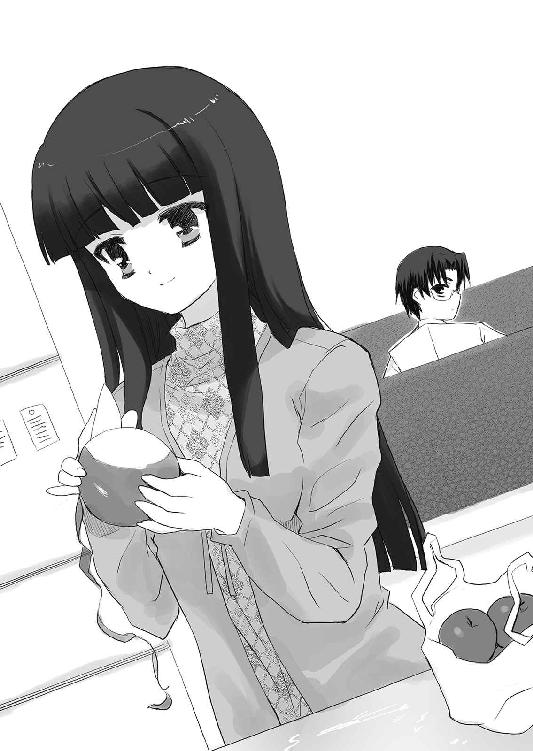
あれほどの絶望すらも時が、新たな人との出会いが解決してくれるのかもしれない。私はそう信じたくなった。
もちろん理屈ではそんなはずはないとわかってはいた。美佐枝さんのことを思えば、そんなことはないのは明らかなのだ。有馬君は偽りと共に生きている。そうでなければ、美佐枝さんと共に暮らしてるはずだ。美佐枝さんはこのマンションの十二階に住んでるのだから。
でも、だからこそ信じたいと思うのだ。
このあるはずのない十三階が存在するような奇跡が他にもあるはずだ──と。
おしまい
あとがき
千夜子＆ツバメ「ラジオナンバーいちさんぜろいーち！」
千夜子「富士見まして、ミステリーは。ルームナンバー００００１、大海千夜子です」
ツバメ「富士見まして、ミステリーはぁ。ルームナンバー００００２、鍵原ツバメです」
千夜子「ドラマＣＤのあとがきに続き、今度は文庫のあとがきってちょっと嬉しいよね」
ツバメ「まあ、嬉しいけど、どっちもラジオじゃない辺り、何か根本的におかしくない？」
千夜子「そう言われてみるとそうだね。なんで私たち二人がこんなコーナーやってるの？」
ツバメ「......いや、私に聞かれても」
千夜子「それじゃ気にしないことにして──さて、最初のコーナーは『教えて、千夜子ちゃん』です。さっそく一枚目」
千夜子「東京都の『あの裏返り者め』さんからのお便りです。僕の友達が先日、『彼女に口で皮を剥いてもらった』と自慢してました。千夜子さんは最初から剥けてるのと、途中から剥けるのとではどっちがいいですか？」
ツバメ「千夜子？ なんでそんなハガキを読んでるの？」
千夜子「え？ 新井さんが自分に何かあったらこれを読めって言ってたから......」
ツバメ「新井ぃ──────────！」
千夜子「ツバメ？ 新井さんはもう死んじゃってるんだよ？ というかツバメが殺しちゃったんじゃない。すごい勢いで何度も殴って」
ツバメ「え？ 私が？ いや、そりゃドラマＣＤのあとがきで確かに『死ねえ、このクズが！』って殴り殺した記憶はあるけど......本当にあれで死んじゃったの？」
千夜子「うん。だから今、自分に何かあったらって言い残してたハガキを読んだんだけど」
ツバメ「そ、そうなんだ。でも本当に私が殴り殺してたら、こんなにのんきにラジオ番組なんてしてられないよね？ どういうことなの？」
千夜子「新井さんは今までも何度も死んでるから誰も気にしてないんじゃないかな。それにしてもこのハガキ、どういう意味なのかな？ 口で皮を剥くって......りんごを皮ごと頬張るとかそういうのとは違うんだよね？」
ツバメ「......それより今回はもっと大事なことがあるでしょ？」
千夜子「あ。今回はこのコーナーに素敵なゲストさんが来てくれてます。しかも二人も」
ツバメ「そうなんです。新井が生前、親交のあった富士見書房の作家さんです」
千夜子「まずは一人目、現在、ファンタジア文庫で大人気シリーズ『BLACKBLOODBROTHERS』を執筆中のあざの耕平先生でーす」
ツバメ「あざの耕平先生、富士見まして、ミステリーはぁ」
あざの「富士見まして、ファンタジはー！ あざの耕平です」
千夜子「あざの先生には以前、公開録音にも来ていただいて、その時にも言ったと思うんですけど、私、あざの先生の作品の大ファンなんですよー」
ツバメ「千夜子、千夜子！ なんか中身出てる、中身出てるっ！」
千夜子「え？ あ、そうか。私、今は千夜子ちゃんなんだっけ？」
ツバメ「失格！──って千夜子のセリフじゃなかったっけ？」
千夜子「ごめん、ツバメ......」
あざの「えっと、そろそろいいですか？」
千夜子「あ、すいません。私のせいで......」
あざの「いや、俺の本を買ってくれてる人なら、それだけでもう大歓迎ですけどね」
千夜子「そ、そうなんですか？ あざのさんは格好いいだけじゃなくて優しいんですねー」
あざの「まあ、新井さんは俺のこと、『中身が黒い』とか『さすがＢＢＢの作者、本当に黒い血が流れてる』とか言ってたけど、実際にはそんなこと全然ないからさ」
千夜子「そうですよねー。私、新井さんの言葉より、あざのさんの言葉を信じます！」
あざの「死んじゃった人を悪く言いたくはないけど、そういうところだけはね」
千夜子「はい。わかります。あざのさんは腹黒なんかじゃありません。皆さんももうわかってますよね？ ツバメもわかってるよね？」
ツバメ「そりゃ、まあ、新井よりはあざの先生の言葉を信じるけど、私も」
千夜子「そしてそんなあざの耕平先生と同じく、現在、ファンタジア文庫で『火の国、風の国物語』を執筆中の師走トオル先生もゲストとして来てくれています」
ツバメ「師走トオル先生、富士見まして、ミステリーはぁ」
師走 「富士見まして、ファンタジはー！ 師走トオルです」
あざの「やあ、トオル」
師走 「......は、はい」
あざの「我は幻想世界にて吸血鬼より生まれ、吸血鬼に戻りし者、あざの耕平。密造酒と薬物に溺れ、怪奇な世界に一時まぎれし者。されど今、我は幻想世界にあり、赤き衣をまとい王の道を歩む。ようこそ、親愛なる同士、怪奇の離反者よ。我はお前を歓迎しよう」
千夜子「わー！ ＢＢＢっぽい挨拶ですね。さすが、あざの先生！」
あざの「いや、まあ、それほどでもないけどね......ところで、トオル？」
師走 「は、はい？」
あざの「俺はこれで、ミステリー文庫でもファンタジア文庫でも、お前の先輩ってことになるよな？」
師走 「そ、その通りです、先輩」
あざの「ところで、トオル？」
師走 「は、はい。まだ何か？」
あざの「俺、煙草吸おうとしてるよなあ。な、俺、今、そういう顔してるだろう？」
師走 「は、はい。すみません。気が利きませんで......」
師走、あざのの煙草にライターで火を付ける。
あざの「ふぅー。トオルがつけてくれた煙草は美味いなあ」
師走 「勿体ないお言葉です」
千夜子「それで、師走先生？」
師走 「は、はい？」
千夜子「師走先生の『火の国、風の国物語』は今月二十日に二巻が出るという新しいシリーズですが、どんな作品なんですか？ ドラゴンマガジンでも連載中ですけど、それと文庫の方とはどういう関係なんですか？」
師走 「まず、タイトルの火の国なんですが、火の国といっても熊本とは関係ありませんで」
ツバメ「............そうですか」
師走 「......えっと、ちょっと十代には難しい振りだったみたいですね」
千夜子「というか、それ、別の番組でも言ってましたよね？」
師走 「そ、そうでしたっけ？ あれ？」
千夜子「私、その場にいたから覚えてますよ？」
ツバメ「千夜子！ また中身出てる、中身！」
千夜子「あ、そうか。私、千夜子ちゃんだったんだ──あー！ 関係ないんですね、熊本は。そうですよね、ファンタジー作品ですから関係あるわけないですよね」
師走 「いいんですよ、そんなに頑張ってフォローしてくれなくても。すべったのは自分でもわかってますし、ギャグを説明するほど酷なこともないって思ってますから......」
千夜子「えっと、それでその！ その！ その！ ドラゴンマガジンでも連載してますけど、その辺との関係は？」
師走 「『火の国、風の国物語』は王国軍と反乱軍が戦ってる話なんですが、文庫の方は王国軍、連載の方は反乱軍の方から見た話になってるんですよ。連載の方は反乱軍の話だけに、色々な登場人物が出てくるので話まで氾濫してどうかしないように気をつけてます」
ツバメ「............そうですか」
師走 「えっと、ちょっと十代には難しい振りだったみたいですね」
ツバメ「難しいっていうか、ぶっちゃけ、つ──」
千夜子「わわわわ！ ツバメ！ ツバメ！ 失格！ パーソナリティなんだから、いくら本当でもそんなこと言ったらダメだよ。師走先生はゲストなんだよ？」
ツバメ「それはわかるけど、さっきのはいくらなんでもひどかったわよ？」
千夜子「気持ちはわかるけど......」
師走 「そうですか、わかるんですか......」
千夜子「えっと話は戻って、あざの先生。あざの先生の作品って登場人物が多いけど、読みやすいというかスラスラ読めますよね？ 私、文章を読むのはあんまり得意じゃなくて読めないことも多いんですけど、あざの先生の作品だけはあっという間に読んじゃうんですよー」
ツバメ「千夜子？ 一応、これ、富士見書房様の提供でお送りしてるラジオ番組って設定だから、発言には気をつけた方がいいと思うよ？」
千夜子「え？ 私、なんか変なこと言った？」
ツバメ「......いや、まあ、あざの先生の本は読みやすくて面白いからいいわよね」
千夜子「本当、面白いんだよ？ ツバメは読んだことないの？」
ツバメ「湘南骸骨男伝説の辺りまでは読んだけど、話がいつになったら始まるのかわからなかったのでそこで止まってる」
千夜子「えー！ 勿体ないよー。あざの先生はスロースターターって呼ばれてて、三巻くらいから尻上がりに面白くなるんだから！ ですよね、あざの先生？」
あざの「いや、俺の本を買ってくれてる人なら、それだけでもう大歓迎ですけどね」
千夜子「はぁああ......やっぱりあざのさんって優しいですよね」
師走 「（ボソッ）単に金の亡者なだけなのにな」
あざの「あん？ トオル、今、何か言った？」
師走 「いえ、別に何も。いや、むしろ、千夜子ちゃんの言うとおりだなーって」
あざの「なら、いいんだけどさあ。富士見ミステリー文庫を裏切ったついでに、俺まで裏切ろうとか思ってるんだったら──わかるな？（にっこり）」
師走 「いや、まさか、そんな！ 私はもう連載を続けるだけでひーひー言ってる売れない作家ですから、アニメ化までして大活躍中のあざの様のことを裏切るなんてありえませんよ」
あざの「ふふふ。そういうお前の頭のいいところ、俺、嫌いじゃないぜ」
師走 「あ、ありがとうございます、あざの様」
あざの「それでさあ、トオル？」
師走 「は、はい？」
あざの「俺たちって、ミステリー文庫でもファンタジア文庫でも、先輩と後輩なんだよな？」
師走 「そ、その通りです、先輩」
あざの「でな、トオル？ 俺、煙草吸おうとしてるよなあ。な、俺、今、そういう顔してるだろう？」
師走 「すみません。気が利きませんで......（くそう、いつかきっと......いつかきっと......いつかきっと......）」
二〇〇七年 十二月 新井 輝
初 出
僕と綾さんと千人の千夜子ちゃん
月刊ドラゴンマガジン２００７年３月号
私とお嬢様とメガネなお仕事
月刊ドラゴンマガジン５月号増刊ファンタジアバトルロイヤル２００７春号
私と圭一郎と恐怖の館
月刊ドラゴンマガジン２００７年10号月
私とエリさんと嫌でも目立つ自分 書き下ろし
私と有馬君と病院での出会い 書き下ろし
ROOM NO.1301
しょーとすとーりーず・ふぉー
新井 輝
平成24年12月13日 発行
発行者 山下直久
発行所 株式会社富士見書房
〒102-8144 東京都千代田区富士見1-12-14
http://www.fujimishobo.co.jp/
(C)2008 Teru Arai, Sacchi/Fujimishobo